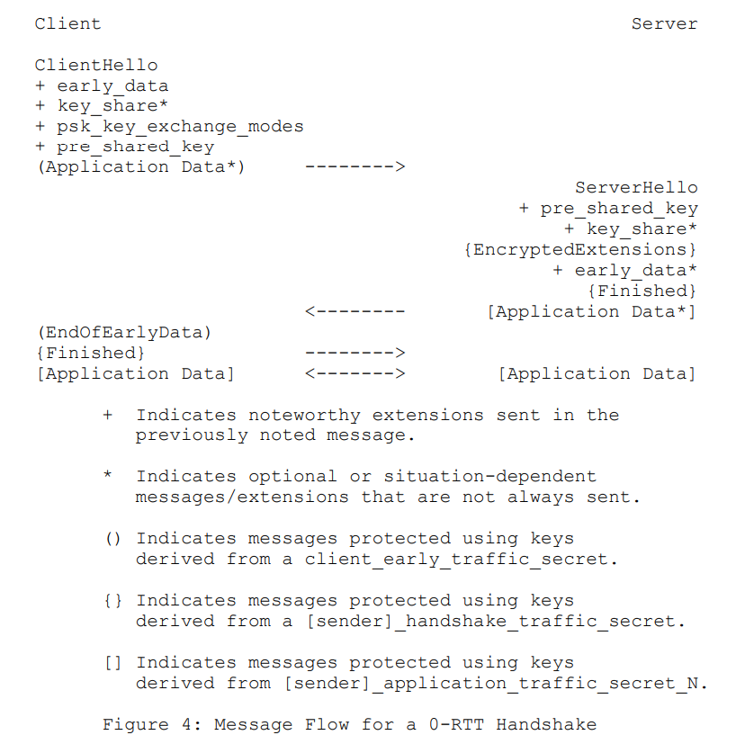
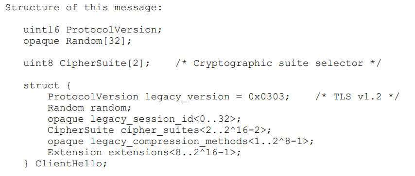
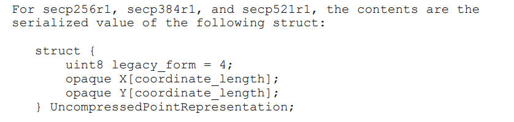
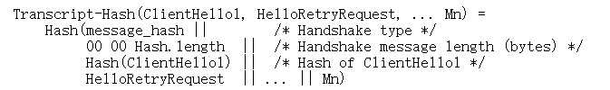
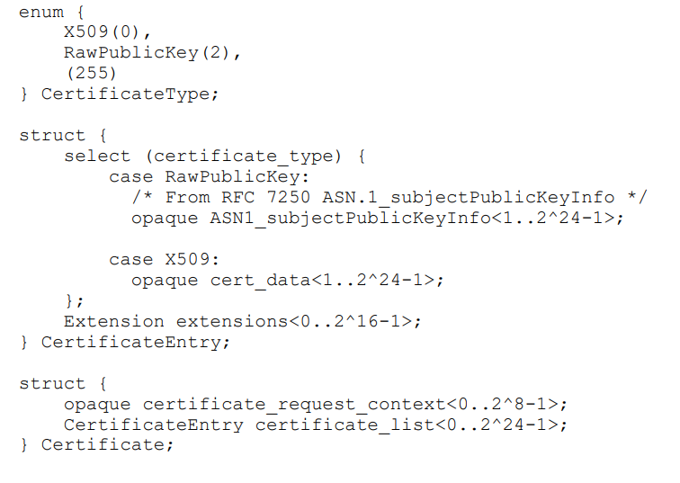
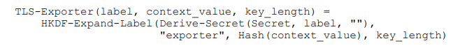

Rust Magazine 2022 第一季
作者： 张汉东
发刊通告
Rust Magazine 于 2021 年 1 月创刊，其初衷是想成为国内 Rust 用户分享自己学习和使用 Rust 的经验平台。然而事与愿违，虽然 2021 年期刊完整输出了，也受不少 Rust 社区朋友的喜欢，但是其实它并没有达成既定的目标。
所以，2022年 《Rust Magazine》 将重新定位：Rust 生态观察者。
《Rust Magazine》将按季度发布，分类记录 Rust 生态中的一举一动。Rust 用户可以在这里找到不错的学习资源、项目实践的灵感、有趣的开源项目，并且可以及时了解 Rust 官方动态、社区事件等。
当然，也继续接受投稿。投稿更加简单，只需要找到每个季度的 contribute 目录直接发 PR 即可，内容只限于 Rust，只要你觉得你写的内容对大家有帮助，就值得分享。
Rust 生态第一季回顾
2022 年，在整个世界都还在意犹未尽地总结 2021 年有什么收获且对新的一年做出展望的时候，俄乌战争爆发了。这场战争，不仅仅波及了俄乌两国的人民，还聚焦了整个世界的关注，包括我们 Rust 社区。
Rust 官方在发布 1.59 稳定版的博客中，写道：
Today's release falls on the day in which the world's attention is captured by the sudden invasion of Ukraine by Putin's forces. Before going into the details of the new Rust release, we'd like to state that we stand in solidarity with the people of Ukraine and express our support for all people affected by this conflict.
中文翻译：
今天的发布正值普京的部队突然入侵乌克兰，吸引了全世界的注意力。在详细介绍新的Rust版本之前，我们要声明，我们声援乌克兰人民，并对所有受这场冲突影响的人表示支持。
因为国内外政治风向不同，这件事引起国内社区的热议，包括其他技术社区，尤其是前端社区，甚至还出现了去 react 官网留言辱骂的行为。个人认为没有必要做出这么极端的行为。 Rust 官方在很早之前就说过，技术是离不开政治的。
那么，我们应该如何看待 Rust 官方这种行为呢？
- 从人道主义角度来说，支持乌克兰人民是必须的。但我们不仅仅支持乌克兰人民，我们也支持世界上任何一个受战争迫害国家的人民。
- Rust 官方有官方自己的立场，我们也无权干涉。
- 我们可以不在技术社区谈论政治，但作为世界公民有义务关注政治形势，因为我们每个人都不可能独善其身。
- 虽然技术离不开政治，但是在开源社区，至少还有开源行为规范，我们应该尽力遵守行为规范，共同维护和谐交流的社区。
- 无论是技术上还是政治觉悟上，要努力提升自己，不随大流，不被当枪使，不要人云亦云，有自己的独立思考。
也因为此次事件，很多人关心，是不是 Rust 语言也会受到影响呢？
其实没必要惊慌，真实的开源世界是很复杂的。GitHub 作为美国的公司，肯定要遵循美国的法律。Rust 在 GitHub 上开源，但 Rust 是全球的，代码是完全可以 fork 到其他任何地方的。
美国向这个世界贡献了那么多好的技术、理念、文化，因此才能成为世界的领导者。而中国如果想要崛起，想要成为多极世界中的一极，同样需要贡献足够多的“礼物”。 - 开源社庄表伟 《面对真实的开源世界，丢掉幻想，但也不必恐慌》
所以，如果我们需要 Rust，那么我们就需要给 Rust 做更多贡献。
在 2022 年第一季度，Rust 生态整体来说平稳发展。但也有一些值得关注的点：
- Rust 语言团队 2024 Roadmap 已经发布。Rust 语言团队将聚焦于以多种不同的方式扩展授权，让越来越多的人受益，也就是说，让 Rust 广泛应用，将专注于三个主要主题来完成这个目标：拉平学习曲线、扩展生态系统、扩展项目。
- WebAssembly 发展初露苗头。DeisLabs 团队中九人集体离职成立初创公司 Fermyon，并推出WebAssembly 框架 spin。DeisLabs 属于微软，他们的开源项目基本都是围绕 Rust 和 WebAssembly 在云原生的一些应用，有好几个 CNCF 项目。现在突然九人一起离职创建新公司，并专注于 WebAssembly，那证明他们一定看到了 WebAssembly 的广泛前景。
- Rust 生态中终端应用不断涌现出优秀应用。说明目前在终端应用领域，Rust 是非常成熟了。
- Rust 跨平台开发已凸显出了它的优势，尤其在 GUI 领域。
- Rust 在区块链领域的应用也非常值得关注。
- Rust 安全依然不容忽视，从 RustSec 和 GitHub 公告中看出，Rust 中内存安全和线程安全漏洞依然多于其他漏洞。
- Rust 在生物信息科技领域也有好几个开源应用，比想象中要多，主要集中在基因测序方向上。
- 有人开始用 Rust 来重写经典软件了，比如 Fornjot 要创建下一代 Code-CAD 。
- 在学术领域，研究 Rust 和 WebAssembly 的论文越来越多了。
还有很多内容，希望大家可以从本刊提供的信息中受益！
资源
官方动态
Rust 语言团队 2024 Roadmap 发布
Rust 语言团队将聚焦于以多种不同的方式扩展授权，让越来越多的人受益，也就是说，让 Rust 广泛应用。将专注于三个主要主题来完成这个目标：拉平学习曲线、扩展生态系统、扩展项目。
https://blog.rust-lang.org/inside-rust/2022/04/04/lang-roadmap-2024.html
2021 Rust调研
2021年12月时，Rust项目组对于Rust发布了一次调研。详细调研结果可见《Rust Survey 2021 Results》，部分结果概括如下：
- 90%的参与者目前正在使用Rust；
- 78%的参与者使用英文填写问卷；
- 23%的参与者主要使用Rust编程，59%的参与者至少偶尔在工作中使用Rust；
- 关于为何在工作中使用Rust，96%的参与者认同Rust的正确性，92%的参与者认同性能，89%的参与者认同安全性。
Rust 1.59.0
Rust 1.59.0版本发布于2022年2月24日。
新的稳定版本内容大致如下：
-
编写汇编代码时，可以将变量名写到花括号内了，形同
format!更新后的使用方式。例如，现在支持这种写法：#![allow(unused)] fn main() { use std::arch::asm; // Multiply x by 6 using shifts and adds let mut x: u64 = 4; unsafe { asm!( "mov {tmp}, {x}", "shl {tmp}, 1", "shl {x}, 2", "add {x}, {tmp}", x = inout(reg) x, tmp = out(reg) _, ); } assert_eq!(x, 4 * 6); }- 支持的汇编语言为：x86，x86-64，ARM，AArch64，RISC-V
-
支持包含未初始化变量的元组、数组、或结构体语法作为赋值命令的左值，并拆分右值的元组、数组、结构体，为左值中的变量一一赋值。例如：
#![allow(unused)] fn main() { let (a, b, c, d, e); (a, b) = (1, 2); [c, .., d, _] = [1, 2, 3, 4, 5]; Struct { e, .. } = Struct { e: 5, f: 3 }; assert_eq!([1, 2, 1, 4, 5], [a, b, c, d, e]); // 但是不可以这样写 // let mut (a, b); // (a, b) = (1, 2); // `+=` 的写法是不允许的 // (a, b) += (1, 2); } -
常量泛型可以指定默认值了，同时不再要求常量泛型必须写在一般泛型之后，例如：
#![allow(unused)] fn main() { struct ArrayStorage<T, const N: usize = 2> { arr: [T; N], } // 指定默认值 impl<T> ArrayStorage<T> { fn new(a: T, b: T) -> ArrayStorage<T> { ArrayStorage { arr: [a, b], } } } // 不再要求常量泛型必须写在一般泛型之后 fn cartesian_product< T, const N: usize, U, const M: usize, V, F >(a: [T; N], b: [U; M], f: F) -> [[V; N]; M] where F: FnMut(&T, &U) -> V { // ... } } -
优化了 Rust 编译器报错，当后续更新版本不兼容当前代码时，Cargo 产生告警并提前预知用户。可以通过
cargo report指令检查新版本是否兼容当前代码。 -
可以通过设置
Cargo.toml而非手动的方式去除不需要的二进制符号了。例如：[profile.release] # 对于 release 版本，去除所有的 debug 符号 strip = "debuginfo"目前可选选项如下：
选项 释义 strip = "none" (default) / strip = false 不去除任何符号 strip = "debuginfo" 去除 debug 符号以及关于行号的 debug 信息相关的二进制内容 strip = "symbols" / strip = true 去除所有不必要符号 更详细的说明可见 Cargo Book #Strip。
-
增量编译默认值设置为1，这样可以减轻编译时可能出现的反序列化错误的影响。增量编译的详细解释可见本篇 #Rust与编译速度。
-
将一些功能引入Stable版本。
Rust 1.58
通常来说，Rust每隔6个星期会发布一次新版本。Rust 1.58.0版本发布于2022年1月13日，主要针对格式化字符串、Windows可执行文件搜索、以及对于一些功能的稳定化；而Rust 1.58.1版本发布于2022年1月20日，主要是修复了1.58.0版本中的Bug，保证系统安全。升级到新版本的方法可参考《This Week in Rust #404：Rust 2021 与 周期性服务发现》"如何升级到Rust新版本"部分。
新的稳定版本内容大致如下：
-
格式化字符串可以像Python一样，将内容对应变量直接写入
{}符号之中了，例如：#![allow(unused)] fn main() { println!("Hello, {}!", get_person()); // implicit position println!("Hello, {0}!", get_person()); // explicit index println!("Hello, {person}!", person = get_person()); // named let person = get_person(); println!("Hello, {person}!"); // captures the local `person` // 也可以使用变量值 let (width, precision) = get_format(); for (name, score) in get_scores() { println!("{name}: {score:width$.precision$}"); } }唯一的例外是
panic!宏，在2015与2018版本中，panic!("{ident}")的写法依然就产生告警。不过，2021版本维持了格式化字符串的一致性，因此这个特性在2021版本中可以正常使用。 -
对于Windows平台，
std::process::Command指令不再于当前工作文件夹中搜索可执行文件了。此前，由于Win32的CreateProcess接口，当当前程序创造子进程时，Rust会按照 子进程环境路径 - 应用文件夹 - 父进程文件夹 - 32位/16位系统文件夹 - Windows文件夹 -Path环境变量 的顺序搜索可执行文件。然而，在父进程文件夹搜索可能会导致未知行为，甚至是恶意行为，例如拦截子进程。在搜索父进程文件夹时，ripgrep命令使得攻击者可以通过-z/--search-zip或--pre标识来运行任意程序。具体的报告可见CVE。因此，Rust不再搜索父进程文件夹，同时不再搜索旧系统遗留的16位系统文件夹。 -
修复调用
std::fs::remove_dir_all时会产生竞争场景的漏洞。具体的描述可见CVE以及Rust官网发布的推文，概括一下即是，对于攻击者无权限删除的某一文件夹\sensitive，攻击者可以利用remove_dir_all，从有权限的文件夹\temp创建引用链接至\sensitive，然后在有权限应用中调用remove_dir_all，从而删除本无权限操作的文件夹\sensitive。此前，为了避免这种情况，remove_dir_all只会在判断后删除引用链接，但是在判断和真实删除之间存在时延，导致攻击者可以利用这个时延来替换删除目标，导致该漏洞。 -
对于标准库的一些函数，新增了更多的
#[must-use]属性，这一属性会检测返回值是否被合理处理，例如检查返回Result时，错误是否被处理。 -
将如下功能引入Stable版本：
-
Metadata::is_symlink
-
Path::is_symlink
-
{integer}::saturating_div
-
Option::unwrap_unchecked
-
Result::unwrap_unchecked
-
Result::unwrap_err_unchecked
-
File::options
-
-
将如下功能的返回值更新为
const：-
Duration::new
-
Duration::checked_add
-
Duration::saturating_add
-
Duration::checked_sub
-
Duration::saturating_sub
-
Duration::checked_mul
-
Duration::saturating_mul
-
Duration::checked_div
-
-
对于Rust工具（Clippy， Rustc，Fmt等）进行了更新，具体可见1.58.0以及1.58.1更新日志，在此暂略。
Rust 核心团队有三人宣布退出
-
Steve Klabnik， 将离开核心团队和安全响应工作组。Steve 9年前开始使用 Rust。自 2014 年以来，他是 Rust 编程语言书（the book）的主要作者和核心团队的一员。他一直在运行 @rustlang Twitter 帐户，因此形成了该项目的许多“声音”。Steve 现在可以专注于使用Rust 而不是制作Rust。
-
Florian Gilcher， 正在退出他所有的项目职位。他于 2019 年成为核心团队的观察员，并于 2020 年成为核心团队的正式成员。他还担任过 Rust 基金会董事会的项目总监。在此之前，他自 2015 年以来一直是社区团队的一员。由于他专注于自己的公司并承担其他业务义务，因此他正在为项目中的其他人腾出空间。
-
Pietro Albini， 将离开核心团队，专注于项目的其他部分，包括基础设施团队和安全响应工作组。他于 2019 年底加入核心团队，在成为基础设施团队的联合负责人后不久，但核心团队的工作量让他很难在项目中的其他角色上花费足够的时间。
https://blog.rust-lang.org/2022/01/31/changes-in-the-core-team.html
2022年异步Rust的改进计划
Niko Matsakis 和 Tyler Mandry 代表 Async 工作组发布了一篇文章，阐述了在 2022 年异步 Rust 的改进计划。
Rust 2024 Edition 中使用异步 Rust 的愿景
文章中先假设了一个 Rust 2024 edtion 中实现的异步愿景。
假设在 Rust 2024 Edition 中，你使用异步 Rust 创建一个新项目：使用crates.io 的第三方库 crabbycat来遍历指定 GitHub 仓库的issues列表：
async fn main() {
for await? issue in crabbycat::issues("https://github.com/rust-lang/rust") {
if meets_criteria(&issue) {
println!("{issue:?}");
}
}
}
你的项目似乎工作正常，这个时候有人给你发起 PR: 增加 GitLab 支持。你看到 PR 的代码有下面改进：
// 增加了 Async Trait `IssueProvider` 来抽象 issues 接口
// 兼容 GitHub/Gitlab/Gitothers
trait IssueProvider {
// 这个 issues 方法只需要遍历issues即可
// 所以需要是一个实现AsyncIterator的类型
async fn issues(&mut self, url: &str)
-> impl AsyncIterator<Item = Result<Issue, Err>>;
}
#[derive(Debug)]
struct Issue {
number: usize,
header: String,
assignee: String,
}
// 使用独立的方法打印issues列表
// provider代表issues提供方是GitHub 还是 其他，比如 Gitlab
fn process_issues(provider: &mut dyn IssueProvider) {
for await? issue in provider.issues("https://github.com/rust-lang/rust") {
if meets_criteria(&issue) {
println!("{issue:?}");
}
}
}
你合并了该 PR，一切OK。后面有人想将你的项目移植到 Chartreuse 操作系统，而 Chartreuse 操作系统是基于 Actor 模型的，并且有自己的自定义异步运行时。然而，你其实并不需要关心这些。因为你所有代码都能够无缝地将底层运行时实现切换到 Chartreuse 异步运行时。
在 2022 年将要完成的目标
看得出来，异步 Rust 在 2024 Edition 会更加的完善，使用起来更加方便。但是为了达到这个目标，2022年必须完成一些基础工作，并且可以预料到的是，在这个过程中，异步 Rust 的很多细节会发生大量变化，不出意外的话，生成器的语法应该会备受争议。但我们的整体愿景并不会改变：编写异步 Rust 代码应该像编写同步代码一样简单，除了偶尔出现的async和await关键字。
为此，Async 工作组组织成许多不同的计划，每个计划都在追求愿景的一部分：
- 异步基础计划，由 tmandry领导，聚焦于解决trait中支持
async fn的难题。过去一年的工作：- 协调和支持
GAT和impl Trait计划。 - 起草 RFC #3185，在 trait 中实现静态
async fn，用于支持静态分发，即，可以返回impl Trait。 - 致力于动态分发的设计，Niko 有一系列博文阐述相关内容：Dyn async traits。
- 其他改进，比如Contexts and capabilities in Rust。
- 协调和支持
- 异步迭代器计划，由estebank领导，探索生成器和异步生成器。Estebank 为生成器制作了一个程序宏的原型，并呼吁讨论语法和其他细节。
- 可移植性计划，在nrc的带领下，探索如何让代码在运行时之间轻松移植，从标准化的特征开始，例如
AsyncRead和AsyncWrite。 - 抛光打磨（Polish）计划，由eholk领导，专注于通过较小的变化来提高现有的能力，这些变化共同产生了巨大的影响。比如：
- 工具计划，由pnkfelix领导，致力于支持异步生态系统中那些正在创建有趣的工具来支持异步Rust的开发者们，诸如：
- Michael Woerister正在探索异步crashdump恢复，提供一种机制来恢复和检查基于crashdump的异步Rust程序的状态。
- Eliza Weisman和其他许多人最近宣布了他们0.1版本的
tokio-console（异步Rust程序的诊断和调试工具）。
上面这些计划都可以在 roadmap 中找到。
你如何参与
如果你想参与，最好的路线是先从「打磨抛光计划」开始，在其页面上有"如何帮助 "部分可以参考。
Rust 2024 ：敢于要求更多
Rust 语言团队 Leader Niko 在其博文上畅想 Rust 2024 Edition：
- 敢于要求更符合人体工程学、更具表现力的 Rust
- 敢于要求更符合人体工程学、表现力更强的异步Rust
- 敢于要求更符合人体工程学、表现力更强的Unsafe Rust
- 敢于要求从 Rust 的工具中获得更丰富、更具交互性的体验
- 敢于为Unsafe Rust要求更丰富的工具
https://smallcultfollowing.com/babysteps//blog/2022/02/09/dare-to-ask-for-more-rust2024/
Rust 2022 编译器团队的雄心
最近，Rust编译器团队发布了2022年编译器这边要做的一些事情。有三大目标：
- 填充Rust的承诺。性能，可靠性，生产力，这三块都还有补足的空隙；
- 让开发者更开心/舒心。编译速度，运行方式，IDE等；
- 建设更好的贡献工作流。
https://blog.rust-lang.org/inside-rust/2022/02/22/compiler-team-ambitions-2022.html
Cargo Team 新增了新成员
公开宣布，Weihang Lo和Ed Page 加入 Cargo 团队。 与此同时， Alex Crichton 退出 Cargo 团队。Alex 不仅仅是对 Cargo 做了很多贡献，他对 Rust 语言和 Rust 整体生态的贡献也是非常大的。当然， Alex 只是退出 Cargo 团队而已，他还活跃在 wasmtime 等wasm相关生态上。
Weihang Lo 写了一篇文章来纪念这件事：【不必是眾星拱月那個月 也能替世界增添光芒 - 感謝 Alex Crichton 在 Cargo 的長期貢獻，沒有你就沒有現在的 Rust】 。
https://blog.rust-lang.org/inside-rust/2022/03/31/cargo-team-changes.html
rustc编译器现已支持risc-v 的 v指令集和k指令集
现在 Rust标准库上就能做risc-v的内核开发和宿主机（虚拟机）开发了。
具体来说是标准库支持了hypervisor和supervisor的扩展指令。顺便加了个is_riscv_feature_detcted!宏，能在用户态检测riscv扩展是否存在，已经在真机上跑通，合理利用检测宏，能彻底解决“生态碎片”问题。
现在又新增了 V指令集和 K 指令集支持，预计进1.61稳定版rust。
由洛佳提供支持。相关 PR 。
- https://github.com/rust-lang/rust/pull/94995
- https://github.com/rust-lang/rust/pull/92574
- https://github.com/rust-lang/stdarch/pull/1271
nrc 博文｜ Rust in 2022
Rust 度过了美好的一年。从用户数量、领域多样性、用户承诺、用户规模等方面来看，Rust 现在拥有非常稳固的用户基础。Rust 还拥有大量慷慨的赞助商，无论是通过基金会还是通过公司支付民间费用。社区大多是健康的。在技术方面，Rust 语言、库和工具现在都非常可靠，2021版也顺利发布。
2022 年的 Rust，需要关注些什么呢？
2022 年，要解决的重要问题是项目领导问题和组织债务，并重新关注 Rust 的成熟度。同时，需要继续做下面这些正确的事：
- 维护工作、保持 Rust 运行（错误修复、性能改进、持续支持等），这是一项艰巨且大多乏味的任务。
- 基础设施和版本。
- 开发和维护 Rustup 和 Rustdoc 等基本工具。
- 完善 IDE 支持，这仍旧是 Rust 的一个弱点，但仍在不断改进。
- 研究人体工程学，并打磨语言、库、工具、文档等方面的不足之处
- 在更广泛的社区中使用 Rust 库。
- 审核和其他社区工作。
- 重构、偿还技术债务和核心工具（例如，Chalk）。
- 致力于形式化 Rust、Rust 的内存模型、更好地理解不安全代码、开发 miri 等。
- 改进错误处理库。
- 使用 const 泛型。
https://www.ncameron.org/blog/rust-in-2022-2/
感谢 Joshua Nelson 为 rustdoc 所做的工作
有的人可能知道，jynelson 在成为 rustdoc 团队成员的 2 年后（后来成为联合负责人），最近辞去了该团队的领导职务。他在 rustdoc、docs.rs 和 rustc dev-guide 上的工作（通常是吃力不讨好的）有助于使 rust 成为一种令人惊叹的语言，可以为每个人编写和阅读文档。出于这个原因，我想花几分钟来强调一些我们有时认为理所当然的重大变化。
毫无疑问，最显而易见的功能改进是文档内链接。这允许您像路径导入一样（例如 Foo）编写指向其他位置的链接，轻松无压力。这个概念已经进行了很长时间，但它曾经从根本上被破坏并且在多个方面无法使用。在超过 54 个 PR 中，文档内链接从一个破碎的概念变成了编写 Rust 文档的基本特征。
像所有组成 rust 治理的优秀团队成员一样，Joshua 也一直站在 FCP、PR、问题、RFC 等的前沿。在后台进行的这项繁琐的工作有助于使 rust 成为一种很棒的语言，然而无聊而且常常吃力不讨好。
还有无数的内部修复，以使 rustdoc 更少错误、更快、更清洁等。或者他在 docs.rs 和 rustc 开发指南上的工作。
https://www.reddit.com/r/rust/comments/s0pcfa/lets_take_a_moment_to_thank_joshua_nelson_for_his/
Nicholas: 2022年如何加速 Rust 编译器
在 2016 年到 2020 年间，Nicholas 写了一系列名为“如何加速 Rust 编译器”的博文。 这些主要是关于其在 Rust 编译器上的工作，以及总体上关于 Rust 编译器速度进展的一些更新。现在他作为 Futurewei 的 Rust 团队一员，是时候重新开始这个博客系列了。
- https://nnethercote.github.io/2022/02/25/how-to-speed-up-the-rust-compiler-in-2022.html
- Compiler performance roadmap for 2022
IDE 和 proc 宏
这篇文章探讨了 rust-analyzer 如何计算 proc 宏，以及列出当前 ra 存在的问题（包括其他 IDE），并给出可行的解决方案：改进 proc 宏，让它对 IDE 更加友好。
https://veykril.github.io/posts/ide-proc-macros/
Rust 的Unsafe Pointer类型需要大修
来自 gankra 的博文。作者经常思考 Rust 中的Unsafe Pointer问题。
作者写了一本关于 unsafe Rust 的书（编按：也就是大家常说的 ”unsafe rust黑魔法”），还有关于 Rust 实现链表的书。同时，作者重新设计了 Rust 的指针 API，并为不安全的堆分配缓冲区设计了标准库的抽象，并维护替代的 Vec 布局。
作者经常思考 Rust 中Unsafe Pointer的问题，并表示讨厌它们。但不要误会作者的意思，他认为自己的所有工作都让它们变得更好，但它们仍然存在严重缺陷。事实上，他们已经变得更糟了。不是因为 API 发生了变化，而是因为我们处理这些东西时，我们对指针应该如何工作的理解太天真了。
他认为 Unsafe 指针类型中的三个大问题：
- 允许把整数声明为指针 （Integer-To-Pointer Casts Are The Devil）
- 引用的有效断言过于严格（References Make Really Strong Assertions）
- 偏移和位置很混乱（Offsets And Places Are A Mess）
并且在文中给出了一些解决方案。
https://gankra.github.io/blah/fix-rust-pointers
Rust 中#[doc]属性的改进
从 Rust1.54 开始，我们现在可以在属性中使用类似函数的宏。 #[doc] 属性有很多优点，让我们来看看其中的一些！
例如只需在lib.rs文件的顶部编写 README 即可：
#![allow(unused)] #![doc = include_str!("README.md")] fn main() { }
同时 README 文件现在将成为 crate 的文档，并且其中的代码示例也将被测试。
https://blog.guillaume-gomez.fr/articles/2021-08-03+Improvements+for+%23%5Bdoc%5D+attributes+in+Rust
let chains 有望在 1.62 到达稳定状态
如果下面的 pull 通过, let chains 的语法支持有望在 1.62 到到达稳定. 届时,下面的语法将会被支持.
很多小伙伴已经等了很久了.
fn main() { let outer_opt = Some(Some(1i32)); if let Some(inner_opt) = outer_opt && let Some(number) = inner_opt && number == 1 { println!("Peek a boo"); } }
https://github.com/rust-lang/rust/pull/94927
RFC 2789: Sparse Index
RFC 2789 不涉及具体的 Rust 语言特性，而是针对于 crates-io 索引的下载方式进行了变更，将原先使用的预先 Git Clone 模式改为了按需使用 HTTP 传输，相对优化了下载速度。
RFC 3151: Scoped Threads
标准库新增了带有命名域限制的线程，具体可见RFC 3151。举例如下：
#![allow(unused)] fn main() { let var = String::from("foo"); thread::scope(|s| { s.spawn(|_| println!("borrowed from thread #1: {}", var)); s.spawn(|_| println!("borrowed from thread #2: {}", var)); }); }
线程可以借用父线程的变量，且在命名域之外无效。也就是说，当命名域结束的时候，所有的线程会调用join()方法，等待线程结束。不过同时，如果任何线程在调用join()时panic，那么thread::scope()也会panic。不过，也可以手动调用join()，例如：
#![allow(unused)] fn main() { let greeting = String::from("Hello world!"); thread::scope(|s| { let handle1 = s.spawn(|_| { println!("thread #1 says: {}", greeting); }); let handle2 = s.spawn(|_| { println!("thread #2 says: {}", greeting); }); // 也可以不调，当 thread::scope 结束的时候，会自动调用 join // 等待未结束的线程结束 handle1.join().unwrap(); handle2.join().unwrap(); }); }
对于scope以内的变量，线程无法直接借用，需要通过参数的形式传递。例如：
#![allow(unused)] fn main() { thread::scope(|s| { s.spawn(|s| { s.spawn(|_| { println!("I belong to the same `thread::scope()` as my parent thread") }); }); }); }
社区热点
俄乌战争开启，Rust 官方博客向乌克兰报以人道主义关怀
Rust 官方在发布 1.59 稳定版的博客中，写道：
Today's release falls on the day in which the world's attention is captured by the sudden invasion of Ukraine by Putin's forces. Before going into the details of the new Rust release, we'd like to state that we stand in solidarity with the people of Ukraine and express our support for all people affected by this conflict.
中文翻译：
今天的发布正值普京的部队突然入侵乌克兰，吸引了全世界的注意力。在详细介绍新的Rust版本之前，我们要声明，我们声援乌克兰人民，并对所有受这场冲突影响的人表示支持。
因为国内外政治风向不同，这件事引起国内社区的热议，包括其他技术社区，尤其是前端社区，甚至还出现了去 react 官网留言辱骂的行为。
个人认为没有必要做出这么极端的行为。 Rust 官方在很早之前就说过，技术是离不开政治的。
那么，我们应该如何看待 Rust 官方这种行为呢？
- 从人道主义角度来说，支持乌克兰人民是必须的。但我们不仅仅支持乌克兰人民，我们也支持世界上任何一个受战争迫害国家的人民。
- Rust 官方有官方自己的立场，我们也无权干涉。
- 我们可以不在技术社区谈论政治，但作为世界公民有义务关注政治形势，因为我们每个人都不可能独善其身。
- 虽然技术离不开政治，但是在开源社区，至少还有开源行为规范，我们应该尽力遵守行为规范，共同维护和谐交流的社区。
- 无论是技术上还是政治觉悟上，要努力提升自己，不随大流，不被当枪使，不要人云亦云，有自己的独立思考。
https://blog.rust-lang.org/2022/02/24/Rust-1.59.0.html
AdaCore 和 Ferrous Systems 合作为 Rust 工具链 Ferrocene 认证各种安全标准
AdaCore 与 Rust 编程语言专家公司 Ferrous Systems 建立了战略合作伙伴关系，以进一步开发 Ferrous Systems 的 Ferrocene （二茂铁）Rust 工具链，以支持嵌入式任务和安全关键应用程序，并使其符合相关行业软件安全标准。
在工业应用中，人们对 Rust 的兴趣和使用越来越多，但对于汽车、航空航天和国防等安全关键市场，目前还没有经过安全认证的 Rust 工具链。Ferrocene 合作伙伴关系将支持希望将新兴的 Rust 语言技术集成到其安全关键应用程序中的客户的认证需求。
25 年来，AdaCore 通过投资新架构、语言和技术来支持安全和关键任务行业不断变化的需求。我们相信，在安全和安保关键领域都需要 Ada 和 Rust - AdaCore 产品管理和业务开发负责人 Quentin Ochem 如是说
对于 Ferrous Systems 而言，Ferrocene 是一个利用 Rust 的技术专长和与 Rust 社区的关系将 Rust 转变为任务和安全关键嵌入式软件开发的关键位置的机会。
对于 AdaCore 而言，通过与 Ferrocene 的开发合作，它补充了公司对 Ada 的长期承诺，并提供了将在安全认证的 Ada 工具链开发中获得的专业知识扩展到 Rust 社区的机会。
https://www.adacore.com/press/adacore-joins-forces-ferrous-systems-support-rust
出现首个用 Rust 编写的勒索软件即服务(RaaS)
2021 年 12 月，研究人员发现了一种名为ALPHV（又名“ BlackCat ”）的新型勒索软件即服务（RaaS, ransomware-as-a-service），它被认为是第一个创建和使用以Rust编程语言编写的勒索软件的专业网络犯罪组织。
以下是一些关键要点：
- 该组织正在积极招募前 REvil、BlackMatter 和 DarkSide 运营商
- 自 2021 年 11 月以来活动增加
- 丰厚的会员支出（高达 90%）
- 基于 Rust 的勒索软件可执行文件（快速、跨平台、针对每个受害者进行大量定制）
- 默认 AES 加密
- 内置权限提升（UAC 绕过、Masquerade_PEB、CVE-2016-0099）
- 可以通过 PsExec 传播到远程主机
- 使用 VSS Admin 删除卷影副本
- 停止 VMware ESXi 虚拟机并删除快照
与许多其他勒索软件威胁不同，ALPHV 是使用 Rust 开发的，Rust 是一种以其快速性能和跨平台功能而闻名的编程语言，导致在 2021 年 12 月和 2022 年 1 月期间观察到 Linux 和 Windows 变体。
尽管许多人认为 ALPHV 可能是第一个使用这种语言的“野外”勒索软件威胁，但Rust 勒索软件的概念验证已于 2020 年 6 月在 GitHub 上发布，尽管没有任何迹象表明这两者有任何关系有关的。
Catalin Cimpanu为The Record写道，更多恶意软件转向Rust的一个担忧是，与 C 和 C++ 相比，它被认为是一种更安全的编程语言。结果呢？安全防御者一直在寻找许多勒索软件中的编码弱点，如果更多人开始转向 Rust，那么找到这些弱点可能会变得更加困难。
最近观察到的 ALPHV 样本使用了 2021 年 11 月 4 日才发布的Zeroize版本 1.4.3，同时还使用了被 2021 年 11 月 16 日和 17 日发布的版本所取代的公钥加密版本。
虽然使用的许多 Rust crate 都有些明显，例如使用命令行界面和加密库，但使用 Zeroize（一个从内存中安全清除机密的库）似乎是故意尝试防止加密机密被泄露从受感染的主机中恢复。
https://krebsonsecurity.com/2022/01/who-wrote-the-alphv-blackcat-ransomware-strain/
AWS: Rust与可持续性
亚马逊官方博客上发表了“Sustainability with Rust”一文，通过研究和比较表明，Rust 在可持续性方面优于其他语言。该文章随后被ZDNet 报道。在 ZDNet 报道之后，Go 技术负责人 Russ Cox 发布了 14 条推文，称这篇文章严重误导了 Go 语言。
在亚马逊，Rust 已成为大规模构建基础设施的关键。2019 年，亚马逊成为 Rust 项目的赞助商。2020 年开始招募 Rust 维护者和贡献者，并与谷歌、华为、微软和 Mozilla 联手组建 Rust 基金会。
这篇文章引发的争议主要是以下几个方面：
- AWS引用的2017年前的研究存在偏见
2017 年的一项研究数据被用来证明 Rust 是一种节能编程语言。该研究侧重于测试 27 种编程语言的 10 个基准问题，并测量执行时间、能耗和内存使用峰值。这是引起争议的文章的第一部分。Russ Cox 认为其中使用 Go 1.6（2016 年 2 月）进行测试。“那已经是永远的过去式了。”最重要的是，这个“真正有趣的研究”假设计算机语言基准游戏是个可比较的程序来源，但了解这个网站的话就知道这完全不正确。
Cox 说 “几乎每个 C 程序都是有效的 C++ 程序，所以 C++ 不会输，尤其是没那么糟糕！” （此话存疑啊）
- 对比不公平
Cox 指出， Discord 的原帖中展示了一张 Go 服务器和等效 Rust 服务器的图表。Rust 具有更可预测的性能，并避免了像 Go 中的延迟峰值，但它们的性能大致相当。
在亚马逊的帖子里，在 Rust 和 Go 图表标出了“ms”与“µs”的时间刻度对比。但该对比的前提是，Rust 服务器进行了重大重写，并使用了新的数据结构和更多内存。
“这要么是完全没有理解 Discord 的帖子，要么就是公然说谎。”Cox 认为，这种对比方法在诚实、公平的情况下是很好的表达方式，“但 AWS 的帖子并非如此。”
不过，Cox 指出 Discord 的帖子是公平的。“它将 Go 服务器和 Rust 服务器进行了对比，并在文章后面单独绘制了 Rust 服务器在使用重写的数据结构和额外内存后的变化图，而 AWS 的帖子曲解了这一点。”
“在我看来，与其阅读那些将 Go 与 Rust 视为零和游戏的文章，我更愿意关注那些将 Go 和 Rust 视为相互补充、能很好协同工作的文章。”Cox 在最后说道。
编程语言之争从来没有停过，每种语言都有大批的拥护者，甚至存在“鄙视链”的说法，每年的编程语言榜单也是大家竞相关注的热点。但编程语言之间并非水火不容，开发者需要学会选择适合自己的语言。
- https://aws.amazon.com/blogs/opensource/sustainability-with-rust/
- https://www.infoq.cn/article/svgbvixxhcdf5mqvk3tv
gitoxide 可在一秒内检出（checkout）Linux 内核代码
gitoxide 是 Rust 实现的一个 Git 客户端。
测试结果是 v5.16 版在 ~874ms 内检出 Linux 内核，基于 Mac M1 pro (10 核) 测试。
https://github.com/Byron/gitoxide/discussions/349
Fermyon 推出WebAssembly 框架 spin
可以配合TO-D杂志第二季第一篇文章来看，能让人深刻理解这些开源项目背后的动机，这比单看他们的开源项目可有趣的多。话说回来，我觉得 Fermyon 的成立，应该是 deislabs 团队这这几年尝试的过程中看到了一些新的风口，他们的项目应该多多关注。
《TO-D 杂志》第二季第一篇文章正式发布，这篇文章是关于微软 DeisLabs 的故事，欢迎大家阅读转发 https://2d2d.io/s2/deislabs/ ，Deis Labs 开发了不少非常前沿的 WebAssembly 和 Rust 项目，现在他们团队中九人出来创业，成立新公司 Fermyon。
关于 Fermyon 名称由来的猜想：这个单词比较贴近费米子（fermion）。所以查了下相关概念，得出一些推论。费米子和玻色子都是宇宙基本粒子，都有自旋属性。但是费米子喜欢独来独往（泡利不相容原理，只适合费米子。 在任何量子系统中，两个费米子无法占据同一个量子态），而玻色子喜欢共享。用费米子来对应wasm的沙盒隔离性。而他们的主打项目名叫 spin 。他们这么费劲起这个名字，我想到一个原因就是避免别人抢注商标。因为之前发生过 Wasmer 抢注商标的事（Wasmer 抢注了WasmEdge的商标，甚至还把 WebAssembly 抢注为自己公司的商标）。这也算是一种商标保护。
漏洞赏金平台 Hackerone 接受 Rust 的漏洞报告
Rust 官方博客之前报告的 std::fs::remove_dir_all 函数漏洞，价值 4000 刀。
https://hackerone.com/reports/1520931
AUTOSAR 宣布成立新的汽车软件Rust编程语言工作组
在 Rust 社区中广为人知的 Christof Petig 已同意接任（Rust工作组）发言人的角色。他拥有 25 年的C++经验，在此期间已成为 Rust 爱好者。Christof 在最初的讨论中总结道，"用 Rust 编写的代码经过检查，以确保内存安全且不受数据抢占的影响。同时，由于所有可能的检查都是在编译时检查的，因此运行时开销可以忽略不计。这意味着 Rust 的性能可与C++相媲美。”由于汽车领域的其他标准化机构（如Khronos或SAE）符合此类评估，因此嵌入式软件的重点是共同努力实现有效的标准化。
所有这些对于 AUTOSAR开发合作伙伴关系及其社区来说并不陌生。AUTOSAR在C++14编码指南方面经验丰富，希望保持其创新传统，并成为以功能安全和汽车网络安全为重点的标准化机构。也因此最终决定，在功能安全工作组（WG-SAF）内成立一个小组并调查如何在AUTOSAR自适应平台中将Rust运用起来。该小组将于2022年4月正式启动，并计划制作两份文件。其中一份文件将提供有关如何在 AUTOSAR Adaptive Platform 项目环境中使用 Rust 的指导。另一个文档将提出 Rust 上的编码指南。
这篇消息目前被官方网站删除，但是在 GitHub 相关issues中，Christof Petig 透露会在之后修改文章以后重新放出来。工作组的事情正在继续中。
关于如何看待 Autosar 成立 Rust 工作组这件事，可以看知乎用户 @萧猛 的一个答案：https://www.zhihu.com/question/522187444/answer/2393987811
Areweyet 列表更新
有关 Rust 目前在各个领域的状态的汇总。
https://wiki.mozilla.org/Areweyet
《Rust 编码规范》更新到 V0.3 版本
《Rust 编码规范》更新到 V0.3 ， 欢迎大家持续评审、补充和参考
https://rust-coding-guidelines.github.io/rust-coding-guidelines-zh/
Alacritty六周年生日快乐!
<video src="https://assets.repography.com/file/repography-assets/blog/happy-birthday-alacritty/alacritty-structure.mp4" controls="controls" width="500" height="300"></video>
六年前的2月21号(2016年2月21号)，Joe Wilm提交了第一个commit到Alacritty的Git仓库：
commit 621776cd94890936b24f3abb8b7ec1f36dad9150
Author: Joe Wilm <joe@jwilm.com>
Date: Sun Feb 21 08:15:41 2016 -0800
Initialize new cargo binary project
今天是Alacritty的6周岁生日，这篇文章使用Repography 分析和回顾了Alacritty的repo历史
https://repography.com/blog/happy-birthday-alacritty
Google对25名Rust开源贡献者做出奖励
Rust 是系统级编程语言，重点关注内存安全。Google 在一些项目中使用了 Rust：包括 Android、Fuchsia 和 ICU4X；并一直参与在 Linux 内核中评估 Rust 的工作。Google 也是 Rust 基金会的创始成员。
利用 gitoxide 可以在一秒内检出 Linux 内核
gitoxide 是用纯 Rust 实现的一个精简、快速和安全的 Git 实现。此外，它还以各种小 crates 的形式提供了一套易于使用的API，方便我们轻松实现自己的工具。
“checkout” 代表检出文件。如果没有索引，git 将从源码树中创建一个索引，并使用内存中的索引来检出文件。
gix 是由 gitoxide 驱动的二进制程序，它比 git 的多线程 checkout 速度快 1.8 倍。这意味着在一台 10 核 MacBook + tmpfs 的组合上，可以在 ~874ms 内检出 Linux 内核 v5.16 。
学习资源
这里刊登了最近三个月值得学习的开源项目和博客文章等资源。
开源项目
值得学习的开源项目
type-exercise-in-rust: 数据库表达式执行的黑魔法：用 Rust 做类型体操
该项目通过在数据库系统中实现表达式框架来学习 Rust 黑魔法，围绕 Rust 程序员如何使用 Rust 编程语言构建数据库系统展开：利用 Rust 类型系统来最小化运行时成本，并使用安全的 Nightly Rust 使开发过程更容易。
https://github.com/skyzh/type-exercise-in-rust
jotsy: 一个自托管、免费和开源的笔记应用程序
后台基于 Rust / Skytable / Tokio / Axum / Askama 实现。前端就是纯 HTML、CSS 和 JavaScript 构建。
功能非常简单，可以基于该项目去扩展功能，也可以学习 Rust 使用。
bevy 实现的扫雷游戏
git-smart-checkout: Rust实现的智能 git checkout 命令行应用
这是作者写的第一个 Rust 项目，然后reddit 网友给他的代码留了一些 review 建议：
- https://github.com/craciuncezar/git-smart-checkout/blob/main/src/git_client.rs#L7 这些都可以只是函数。Rust不是OOP，所以如果你不需要状态，不需要用结构把所有这些东西绑定在一起也是可以的。
- 对于GitBranch，你可以只需要
#derive(Clone)而不是自己实现它。https://github.com/craciuncezar/git-smart-checkout/blob/main/src/git_client/git_branch.rs#L4 参考文献：https://doc.rust-lang.org/rust-by-example/trait/derive.html。 - 在Rust中，如果你能在可能的情况下将
clone给调用者负责，而不是自己去做，那是最好的，在 https://github.com/craciuncezar/git-smart-checkout/blob/main/src/git_client/utils.rs#L3 ，我认为to_vec在底层做了一个clone。我的意思是，如果你需要某个东西的明确拷贝，就用所有权而不是引用，但让调用者决定他是想给你所有权还是克隆这个值给你。 - 在这个只在一个地方使用的
fn的具体案例中，我认为你一般不需要它，但如果你要在多个地方使用它，你可以把Vec传成可变的，并立即排序，不需要clone。你也可以将Vec<GitBranch>包装成一个新的类型，并为其实现fnhttps://rust-unofficial.github.io/patterns/patterns/behavioural/newtype.html。 - 你的模块和类型的另一种构造可以是
git、git::client、git::client::switch_to_branch、git::Branch。 - 当把一个
Vec引用传递给一个函数时，通常作为切片接收：branches: &[GitBranch]更方便。调用代码保持不变，但现在可以传递数组以及Vec去调用该函数。通常情况下，String和&str也是如此。 - 建议是试一下
anyhow。你会发现错误处理会变的容易。
【系列】 数据库表达式执行的黑魔法
type-exercise-in-rust (GitHub) 中已经包含了一整套数据库执行器的类型设计，本系列将详细介绍整个设计过程中的思考过程和解决方案。
mwbot-rs：快速构建WikiBot
用 Rust 构建快速的 Wikipedia 机器人。
- https://blog.legoktm.com/2022/01/21/building-fast-wikipedia-bots-in-rust.html
- https://gitlab.com/mwbot-rs
flux: 用 Rust 和 wasm 重新创建 macOS的 Drift 屏幕保护程序
作者一直迷恋 Drift 屏幕保护程序，自从它出现在macOS Catalina。作者使用 Rust 和 wasm 重新在浏览器中创建了该效果.
https://github.com/sandydoo/flux
Jotsy:一个由Skytable、Axum和Tokio支持的自托管笔记应用程序
我很高兴宣布jotsy - 一个自托管，免费和开源（Apache-2.0）的笔记程序，使用Skytable，Axum和Tokio构建。jotsy最重要的目标是简单，专注于最重要的事情，记笔记。
- https://www.reddit.com/r/rust/comments/skizcp/jotsy_a_selfhosted_notes_app_powered_by_skytable/
- https://github.com/ohsayan/jotsy
让我们用 Rust 和 Yew 0.19 构建一个 WebSockets 项目
作者介绍如何使用 Yew、yew-router、yew-agent 和其他几个项目构建一个聊天应用程序
https://blog.devgenius.io/lets-build-a-websockets-project-with-rust-and-yew-0-19-60720367399f
用 Rust 实现 NTFS 文件系统
是时候用 Rust 重写我们的系统软件并摆脱 C 的陷阱了。这个过程中还包括文件系统支持等基础知识。作者接受了在 Rust crate 中实现 NTFS（Windows 使用的主要文件系统）的挑战，并且从固件级别到用户模式都同样可用。
https://fosdem.org/2022/schedule/event/misc_ntfs_rust/
Rust 实现 flappybird 游戏
https://github.com/JerzySpendel/flappybird
toipe: 终端打字测试应用
https://github.com/ChaosStudyGroup/toipe
neural-network-from-scratch 项目是一个用 Rust 从头开始编写的神经网络库
以及一个用于构建 + 训练神经网络 + 可视化其输出的基于 Web 的应用程序
https://github.com/Ameobea/neural-network-from-scratch
博文教程
一本开源的线上 Rust 新书 《High Assurance Rust: Developing Secure and Robust Software》
看上去作者像是安全从业背景。不过目前内容还未写完，看内容组织结构比较适合进阶。
Rust 借用检查规则注定被“打破”
这篇文章想表达的内容并不是真的要“打破”借用检查，它是提供了一个视角来介绍 Rc/Arc/Cell/RefCell/Mutex/Atomics等。
Shaking off the Rust : 系列 Rust 学习博客
通过实际构建东西，将在此过程中了解一系列技术概念，并提高 Rust 的能力。
nom 解析比特流
该文章介绍了如何使用 Nom v7 来解析二进制数据，比如 DNS 协议头。
在该文章相关的 Reddit 讨论中，有网友提出解析 DNS 协议头并不需要使用 nom，而利用位运算来提取相关部分是常规操作。并提供了一个库 bitstream-io，提供了方便的接口来处理媒体编解码时候可能出现的一些位偏移问题。但作者使用nom是为了玩 https://adventofcode.com/，学习目的。
其他网页也给出了一些看法和库，了解细节可以看看 reddit 讨论。
当然，Rust 生态也有生产级的 DNS 解析库 : trust-dns 。
- https://blog.adamchalmers.com/nom-bits/
- https://www.reddit.com/r/rust/comments/t52iuz/parsing_bitstreams_with_nom/
Bevy 游戏开发者指南（非官方）
Rust写Python扩展的9个原则
- 创建一个同时包含 Rust 和 Python 项目的仓库。
- 使用
maturin&PyO3在 Rust 中创建 Python 可调用的翻译器函数。 - 让 Rust 翻译器函数调用 “好的” Rust 函数。
- 在 Python 中预分配内存。
- 将好的 Rust 错误处理转换为好的 Python 错误处理。
- 使用
Rayon和ndarray::parallel的多线程，返回任何错误。 - 允许用户控制并行线程数。
- 将好的动态类型 Python 函数转换为好的 Rust 通用函数。
- 同时创建 Rust 和 Python 的测试。
https://towardsdatascience.com/nine-rules-for-writing-python-extensions-in-rust-d35ea3a4ec29
了解原子和内存排序的工作原理
作者使用一个带有简单单元测试的 repo 增强对这个主题的理解。其中，包含了一个简单例子和一个复杂例子。
https://github.com/blasrodri/atomic-story
Rust 和 Valgrind 配合使用
这篇文章讲了为什么 Valgrind 对 Rust 是有用的。Valgrind 不止是内存错误探测工具。
https://nnethercote.github.io/2022/01/05/rust-and-valgrind.html
让 include_dir 更加现代化
include_dir 这个crate提供了一个include_dir!宏，用于在编译时将整个目录树嵌入你的二进制文件中。这就像include_str!，但针对整个目录。
作者最近做了大量的工作来改善这个crate，增加了想要的功能，改善了编译时间，并巩固了它的核心目标。
你可以查看入门指南以了解更多。
https://adventures.michaelfbryan.com/posts/bringing-include_dir-into-the-modern-era/
使用 Rust 为 RISC-V OS 实现自旋锁
自旋锁是最基本的同步实现之一，也是实现操作系统时首先要考虑的组件之一。
本文将简要回顾自旋锁的基础知识，如何在 Rust 中为自制操作系统实现它，以及它相对于 C 语言的优势。
本文针对 RISC-V 架构平台。
CPU 支持原子操作指令，这些指令也用于实现自旋锁。在 RISC-V 的情况下，有 AMO（原子内存操作）和 Load-Link/Store-Conditional 指令，它们都可以执行或实现以下操作。
https://vmm.dev/en/rust/spinlock.md
使用 Nom 解析文本
本教程使用Nom解析输入文件到一个Advent of Code的谜题。
https://blog.adamchalmers.com/nom-chars/
Bevy是如何使用 Rust traits 来添加标签的
出于好奇，作者最近开始关注Bevy的开发，Bevy是一个用Rust编写的游戏引擎。今天作者想谈谈Bevy如何使用Rust特性让用户非常方便地为元素添加标签。
注意: 这里的实现实际上是非常通用的, 您可以很容易地将其应用到任何其他Rust项目
https://deterministic.space/bevy-labels.html
（基础）精美图表详解线段树！
给定一个长度为N的数组arr，如果有以下操作：
查询区间[l,r]之间的最大值/最小值；
- 更新给定下标i的对应的值arr[i]；
- 则可以使用线段树来高效解决上述场景的查询和更新需求；
线段树的时空复杂度：
- 时间复杂度：O(logN)
- 空间复杂度：O(N)
(Basic) Segment Trees with beautiful diagrams!
为什么静态语言会受到复杂性的影响
编程语言设计社区的人们努力使他们的语言更具表现力，具有强大的类型系统，主要是通过避免最终软件中的代码重复来增加人体工程学；然而，他们的语言越有表现力，重复就越突然地渗透到语言本身。
这篇文章与语言无关，对编程语言理论感兴趣的朋友可以一读。
https://hirrolot.github.io/posts/why-static-languages-suffer-from-complexity
quickref.me Rust
QuickRef.ME 是一个汇聚了大部分语言的语法索引页, 其中也包含了 Rust, 可以帮助大家快速找到想用的语法.
博文：深入探讨Rust中的内存分配
https://ysantos.com/blog/malloc-in-rust
使用 Rust 将你的步行数据可视化到地图上
结合 Rust，OSRM, OpenStreetMap 的一次尝试。
https://blog.dend.ro/mapping-my-walks-osrm-rust/
一次 Rust 硬件开发的尝试
作者开发了一个 USB 硬件密码存储器。
https://github.com/sjm42/blackpill-usb-pwdstore
async-await：协作式调度 vs 抢占式调度
抢占式调度
抢占式调度是指任务的调度不受开发人员控制，完全由运行时管理。无论程序员是启动同步任务还是异步任务，代码都没有区别。例如，Go编程依赖于抢占式调度。它的优点是更容易学习：对于开发人员来说，同步代码和异步代码之间没有区别。此外，几乎不可能误用：运行时会处理所有事情。
协作式调度
通过协作调度开发人员负责告诉运行时一个任务何时需要花费一些时间等待 I/O。await 这是关键字的确切用途。这是运行时（和编译器）的指示，该任务将花费一些时间等待操作完成，因此计算资源可以同时用于另一个任务。它的优点是速度极快。基本上开发人员和运行时正在协同工作，以充分利用可支配的计算能力。协作调度的主要缺点是它更容易被误用：如果 aawait 被遗忘（幸运的是，Rust 编译器会发出警告），或者如果事件循环被阻塞超过几微秒，它会对系统的性能产生灾难性的影响。 文章对两种调度进行了更细致的介绍：
https://kerkour.com/cooperative-vs-preemptive-scheduling/
为什么 Rust 标准库要保持足够小？
通常，刚接触 Rust 编程语言的人会问“为什么标准库中没有随机数生成/正则表达式/日期时间/序列化等基本功能？为什么我需要为这些功能导入质量未知的第三方库？
这篇文章给你解释。
https://blog.nindalf.com/posts/rust-stdlib/
Panic 与 异步取消 Part 1
Rust 语言团队 leader Niko的这篇文章的重点是解释 Rust 的恐慌（Panic）哲学，并解释为什么niko认为恐慌和取消非常相似。
https://smallcultfollowing.com/babysteps//blog/2022/01/27/panics-vs-cancellation-part-1/
Rust 的热加载
本文探讨了 Rust 中的热加载在 windows 和 Linux 上的不同差异.
https://johnaustin.io/articles/2022/hot-reloading-rust
Rust中的内存映射文件
作为一名Rust新手，作者想在自己的第一个项目中处理一些非常大的二进制文件，读取它们，遍历它们，等等。 但是作者在搜索支持内存映射文件的Rust库时发现，memmap有超过700万次下载，但是它已经超过3年没有更新。 以下是作者的一些顾虑：
- 可以想象在过去的三年里，很多事情都发生了变化。但是这个库三年没有更新了，这个库还有用吗？
- 有没有更好的（非废弃的）替代库？
- 如果我用这个库作为依赖项启动一个大型项目，我将来会遇到什么问题？
其实针对这个问题，RUSTSEC上已经有条目(RUSTSEC-2020-0077)针对这个风险作出了提示，并给出了两个可选的替代开源库:
数据结构和算法（Rust）
内容非常丰富的一本开源 Rust 算法和数据结构的书。
https://github.com/QMHTMY/RustBook
cargo 和 pip 是不同的
文章作者总结了11条，这两个包管理器的不同之处，其实这些不同也牵涉到语言级的原因。
https://blog.williammanley.net/2022/02/23/pip-and-cargo-are-not-the-same.html
好文：对Rust中unsized变量的分析
在Rust语言中，unsized变量一直都没有人去认真做过这方面的分析工作，编译器一直也没有对这块做太多的功能支持。作者在这个主题上从历史开始做了深入的详尽的分析。值得学习。
https://poignardazur.github.io/2022/02/23/rust-unsized-vars-analysis/
Rust 和 OpenCV
这是一篇 OpenCV 在 Rust 中的使用指导, 非常的详尽.
https://blog.devgenius.io/rust-and-opencv-bb0467bf35ff
我的第一个 Clippy Lint
作者自己动手写了一个clippy的 lint,其过程比他想象中的要简单和容易测试的多. Clippy团队在提供示例、快速代码审查和大量易于使用的共享utils代码方面做了大量工作。
https://jamesmcm.github.io/blog/2022/03/26/my-first-clippy-lint/#en
Rust wgpu 图形编程系列教程
Rust 使用 I2C 的方式读取传感器数据
本文讲述了如何使 Embedded Rust 提供的驱动, 通过 I2C 的方式来读取和修改传感器的数据.
https://lupyuen.github.io/articles/rusti2c
过程宏内幕详解：Part 1
你有没有想过Rust的过程宏如何工作？在这个博客文章中，我们将进入细节！我们团队的成员Vladislav Beskrovny，最近谈到了RustCon的主题。该系列基于这个主题，有一些略微的修改和添加。
在这篇文章中，我们将查看Rust宏的基础知识并进入过程宏细节，密切关注他们的API。
https://blog.jetbrains.com/rust/2022/03/18/procedural-macros-under-the-hood-part-i/
开源书籍《Effective Rust》
模仿 《Effective C++》 内容风格而编写的一本 Rust 新的开源书。
构成本书的项目分为六个部分：
- Types：围绕 Rust 的核心类型系统提出的建议。
- 概念：构成 Rust 设计的核心思想。
- Dependencies：关于使用 Rust 包生态系统的建议。
- 工具：关于如何通过超越 Rust 编译器来改进代码库的建议。
- 异步 Rust：使用 Rustasync机制的建议。
- Beyond Standard Rust：当你必须在 Rust 的标准、安全环境之外工作时的建议。
https://www.lurklurk.org/effective-rust/intro.html
使用Rust实现一个有大小限制可过期的LRU缓存
跟着作者一起学习，如何使用Rust编程语言为DNS服务器实现一个有大小限制的LRU缓存，并有过期的条目。
https://memo.barrucadu.co.uk/dns-cache.html
Rust 交叉编译
https://kerkour.com/rust-cross-compilation
高校公开课
斯坦福大学 CS110L
斯坦福大学CS110L，于2020年开设，b站有录播视频 : https://www.bilibili.com/video/BV1Ra411A7kN
该课程持续开设，2020 和 2021 的课件是不一样的，2021 加了一节关于程序静态分析和动态分析的内容，2022年也继续。
KAIST CS431: Concurrent Programming
Rust101: 与伦敦帝国理工学院计算社会系合作的Rust系列讲座
youtube地址：Rust 101 Lecture Series
线上视频
教程推荐： Rust嵌入式开发入门视频教程系列
由 Rust 中文社区 myrfy 来制作，其中也包含了一些非嵌入式领域需要懂的基础知识，比如链接脚本工作机制：
视频合集地址：https://space.bilibili.com/500416539/channel/collectiondetail?sid=177577
使用 Opencv 和 Rust 进行面部和眼部识别
这是一个教学视频, 使用 Opencv 和 Rust 进行面部和眼部识别.
需要自己科学上网, 关注相关方面的小伙伴可以看看.
学术动态
学术动态 ｜ Rust
来自于 MIT-PDOS 的研究型项目: terra
一个用 Rust 编写的大型地形渲染库，基于 wgpu。
https://github.com/fintelia/terra
清华大学： 2022 全国大学生操作系统比赛
论文 ｜ 删除（Yanked） Rust crate 注册仓库中已发布包的实证研究
Rust 的软件包管理器 Cargo 提供了一个 yank 机制来支持发布级别的弃用，这可以防止包依赖于 yanked 的版本。大多数先前的研究都集中在代码级（即弃用的 API）和包级弃用（即弃用的包）上。然而，很少有研究关注发布级别的弃用。在这项研究中，调查了 yank 机制的使用频率和方式、其使用背后的基本原理以及在 Cargo 生态系统中采用 yank 发布。我们的研究表明，Cargo 中 9.6% 的包裹至少有一个 yanked release，并且 yanked release 的比例从 2014 年到 2020 年不断增加。包所有者出于其他原因而不是撤回有缺陷的 release，例如修复不遵循语义版本控制的版本或指示已删除或替换包的版本。此外，我们发现 46% 的包直接采用了至少一个 yanked 版本，并且 yanked 版本通过依赖网络传播，这导致生态系统中 1.4% 的版本具有未解决的依赖关系。
https://arxiv.org/abs/2201.11821
论文 ｜ DuVisor：通过委托虚拟化的用户级管理程序
当今的主流虚拟化系统由两个协作组件组成：访问虚拟化硬件的内核驻留驱动程序和提供 VM 管理和 I/O 虚拟化的用户级帮助进程。然而，这种虚拟化架构在安全性（大的攻击面）和性能方面都存在内在问题。虽然通过将函数卸载到用户模式来尝试最小化内核驻留驱动程序的工作很长，但他们面临着安全性和性能之间的基本权衡：更多的卸载可能会减少内核攻击面，但会增加运行时环之间的交叉辅助进程和驱动程序，因此性能成本更高。
本文探索了一种称为委托虚拟化的新设计，它将控制平面（内核驱动程序）与数据平面（辅助进程）完全分离，从而消除了内核驱动程序的运行时干预。一旦内核驱动程序完成初始化，由此产生的用户级管理程序，称为 DuVisor，可以处理所有 VM 操作，而不会陷入内核。DuVisor 使用新的委托虚拟化扩展来改进现有的硬件虚拟化支持，以直接处理 VM 退出、配置虚拟化寄存器、管理第 2 阶段页表和用户模式下的虚拟设备。目前已经在开源 RISC-V CPU 上实现了硬件扩展，并在硬件之上构建了一个基于 Rust 的管理程序。对 FireSim 的评估表明，DuVisor 的性能比 KVM 高 47 倍。
https://arxiv.org/pdf/2201.09652.pdf
论文 ｜ Minotaur：多资源区块链共识
基于资源的共识是无需许可的分布式账本系统的支柱。此类协议的安全性从根本上依赖于系统中积极参与的资源水平。各种不同的资源（以及相关的证明协议，在文献中有时称为 PoX）提出了一个基本问题，即是否可以串联利用其中的许多资源并构建多资源共识协议。组合不同资源的挑战在于实现它们之间的可替代性，从某种意义上说，只要所有资源的累积对抗性力量有限，安全性就会保持不变。
在这项工作中，论文提出了Minotaur，这是一种多资源区块链共识协议，它结合了工作量证明 (PoW) 和权益证明 (PoS)，并证明了它的最佳可替代性。他们用 Rust 实现了客户端。
论文 ｜ 使用多方会话类型(Multiparty Session Types)的 Rust 中的无死锁异步消息重新排序
Rumpsteak 是一个 Rust 框架，用于安全有效地实现 消息传递 异步程序。它使用多方会话类型来静态保证不存在通信错误，例如死锁和异步子类型化，以优化通信。
论文 ｜ Zef：低延迟、可扩展、私人支付
这是第一个支持任意规模匿名数字硬币支付的拜占庭容错 (BFT) 协议。Zef 遵循 FastPay 的通信和安全模型。
https://arxiv.org/pdf/2201.05671.pdf
学术动态 ｜ WebAssembly
卡内基梅隆大学论文：使用 WebAssembly 的可证明安全的多语言沙箱
该论文探索了两种生成可证明wasm代码的方法：
- 传统形式化方法生成数学的、经过机器检查的安全性证明。对应实现为 vWasm 编译器。
- 将 wasm 语义小心地嵌入到安全的 Rust 代码中，以便 Rust 编译器能够以良好的性能emit安全的可执行代码。对应实现为 rWasm 编译器。
本文贡献：
- vWasm 是第一个经过验证的沙盒编译器，通过传统的机器检查证明实现。
- rWasm 是第一个可证明安全的沙箱编译器，具有极具竞争力的运行时性能。通过利用 Rust 的安全保证，rWasm 实现了第一个多语言多平台的沙箱编译器。它是提供了可证明的保证，而无需编写正式的证明。
rWasm 机制：
- 编译策略：
- 通过一个编译前端将wasm编译为 IR
- 包括一个栈和死代码分析器
- 通过一个后端将 IR 打印为 Rust 代码
- 通过 rustc 编译器生成机器代码
- rWasm是通过 Safe Rust 实现的
- rWasm的关键是： 通过将低级代码(Wasm)提升为高级代码（Rust）来完成对低级代码的仿真，从而得到高级语言的保证。因为想要证明的安全沙盒的高级属性本质就是内存安全。
https://www.jaybosamiya.com/publications/2022/usenix/provably-safe-sandboxing-wasm.pdf
论文 ｜ 将 C 程序移植到 WebAssembly 的安全风险
WebAssembly 是越来越多地使用的跨平台应用程序的编译目标。在本文中，我们调查是否可以透明地将 C 程序交叉编译到 WebAssembly，如果不能，移植会对它们的安全性产生什么影响。我们编译了 17,802 个程序，这些程序对 64 位 x86 和 WebAssembly 二进制文件存在常见漏洞，我们观察到执行 4,911 个二进制文件会在这些平台上产生不同的结果。通过人工检查，我们确定了造成这种差异的三类根本原因：使用不同的标准库实现、WebAssembly 中缺乏安全措施以及执行环境的不同语义。我们描述了我们的观察结果，并讨论了从安全角度来看至关重要且最需要开发人员关注的观察结果。我们得出结论，将现有的 C 程序编译为 WebAssembly 以进行跨平台分发可能需要修改源代码；否则，WebAssembly 应用程序的安全性可能会受到威胁。
https://arxiv.org/pdf/2112.11745
开源动态
按领域记录 Rust 开源生态。
开源观察 ｜ 数据处理
Skytable: 高性能、安全可靠的实时 NoSQL 数据库
Skytable 致力于提供最好的 键值对(key/value) 存储、文档(document)存储和列式(columnar)数据库。Skytable 以前称为 TerrabaseDB（然后是 Skybase），也被社区昵称为“STable”、“Sky”和“SDB”。
Skytable 目前正在开发中，但可以用作高性能、安全和持久的键值存储。
roaring-rs: 更好的压缩位集（bitset）
相关论文： 使用 Roaring bitmap 获得更好的位图性能 中描述到：
位图索引常用于数据库和搜索引擎。通过利用位级并行性，它们可以显着加速查询。但是，它们可以使用大量内存。因此我们可能更喜欢压缩位图索引。在 Oracle 的引领下，位图通常使用运行长度编码 (RLE) 进行压缩。在这项工作中，我们引入了一种新形式的压缩位图，称为 Roaring，它使用打包数组而不是 RLE 进行压缩。我们将其与两种基于 RLE 的高性能位图编码技术进行比较：WAH（字对齐混合压缩方案）和 Concise（压缩“n”可组合整数集）。在合成数据和真实数据上，我们发现 Roaring 位图通常压缩得更好。
Roaring 位图数据结构的 Rust 移植版本。位图（或位集）是一个二进制数组，我们可以将其视为整数集的有效且紧凑的表示。例如，集合和可能以二进制形式存储为
10011000和10110000。我们可以使用位图（例如，在我们的例子中为10111000和10010000）上的按位运算（OR、AND）来计算两个这样的对应列表之间的并集或交集。Roaring 将位图集条目作为
32位整数存储在简洁的两级索引中。与两种有竞争力的位图压缩方案 WAH 和 Concise 相比，Roaring 使用的内存更少，速度更快。
Roaring BitMap 简称为RBM，其实现思路：
将32位无符号整数按照高16位分桶，即最多可能有2^16=65536个桶，论文内称为container。存储数据时，按照数据的高16位找到container（找不到就会新建一个），再将低16位放入container中。也就是说，一个RBM就是很多container的集合。
更多内容参考： https://www.jianshu.com/p/818ac4e90daf
Quickwit 0.2 为 ClickHouse 和 Kafka 带来全文搜索
Quickwit 号称用于日志管理的云原生和高性价比搜索引擎。Quickwit 是为日志构建的下一代搜索和分析引擎。它是 Elasticsearch 的一种高度可靠且具有成本效益的替代方案。
当前 0.2 版本发布，将支持 ClickHouse 和 Kafka 的全文搜索，同时新版本主要介绍以下功能：
-
准确一次性提取 Kafka 原生数据
-
搜索流 API
-
PostgreSQL 元存储
-
标签修剪
-
适当的索引管道
Mako: 机器学习的数据处理库
Mako是一个数据处理库，主要用于机器学习。它提供了高效的 pipe 来构建有向非循环数据流图，并提供了一个 DataLoader 来在单独的线程中运行该图。它还提供了通用的标记器和批处理工具来处理文本数据。
https://github.com/Sidekick-AI/mako
Arrow2 发布 v0.9
Arrow2 是 Apache Arrow 的 Rust 实现，是继 C++ 实现之后，Arrow 功能最完整的实现。v0.9 的主要更新：
由 std Vec 支持，从而使其成为：
- 与 Rust 生态的其它的零拷贝
- 更少的 unsafe
- 更符合人体工程学
- 编译速度更快
- 相同的性能
- 支持同步和异步读取和写入 Apache Avro
flatbuffers 依赖被 planus 取代，这是 Rust 中 flatbuffers 规范的重新实现
安全性改进和常规维护
完整的更改列表：https://github.com/jorgecarleitao/arrow2/releases/tag/v0.9.0
Apache Datafusion 正在考虑采用它作为其后端，请参阅 https://github.com/apache/arrow-datafusion/issues/1532
Databend 发布0.7版本，部署更容易，查询更迅速
- 共享存储（弹性）
- 存储计算分离（弹性）：存算分离后，增加计算节点时不需要做数据迁移，可以达到秒级增加计算资源的效果。算力的扩张很快。
- 计算资源可以根据不同的业务做划分（弹性）：例如下图中的node4可以作为数据导入专用节点，node3作为BI计算专用节点。
- 资源扩张秒级弹性（弹性）：这样的架构计算节点异构化，资源分配粒度更细，资源控制更加灵活。
Blog: https://databend.rs/blog/databend-0-7-0-release
PancakeDB 的分享
- https://rustacean-station.org/episode/059-martin-loncaric/
- https://pancakedb.com/
- https://github.com/pancake-db/pancake-db
开源观察 ｜ 云原生
Fermyon 推出WebAssembly 框架 spin
可以配合TO-D杂志第二季第一篇文章来看，能让人深刻理解这些开源项目背后的动机，这比单看他们的开源项目可有趣的多。话说回来，我觉得 Fermyon 的成立，应该是 deislabs 团队这这几年尝试的过程中看到了一些新的风口，他们的项目应该多多关注。
《TO-D 杂志》第二季第一篇文章正式发布，这篇文章是关于微软 DeisLabs 的故事，欢迎大家阅读转发 https://2d2d.io/s2/deislabs/ ，Deis Labs 开发了不少非常前沿的 WebAssembly 和 Rust 项目，现在他们团队中九人出来创业，成立新公司 Fermyon。
关于 Fermyon 名称由来的猜想：这个单词比较贴近费米子（fermion）。所以查了下相关概念，得出一些推论。费米子和玻色子都是宇宙基本粒子，都有自旋属性。但是费米子喜欢独来独往（泡利不相容原理，只适合费米子。 在任何量子系统中，两个费米子无法占据同一个量子态），而玻色子喜欢共享。用费米子来对应wasm的沙盒隔离性。而他们的主打项目名叫 spin 。他们这么费劲起这个名字，我想到一个原因就是避免别人抢注商标。因为之前发生过 Wasmer 抢注商标的事（Wasmer 抢注了WasmEdge的商标，甚至还把 WebAssembly 抢注为自己公司的商标）。这也算是一种商标保护。
为什么是 Spin ？
Fermyon 对在 WebAssembly 中编写微服务和服务器端 Web 应用程序的前景感到极度兴奋。他们在构建 Wagi 时对此进行了预览。但有了 Spin，我们将事情提升到了一个新的水平。更具体地说，Spin 提供了一个构建应用程序的框架。
Spin 是一个用于 Web 应用程序、微服务和其他类似服务器的应用程序的框架。它提供了用于编写 WebAssembly 模块的接口，这些模块可以执行诸如响应 HTTP 请求之类的操作。Spin 的一个独特之处在于它是一个多语言框架。Rust 和 Go 在 Spin 中都有强大的支持，但您也可以编写 Python、Ruby、AssemblyScript、Grain、C/C++ 和其他语言。
Spin 是一项基础性的新技术，它为 Fermyon 正在构建的东西设定了步伐。Fermyon 的目标是为下一代微服务和 Web 应用程序构建一个优秀的开发平台，实现无服务器计算长期以来追求的许多目标。
Fermyon WebAssembly Language Guide
本指南跟踪对将语言编译为 WebAssembly 的支持。它分为三个部分：支持前 20 种语言、WebAssembly 特定语言和其他著名语言。我们跟踪该语言是否可以编译为在浏览器、其他非浏览器环境和WASI环境中运行。在每种语言的详细信息页面中，我们尽最大努力不仅说明当前的支持级别，还指出一系列有用的资源。
- https://github.com/fermyon/wasm-languages
- https://www.fermyon.com/wasm-languages/webassembly-language-support
Blueboat 是 Cloudflare Workers 的开源替代品。
Blueboat 旨在成为面向无服务器 Web 应用程序的开发人员友好型多租户平台。遵循整体方法：我们尝试在 Rust 中本地实现常用库（在 Web 应用程序上下文中）的特性，以替换原生 Node 插件，提高性能并减少重复代码。Blueboat 的架构可确保平台的安全性，防止代码重复并保持低开销。
https://github.com/losfair/blueboat
Starlane 是一个资源网格
使微服务能够在整个企业中创建、查找、监视和使用各种微资源以及向其他微服务发送消息。 Starlane 还提供了用于部署、执行和连接客户端和服务器端 WebAssembly 参与者（称为 Mechtrons）的机制。
Starlane 使在云、边缘、桌面、移动和物联网环境中安全的 WebAssembly 代码的部署和互操作变得容易。
Youki v0.0.3 版本更新，增加 WASM 支持
youki 是一个 Rust 实现的容器运行时，是 OCI 运行时规范的实现，类似于 runc。此次 0.0.3 版本带来了 wasm 支持。
https://github.com/containers/youki
去容器化! 如何在 k8s 上借助 Rust 运行 Wasm
Wasm 是当下最火热的技术之一，作者介绍了如何将其与 K8s 结合起来，同时说明了为何 Rust 是最适合开发 Wasm 的语言。
https://developer.okta.com/blog/2022/01/28/webassembly-on-kubernetes-with-rust
游戏与图像处理
Bevy 0.6 发布
Bevy 目前还未稳定，所以版本更新会出现 break change的情况。升级需要看0.5 到 0.6 迁移指南。
0.6 版本改进：
- 一个全新的现代渲染器，更漂亮、更快速、更容易扩展
- 方向性和点状光影
- 集群式向前渲染
- 锥体裁剪剔除
- 以更少的模板大幅提高精灵的渲染速度
- 本地WebGL2支持。你可以在你的浏览器中运行Bevy的例子来测试这一点
- 更方便地自定义材质
- 更强大的着色器：预处理器、导入、WGSL支持
- Bevy ECS的人机工程学和性能改进。不再有
.system()! - 健全性和正确性的改正。
重点摘要：ECS 改进
Bevy ECS 的最优先准则是 人体工程学（ergonomics），即，开发体验要符合人类的习惯。Bevy 开发者们花了大量的精力来做到这一点。
- 消除 system 方法调用
这是 0.5 版本增加 System 的示例：
// This is a standalone Bevy 0.5 App that adds a simple `gravity` system to the App's schedule
// and automatically runs it in parallel with other systems
fn main() {
App::build()
.add_plugins(DefaultPlugins)
.add_system(gravity.system())
.run();
}
fn gravity(time: Res<Time>, mut query: Query<&mut Transform>) {
for mut transform in query.iter_mut() {
transform.translation.y += -9.8 * time.delta_seconds();
}
}
这是0.6的改进，完全去掉了 .system()。
// pure bliss!
App::new()
.add_plugins(DefaultPlugins)
.add_system(gravity) // 不需要调用 .system()
.run();
- 改进组件trait和增加
#[derive(Component)]
在Bevy 0.6中，类型不再默认实现 Component trait。在过去的版本中，通过下面这样一揽子（blanket impl）的实现为所有类型实现了 Compont trait 。
impl<T: Send + Sync + 'static> Component for T {}
但是在对Bevy ECS有深刻理解及对未来计划有很大变化之后，发现这样的设计存在以下问题：
- 不是所有的东西都应该是组件。新用户不小心将捆绑类型和类型构造器添加为组件是在Bevy Discord上最常见的
#help channel threads，这类错误是很难调试的。 - 如果我们对所有东西都自动实现了Component，我们就不能用相关的类型来定制Component类型。这就阻止了整类的优化。例如，Bevy ECS现在有多种Component存储类型。通过将存储类型移到Component中，我们使rustc能够优化通常需要在运行时进行的检查。
- 自动注册。将更多的逻辑转移到Component中，也使我们有能力在未来做更多的事情，比如 "在派生Component时自动注册反射"。
- 其他等，官网查看细节。
现在可以通过派生宏自动实现，也可以手动实现 Component。
// defaults to "Table" storage
#[derive(Component)]
struct SomeComponent;
// overrides the default storage
#[derive(Component)]
#[component(storage = "SparseSet")]
struct SomeComponent;
更多细节： https://bevyengine.org/news/bevy-0-6/
vange-rs: 是对一款具有独特玩法和技术创新的传奇游戏Vange的Rust重新实现
该项目是由wgpu-rs作者 kvark 实现的。
技术栈：
该游戏使用wgpu-rs进行图形处理，使用winit进行窗口化。
关卡是在单个全屏绘制调用中绘制的，带有一点光线追踪魔法。还有一个实验性的基于曲面细分的渲染器，但都没有产生足够质量的结果。请参阅渲染技术的专用 wiki 页面。
注意：该项目依赖于原版游戏的素材，所以需要你自己在GOG购买该游戏（28元）才能跑，而且不支持 macosx m1。
Bevy 渐变动画插件发布新版本
https://github.com/djeedai/bevy_tweening
Sandbox - 像素物理模拟器
Sandbox 是一个像素物理模拟器，灵感来自Sandspiel和Noita等其他模拟器。
- 使用Vulkano的 Vulkan 渲染器
- Gui 与Egui使用egui_winit_vulkano
- 使用计算着色器进行细胞自动机模拟
- .png来自图像的可变形像素对象
- 简单的物理引擎 Rapier
https://github.com/hakolao/sandbox
Paudle: 使用Yew编写的类似Wordle的猜字谜游戏
Paudle是对Josh Wardle的优秀文字游戏Wordle的重新实现。这个版本是用Yew和Rust制作的。作者仿照了Wordle的颜色和布局（当然还有游戏逻辑），但实现都是原创的。 与最初的版本不同，这一版本完全是基于客户端的，因此没有什么可以阻止你作弊——如果你能找出如何从运行的WASM中提取当前单词的话。
关于Wordle：
Wordle 和填字游戏都属于字谜游戏的一种。
这个游戏每天更新一期，玩家唯一目标，就是在六次尝试机会之内，猜出一个五个字母的单词。 为此，游戏界面是一个 5×6 的方块阵列。玩家通过下方键盘输入猜测结果后，游戏会给字母方块标上颜色，提示猜测的准确性：
- 绿色 🟩：说明答案里有这个字母、所在位置也正确；
- 黄色 🟨：说明答案里有这个字母、但不在这个位置；
- 灰色 ⬜️：说明答案里没有这个字母。
然后，玩家根据获得的提示继续尝试，直到猜对答案，或者用尽六次机会。
https://github.com/pmsanford/paudle
劲爆！doukutsu-rs - 洞穴物语完全重制版
https://github.com/doukutsu-rs/doukutsu-rs
Veloren 0.12 发布!
Veloren是一个rust实现的多人像素RPG游戏，Veloren从Cube World、Minecraft这些游戏获取灵感，目前还处在开发阶段，但是已经是可玩的了。
https://github.com/veloren/veloren
godot-rust 0.10 版本发布
godot-rust是一个Rust库，为Godot游戏引擎实现本地绑定。这允许你在Godot中开发游戏或其他应用程序，同时受益于Rust的优势，如其类型系统、可扩展性和性能。
https://github.com/godot-rust/godot-rust
开源观察 ｜ 操作系统
用 Rust 实现的低级 NTFS 文件系统库
NTFS是所有 Windows 版本中的主要文件系统（从 1993 年的 Windows NT 3.1 开始）。此板条箱适用于 Windows 2000 到当前 Windows 11 中使用的 NTFS 3.x 版本。
crate 是no_std兼容的，因此可用于从固件级代码到用户模式应用程序。
Rust for Linux 第四次补丁提审
补丁的具体细节可以在Linux 邮件列表中找到：
- RFC: https://lore.kernel.org/lkml/20210414184604.23473-1-ojeda@kernel.org/
- v1: https://lore.kernel.org/lkml/20210704202756.29107-1-ojeda@kernel.org/
- v2: https://lore.kernel.org/lkml/20211206140313.5653-1-ojeda@kernel.org/
- v3: https://lore.kernel.org/lkml/20220117053349.6804-1-ojeda@kernel.org/
第二次补丁改进摘要可参考：Rust for Linux 源码导读 | Ref 引用计数容器。
第三次补丁改进摘要：
- 对 Rust 的支持有一些改进：
- 升级到 Rust 1.58.0
- 增加了自动检测来判断是否有合适的 Rust 可用工具链（
CONFIG_RUST_IS_AVAILABLE，用于替换HAS_RUST） - 移除
!COMPILE_TEST - 其他构建系统的改进
- 文档改进
- 需要的不稳定功能之一，
-Zsymbol-mangling-version=v0，在 1.59.0 中变得稳定。另一个，“maybe_uninit_extra”，将在 1.60.0 中。
- 对抽象和示例驱动程序的一些改进：
- 加了将在总线中使用的“IdArray”和“IdTable”，以允许驱动程序指定在编译时保证为零终止（zero-terminated）的设备 ID 表。
- 更新了
amba以使用新的常量设备 ID 表支持。 - 初始通用时钟框架抽象。
- 平台驱动程序现在通过实现特质（trait）来定义。包括用于简化平台驱动程序注册的新宏和新示例/模板。
dev_*打印宏。IoMem<T>的{read,write}*_relaxed方法。- 通过删除
FileOpener来简化文件操作。 - 在驱动程序注册的参数中添加了“ThisModule”。
- 添加用 Rust 编写的树外 Linux 内核模块的基本模板： [https ://github.com/Rust-for-Linux/rust-out-of-tree-module](https ://github.com/Rust-for-Linux/rust-out-of-tree-module)
第四次补丁改进摘要：
- 基础设施更新：
- 整合 CI : 英特尔 0DAY/LKP 内核测试机器人 / kernelCI/ GitHub CI
- 内核模块不需要写 crate 属性，
#![no_std]和#![feature(...)]不再存在，删除样板。 - 添加了单目标支持，包括
.o、.s、.ll和.i（即宏扩展，类似于 C 预处理源）。 - 对
helpers.c文件的解释和对helpers的许可和导出的许可。 - 文档Logo现在基于矢量 (SVG)。此外，已经为上游提出了 Tux 的矢量版本，并且用于改进自定义Logo支持的 RFC 已提交至上游 Rust。
- 添加了关于注释 (
//) 和代码文档的编码指南(///)。 is_rust_module.sh返工。- 现在跳过了叶子模块的
.rmeta的生成。 - 其他清理、修复和改进。
- 抽象和驱动更新:
-
增加了对静态（全局共享变量）同步原语的支持。
CONFIG_CONSTRUCTORS被用于实现。 -
通过使用标记类型简化了锁防护，即
Guard和GuardMut统一为一个参数化的类型。如果标记是WriteLock，那么Guard就会实现DerefMut（以前只由GuardMut实现）。 -
可选参数添加到杂项设备（misc device）的注册中。遵循构建者模式，例如:
#![allow(unused)] fn main() { miscdev::Options::new() .mode(0o600) .minor(10) .parent(parent) .register(reg, c_str!("sample"), ()) } -
增加了 "RwSemaphore "的抽象，该抽象包裹了C端
struct rw_semaphore。 -
新的
mm模块和VMA抽象（包装C端struct vm_area_struct）用于mmap。 -
GPIO PL061现在使用最近增加的
dev_*!Rust宏。 -
支持
！CONFIG_PRINTK情况。 -
其他清理、修复和改进。
-
kerla：用 Rust 编写的具有 Linux ABI 兼容性的新操作系统内核
Kerla 是一个用 Rust 从头开始编写的操作系统内核，旨在与 Linux ABI 兼容，也就是说，它无需任何修改即可运行 Linux 二进制文件。
-
实现 *NIX 进程概念：上下文切换、信号
fork(2)、execve(2)、wait4(2)等。 -
支持常用的系统调用，如
write(2),stat(2),mmap(2),pipe(2),poll(2), ... -
目前不支持磁盘：
initramfs被挂载为根文件系统。 -
伪文件系统：
tmpfs和devfs。 -
基于
smoltcp的 TCP/IP 支持。 -
实现
tty和伪终端 (pty)。 -
支持 QEMU 和 Firecracker（带有 virtio-net 设备驱动程序）。
-
支持 x86_64。
-
基于 Docker 的 initramfs 构建系统。
snarkOS: 去中心化操作系统
snarkOS是一个用于私有应用程序的去中心化操作系统。它构成了Aleo的主干，使应用程序能够以可公开验证的方式验证和存储状态。
https://github.com/AleoHQ/snarkOS
Aero ： Rust 编写的新的现代、实验性、类似 unix 的操作系统
这是 Linux 发行版吗？ 不，Aero 运行自己的内核，该内核并非源自 Linux，并且不与 Linux 内核共享任何源代码或二进制文件。
Aero 遵循单片内核设计，并受到 Linux 内核的启发。Aero 支持现代PC 功能，例如长模式、5 级分页和 SMP（多核）等。
目标:
- 打造现代、安全、美观、快速的操作系统。
- 针对现代 64 位架构和 CPU 功能。
- 与 Linux 良好的源代码级兼容性，因此我们可以轻松地移植程序。
- 制作一个可以在真实硬件上运行的可用操作系统，而不仅仅是在模拟器或虚拟机上。
Aero 使用自定义构建系统，它包装了Cargo 负责构建内核和用户空间。它还构建 initramfs 和磁盘映像。
https://github.com/Andy-Python-Programmer/aero
Rust 与 NuttX 操作系统
Apache NuttX OS 是一个实时嵌入式操作系统 RTOS，可在许多平台（如：8 位到 64 位平台）上移植，并且像 Linux 的小型版本一样工作（因为它符合 POSIX 标准）。现在，我们可以在 NuttX 上使用 Rust 创建更安全的嵌入式应用程序，也可以定制自己的驱动程序。
在所有嵌入式操作系统中，Apache NuttX 是真正独一无二的，因为……
- NuttX 在8 位、16 位、32 位和 64 位微控制器上运行……跨越RISC-V、Arm、ESP32、AVR、x86等流行平台
- NuttX严格遵守 POSIX。这意味着 NuttX 应用程序应通过调用
open()、read()、write()、ioctl()来访问微控制器硬件……（看起来像 Linux Lite！） - 对于BL602 和 BL604：NuttX 和 FreeRTOS 是 Bouffalo Lab 的 RISC-V + WiFi + 蓝牙 LE SoC 上唯一支持的操作系统。
NuttX 以其创建者Gregory Nutt的名字命名。X，因为它符合 POSIX 标准。
https://lupyuen.github.io/articles/rust2
使用 crosvm 在 Rust 中实现应用程序和操作系统虚拟化
虽然 QEMU 仍然是开源 VMM（虚拟机管理器）的首选，但 Rust 替代品可能对安全性很有帮助。
现在可以通过修改 crosvm 来虚拟化 Linux 中的 GUI 应用程序和操作系统，这是一个基于 rust 的出色开源 VMM，由 Google 开源。
- https://blog.openw3b.org/crosvm-for-os-and-app-virtualization-on-linux/
- https://google.github.io/crosvm/
KDE 正在为 KConfig 开发一个 Rust wrapper
Ayush Singh 将为 KConfig 开发一个 Rust wrapper 。有了这个 wrapper ，以及针对 qmetaobject 和 ki18n 的现有 wrapper ，在 Rust 中开发 KDE 应用程序将变得更加容易。可以在 kde-devel 邮件列表中找到更多信息。
snarkOS: 去中心化操作系统
snarkOS是一个用于私有应用程序的去中心化操作系统。它构成了Aleo的主干，使应用程序能够以可公开验证的方式验证和存储状态。
https://github.com/AleoHQ/snarkOS
Linux RamFS文件系统移植到Rust
RamFS是Linux中基于Ram的文件系统。它被描述为一个简单的文件系统，用于学习创建新的Linux文件系统（link）所需的最小实现。
在2021年秋季与弗吉尼亚理工大学的张宇民博士一起学习高级 Linux 内核编程。Connor Shugg 和我(Chase Minor)将它从c移植到Rust，以了解移植到内核内部的过程。我们在这里提供我们的资源和知识，以供使用，包括或学习。
我们工作的主要贡献是RAMFS文件系统的移植。但是，我们也向内核添加了各种其他东西，这可能对其他使用Rust的Linux开发人员有益。
- https://github.com/acminor/linux/tree/ramfs-rust/fs/ramfs_rust
- https://austincminor.com/20211030000942-ramfs_rust.html
PopOS正在与Relm4配合，以帮助用Rust在PopOS上开发GTK程序
PopOS是要开发Rust Linux发行版的System76的Linux发行版，现在正致力于和Relm4合作，帮助用Rust在PopOS上更容易地开发GTK程序。
Relm4是基于GTK上层的一套框架，提供类Elm的编程模式。
https://www.reddit.com/r/rust/comments/sxwi46/popos_collaboration_with_relm4_writing_gtk/
【视频】Miguel & Wedson：Rust for Linux 当前状态
Rust for Linux 是一个旨在将 Rust 支持作为头类语言引入 Linux 内核的项目。这意味着为用 Rust 编写内核模块（例如驱动程序或文件系统）提供支持，并且使用尽可能少的不安全代码。
本次会议将简要解释 Rust 支持如何在内核中工作，并将提供项目状态的更新，以及近期的计划。它还显示可以帮助该项目的 Rust 功能的愿望清单。
Youtube链接：https://www.youtube.com/watch?v=fVEeqo40IyQ
RustSBI软件发布v0.2.2版本
洛佳发布了RustSBI 0.2.2版本。RustSBI现已支持最新的RISC-V SBI 1.0.0正式批准版的规范标准。另外，本次更新预留了主从机不同的指针宽度，准备为虚拟化软件提供SBI接口实现支持。
相比0.2.0版本，新版修复了一个较为严重的逻辑漏洞，推荐0.2.0版本用户立即更新。
RISC-V SBI是RISC-V桌面与服务器平台不可或缺的基础软件，而RustSBI是RISC-V SBI标准采纳的软件实现之一。RustSBI完全由嵌入式Rust编写，自从2020年RustSBI发布第一个版本以来，软件久经考验，是成熟的RISC-V内核支持接口实现。
https://github.com/rustsbi/rustsbi/releases/tag/v0.2.2
stardust-oxide - 基于 Rust 的 Unikernel
基于 Rust 的 Unikernel。
- 支持日志的控制台驱动程序
- 页框映射和表生成
- 授予表创建/销毁
- XenStore 界面
- XenBus 接口
- 简单的异步执行器
https://github.com/StardustOS/stardust-oxide
命令行工具
adsb_deku： Rust 实现的终端雷达应用
基于 tui-rs，实现在终端即可解码 ADS-B 来监视飞越你家的飞机
ADS-B : 广播式自动相关监视
“ADS-B 是一种空中交通监视应用，用于传递飞行参数，比如，位置，航迹和 地速等，通过数据链广播模式，在特定的间隔时间内发送，任何空地用户 都可以申请使用这个功能。” (ICAO国际民航组织)
- ADS-B RAD : 广播式自动相关监视 可用于雷达覆盖空域
- ADS-B NRA : 广播式自动相关监视 可用于无雷达覆盖空域
- ADS-B APP : 广播式自动相关监视 可用于机场地面活动区交通监视
https://github.com/rsadsb/adsb_deku
cargo-mobile: 帮助你在 iOS 和 Andriod 上方便地使用 Rust
这个工具是对 “如何在 iOS 和 Andriod 上使用 Rust ？” 问题的回应。
cargo-mobile 是一个与框架无关的工具，可以生成 Xcode 和 Android Studio 项目文件、在设备上构建和运行、生成项目样板文件以及其他一些事情！目前支持 macOS 和 Linux 。
该工具在 BrainiumLLC 公司内部已经使用了，可以看其公司博客介绍。注意，这篇文章是两年前的了，但是工具是刚开源，文章还未来得及更新。
cargo install --git https://github.com/BrainiumLLC/cargo-mobile
https://github.com/BrainiumLLC/cargo-mobile
argc: 一种处理 sh/bash 命令参数的便捷方式
# demo.sh
# @describe A demo cli
# @cmd Upload a file
# @arg target! File to upload
upload() {
echo "cmd upload"
echo "arg: target $argc_target"
}
# @cmd Download a file
# @flag -f --force Override existed file
# @option -t --tries <NUMBER> Set number of retries to NUMBER
# @arg source! Url to download from
# @arg target Svae file to
download() {
echo "cmd: download"
echo "flag: --force $argc_force"
echo "option: --tries $argc_tries"
echo "arg: source $argc_source"
echo "arg: target $argc_target"
}
eval "$(argc -e $0 "$@")"
用 Argc 编写命令行程序，只需要做两件事：
- 在注释中描述选项、参数和子命令
- 调用
eval命令委托Argc为我们处理命令行参数
Argc 根据标签（@注释中标记的字段）生成解析规则和帮助文档。
https://github.com/sigoden/argc
Pijul 1.0 beta 发布
Pijul 是一个免费的开源 (GPL2)分布式版本控制系统。
经过了 53 个alpha版本的Pijul 1.0 beta终于发布了
获取系统信息的命令行工具汇总
neofetch是一个用bash 3.2+编写的命令行系统信息工具；
以下是一些使用Rust编写的命令行工具的替代品：
- ferris-fetch - A system information tool for Rustaceans.
- freshfetch - A fresh take on neofetch.
- fsi - FSI (Fetch System Info) cli tool written in Rust.
- macchina - A system information fetcher, with an emphasis on performance and minimalism.
- onefetch - Git repository summary on your terminal.
- rfetch - A fast and minimal fetch program.
- rsfetch - A WIP rewrite of rsfetch from scratch.
- scrftch - Screenfetch in Rust.
Puff——一个基于Rust的CLI工具，用于将应用程序的配置存储在一个公共位置，以便轻松传输到另一台机器
Puff是一个CLI工具，用于管理正在开发的应用程序的配置文件。通常，这些配置与项目的源代码一起使用。由于它们可能包含的密码/密钥，它们通常被排除在版本控制系统之外。Puff管理这些文件并将它们存储在一个公共位置，从而更容易将它们传输到另一台开发机器。你的应用程序通过Puff创建的符号链接访问配置文件。
jless：命令行 JSON 查看器
JLess 是一个命令行 JSON 查看器，专为阅读、探索和搜索 JSON 数据设计。
- 美化输出 JSON 并附加语法高亮。适合在探索外部 API 或调试请求有效载荷时使用。
- 展开/折叠对象和数组，有助于掌握 JSON 文档的高级/低级结构。得益于大量受 Vim 启发的命令，探索数据变得轻而易举。
- 支持基于表达式的全文搜索。能够在长字符串值中快速查找数据，或者在相同对象键之间跳转。
https://github.com/PaulJuliusMartinez/jless
zellij - tmux 的 Rust 实现版本
Zellij是一个面向开发人员、面向运维的人员和任何喜欢终端的人的工作区。它的核心是一个终端多路复用器（类似于tmux和screen），但这仅仅是它的基础设施层。
Zellij 包括一个布局系统和一个插件系统，允许人们以任何可以编译为 WebAssembly 的语言创建插件。
https://github.com/zellij-org/zellij
Zee - Rust编写的终端编辑器
Zee 是一个现代的终端编辑器，由 Rust 编写。
https://github.com/zee-editor/zee
Fig.io 使用 Rust 重写其 CLI
Fig 为现有终端添加 IDE 风格的自动补全。
此前，Fig 是一个捆绑了 CLI 的桌面 App 。而现在，Fig 用 Rust + Clap 进行了重现，变成一个可以添加到桌面 App 中的 CLI 工具。这意味着：
跨平台体验，支持 Linux 和 Windows，更好的性能 在远程计算机上运行 发布酷炫的新产品 同时，Fig 也为 Rustacean 提供 System Engineer 职位。
xshell: 0.2 版本发布
xshell提供了一套跨平台实用工具，用于编写跨平台和符合人体工程学的 bash 脚本。
https://github.com/matklad/xshell
igrep - 交互式grep
https://github.com/konradsz/igrep
开源观察 ｜ 性能工具
Rust Benchmarks 小技巧
为什么你的 Rust Benchmark 可能出现问题，如何正确使用标准库中的 std::hint::black_box 呢？ Gendignoux 在一篇文章中分享了他在深入挖掘Benchmark 出现的问题之后得出的结论。
https://gendignoux.com/blog/2022/01/31/rust-benchmarks.html
字符串连接操作的基准测试
基于 Hendrik Sollich 在 4 年前的工作，作者添加了一些常用的函数和宏的基准结果：
#![allow(unused)] fn main() { 0 ns/iter (+/- 0) from_bytes 10 ns/iter (+/- 0) concat_string_macro 10 ns/iter (+/- 0) concat_strs_macro 10 ns/iter (+/- 0) mut_string_with_capacity_push_str_char 10 ns/iter (+/- 0) string_concat_macro 10 ns/iter (+/- 1) mut_string_with_capacity_push_str 14 ns/iter (+/- 0) concat_in_place_macro 19 ns/iter (+/- 10) mut_string_with_too_much_capacity_push_str 22 ns/iter (+/- 0) array_join 24 ns/iter (+/- 0) array_concat 24 ns/iter (+/- 0) array_join_long 24 ns/iter (+/- 0) mut_string_push_str 27 ns/iter (+/- 0) string_from_plus_op 27 ns/iter (+/- 0) to_string_plus_op 29 ns/iter (+/- 0) to_owned_plus_op 30 ns/iter (+/- 0) collect_from_array_to_string 34 ns/iter (+/- 0) collect_from_vec_to_string 39 ns/iter (+/- 0) mut_string_with_too_little_capacity_push_str 43 ns/iter (+/- 1) string_from_all 52 ns/iter (+/- 0) format_macro 53 ns/iter (+/- 0) format_macro_implicit_args 68 ns/iter (+/- 1) mut_string_push_string }
https://github.com/hoodie/concatenation_benchmarks-rs
开源观察｜网络基建
gRPC 压测结果报告
这个压测报告整合了很多语言的 gRPC 库，包括 Rust ，表现不俗。
https://github.com/LesnyRumcajs/grpc_bench/wiki/2022-01-11-bench-results
开源观察 ｜ Web开发
Rust Web 框架
Rust社区有很多 Web 框架库，参考《Web Frameworks》以及《Which Rust web framework to choose in 2022 (with code examples)》，补充整理以后总表如下：
| 库 | 总下载量 | 介绍 / 部分特性 |
|---|---|---|
| actix-web | 5,134,720 | HTTP / 1.x，HTTP / 2 兼容 Tokio 支持压缩和解压 Openssl 或 Rustls 支持 中间件 (Logger, Session, CORS, etc) 兼容 Rust 1.54+ |
| warp | 4,222,391 | 实现路由和参数提取功能 实现头请求以及提取功能 实现请求字段反序列化功能 支持 Gzip, Deflate, and Brotli 压缩 基于 hyper 编写，支持 HTTP / 1.x，HTTP / 2，Async |
| rocket | 1,471,930 | 需要 nightly Rust |
| iron | 1,018,360 | 基于 hyper 编写，支持 HTTP / 1.x，HTTP / 2，Async 支持并行运行 支持负载平衡 |
| tide | 491,651 | 支持异步 |
| axum | 276,608 | 实现路由功能 基于 hyper 实现 基于 tower 和 tower-http 生态实现，可利用其中中间件、服务以及实用程序 |
| nickel | 205,611 | 简易轻量Rust web 框架支持 |
| gotham | 91,435 | 支持异步 |
| poem | 54,160 | 兼容 tower::Service 以及 tower::Layer 支持压缩与解压 |
| thruster | 25,521 | 支持异步 兼容 hyper 支持 ssl 支持 gRPC |
WebAssembly 前端库表如下：
| 库 | 总下载量 | 介绍 / 部分特性 |
|---|---|---|
| yew | 239,796 | 使用 WebAssembly 来创建多线程的前端 web 应用，支持与 JavaScript 交互 |
| seed | 138,857 | 前端 Rust 框架，可创建类似于 elm 架构的 web 程序，不需要 nightly 版本 |
| iced | 106,406 | 跨平台 GUI 库 |
| sauron | 24,648 | 可用于服务端或客户端开发，适用于开发使用渐进式渲染的 Web 应用程序 |
| mogwai | 3,213 | GUI 库 |
| percy | 397 | / |
对于 actix-web，warp，axum 这三个库，《Which Rust web framework to choose in 2022 (with code examples)》文中比较总结如下：
| 库 | Github Stars | Json 序列化以及反序列化 | 路由 (Routing) | 中间件 (Middleware) | 数据共享 (State) |
|---|---|---|---|---|---|
| actix-web | ~13.3k | 支持 | 相对支持最差 | 支持 | 支持 |
| warp | ~6k | 支持 | 支持 | 相对支持最好 | 支持 |
| axum | ~3.6k | 支持 | 相对支持最好 | 支持 | 支持 |
参考
Which Rust web framework to choose in 2022 (with code examples)，https://kerkour.com/rust-web-framework-2022
Web Frameworks，https://www.arewewebyet.org/topics/frameworks/
Actix Web 发布 v4.0
Actix Web 是一个强大的高性能 Web 框架，用于创建从小型到单体的 Web 服务。
v4.0 版本是由社区推动的，57 位贡献者提交了超过 600 次！主要变化包括：
- 完全兼容 Tokio v1 生态系统，包括#[tokio::main] 支持。
- 使 actix-http 更精简。这个 crate 支持 Actix Web，包含我们的 HTTP/1 实现和较低级别的 HTTP 处理。
- API 改进，通常是为了提高表现力和开发人员的生产力。
- 减少特定 API 中的 paper-cuts 和 non-obvious 行为的数量。
- 大大改进了大量关键项目的文档。
迁移指南包含了如何更新的解释和差异。
热议 - 2022 年你会选择哪种 Web 框架
Sylvain Kerkour ，Bloom 的创建者也是 Black Hat Rust 一书的作者，发文对比了 actix-web、warp 和 axum 三个 Web 框架，结合代码示例进行了一个简单的评估。尽管作者心属 axum，但还是选择 actix-web 作为 Bloom 的首选。
Reddit 上的网友则提供了更多讨论，包括 tide ，rocket 以及 poem 。
https://www.reddit.com/r/rust/comments/szl0im/which_rust_web_framework_to_choose_in_2022_with/
axum-auth: HTTP auth extractor
提供 Axum 下的 HTTP auth extractor. 支持 Bearer 和 Basic Auth.
https://github.com/Owez/axum-auth
如何使用axum的 "Type safe routing"？
一篇讲解axum的博文：
https://mixi-developers.mixi.co.jp/how-to-use-type-safe-routing-of-axum-c06c1b1b1ab
移动开发领域
cargo-mobile ：提升 Rust 在移动开发领域体验的便利工具
cargo-mobile 是一个与框架无关的工具，可以生成 Rust 移动项目的所有样板文件，并且包含大量用于在移动设备上构建和运行的便捷命令。
目前仅支持 macOS 和 Linux 。
https://github.com/BrainiumLLC/cargo-mobile
cargo-xcodebuild: 编译和运行 iOS 的 apps
让 cargo 编译和运行 iOS 的 apps.
例如, 只要很小的改动,就可以使用 xcodebuild 来运行 bevy/miniquad/wgpu/etc..
[lib]
crate-type = ["staticlib"]
[package.metadata.ios]
build_targets = ["aarch64-apple-ios", "aarch64-apple-ios-sim", "x86_64-apple-ios"]
在 lib.rs 中
#[no_mangle] pub extern "C" fn main_rs() { // start game code here }
运行步骤:
- 启动一个模拟器
cargo xcodebuild run
https://github.com/Gordon-F/cargo-xcodebuild
swift-bridge 促进 Rust 和 Swift 互操作
可以在 Rust 和 Swift 之间传递和共享高级类型，例如 Option
flutter_rust_bridge 一个用于 Flutter/Dart 与 Rust 的高级内存安全绑定生成器
它开源将 Flutter（一种跨平台的热重载快速开发 UI 工具包）和 Rust（一种使每个人都能够构建可靠且高效的软件的语言）结合起来。
https://github.com/fzyzcjy/flutter_rust_bridge
rust_android_ios寻找维护者
项目通过使用共享库来防止代码重复，保持完全原生的 UI 体验和对平台最新 API 的简单访问。它也非常灵活，允许在不同平台之间轻松迁移，包括传统的跨平台框架，如 Flutter 或 React Native。例如，您可以使用 Rust+React Native 或 Rust+Flutter 开发您的 MVP，然后迁移到原生 iOS/Android，而无需重写所有内容。 您甚至可以使用 WebAssembly 或桌面应用程序将您的核心重用于 Web 应用程序（同样，您可以使用本机或跨平台框架，如 Electron）。
如果你有意向，可以在项目上开个 Issue，或给作者发邮件：mailto:ivanhp978@gmail.com
https://github.com/ivanschuetz/rust_android_ios
开源观察 ｜ 前端
我的Rust前端开发经历
作者使用Rust来开发一个音乐播放程序的前端。尝试了Seed和Dioxus。把使用过程记录了下来。
https://blog.urth.org/2022/02/08/my-rust-frontend-experiences/
音视频处理
gyroflow: 可以根据来自陀螺仪和可选的加速度计的运动数据来稳定视频
现代相机在内部记录这些数据（GoPro、Sony、Insta360 等），并且此应用程序通过使用它们来精确稳定捕获的镜头。它还可以使用来自外部源（例如来自 Betaflight blackbox）的陀螺仪数据。
用它可以省下买大疆手持稳定器的钱？
支持的陀螺源：
- GoPro（HERO 5 及更高版本）
- 索尼（a1、a6600、a7c、a7r IV、a7 IV、a7s III、a9 II、FX3、FX6、RX0 II、RX100 VII、ZV1、ZV-E10）
- Insta360 (OneR, SMO 4k, GO2)
- Betaflight 黑盒（CSV 和二进制）
- 移动应用程序：Sensor Logger, G-Field Recorder,Gyro
- Runcam CSV（Runcam 5 橙色，iFlight GOCam GR）
- WitMotion（WT901SDCL 二进制文件和 *.txt）
支持Windows 10 64 位（1809 或更高版本）/ macOS 10.14 或更高版本（本机支持 Intel 和 Apple Silicon）/ Linux / 安卓9 等，具体请参考该项目仓库README文档。
技术栈：FFmpeg/QT/Wgpu/OpenGL/OpenCV
Kira 一个用于游戏开发的音频库
Kira 是一个跨平台库，用于为游戏创建富有表现力的音频。它提供了用于平滑调整声音属性的参数、用于将效果应用于音频的灵活混音器以及用于精确定时音频事件的时钟系统。
mmids: 多媒体摄取与分发系统
Mmids 是一个功能强大、用户友好、开源的实时视频工作流服务器。
OctaSine 0.6.0 发布：修复了主要的bug和一些其他变化
OctaSine 是用 Rust 编写的 VST2 频率调制合成器。
以前的版本有两个问题需要解决。一个是小型音频缓冲区处理不当，还有一个是笔记与样本的时间安排不正确。因为修复这些问题意味着改变音频输出，所以作者决定在同一版本中也做其他影响声音生成的更改和修复。
https://github.com/greatest-ape/OctaSine
GStreamer Rust bindings 0.18.0 发布了
GStreamer 是一个音视频框架库, gstreamer-rs 是他的 Rust binding, 目前 0.18.0 发布了.
https://gstreamer.freedesktop.org/news/#2022-01-16T11:00:00Z
fundsp：音频DSP库
FunDSP 是一个专注于可用性的音频 DSP（数字信号处理）库。
可用于：
- 游戏和应用程序的音频处理和合成
- 教育
- 音乐制作
- 声音 hacker 和音频 golfing
- DSP 算法原型
https://github.com/SamiPerttu/fundsp
Symphonia 发布 v0.5
Symphonia 是一个音频解码和媒体解复用库，支持 AAC、ALAC、FLAC、MKV、MP3、MP4、OGG、Vorbis、WAV 和 WebM 多种格式。类似 FFMpeg，不过是用纯 Rust 来实现的。
https://github.com/pdeljanov/Symphonia
gyroflow: 可以根据来自陀螺仪和可选的加速度计的运动数据来稳定视频
现代相机在内部记录这些数据（GoPro、Sony、Insta360 等），并且此应用程序通过使用它们来精确稳定捕获的镜头。它还可以使用来自外部源（例如来自 Betaflight blackbox）的陀螺仪数据。
用它可以省下买大疆手持稳定器的钱？
支持的陀螺源：
- GoPro（HERO 5 及更高版本）
- 索尼（a1、a6600、a7c、a7r IV、a7 IV、a7s III、a9 II、FX3、FX6、RX0 II、RX100 VII、ZV1、ZV-E10）
- Insta360 (OneR, SMO 4k, GO2)
- Betaflight 黑盒（CSV 和二进制）
- 移动应用程序：Sensor Logger, G-Field Recorder,Gyro
- Runcam CSV（Runcam 5 橙色，iFlight GOCam GR）
- WitMotion（WT901SDCL 二进制文件和 *.txt）
支持Windows 10 64 位（1809 或更高版本）/ macOS 10.14 或更高版本（本机支持 Intel 和 Apple Silicon）/ Linux / 安卓9 等，具体请参考该项目仓库README文档。
技术栈：FFmpeg/QT/Wgpu/OpenGL/OpenCV
开源观察 ｜ Rust 与 其他编程语言
HVM: 基于 Rust 实现的用于大规模并行的最佳函数式运行时
HVM 全称 High-order Virtual Machine，高阶虚拟机，虽然只是一个原型，但性能优于 Haskell 的 GHC。HVM 的核心是一种非常简单的语言，类似于无类型的 Haskell。
HVM 采用最新的计算模型，即交互网络（Interaction Net）。该计算模型是图灵机（Turing Machine）和Lambda演算（Lambda Calculus）的结合，该模型的先前实现在实践中效率低下，然而，最近的一项突破大大提高了其效率，催生了 HVM。尽管是一个原型，但它在许多情况下已经击败了成熟的编译器，并且将朝着未知的性能水平扩展。
HVM 的运行时没有引用。相反，它具有一个.clone()成本为零的原语，直到需要时才会读取Clone的值（Lazy）。一旦完成，它不会被整个复制，而是逐层按需完成。换句话说，可以把 HVM 看作是一个将借用检查换做低成本Clone的 Rust。
特点：
frawk: 高效的类 awk 语言
frawk 是一种小型编程语言，用于编写处理文本数据的短程序。大致上，它是 AWK语言的一种实现。
类似于 awk：
awk - F','' NR > 1 { SUM += $2 } END { print SUM }'
这段代码可以对文件中的第二列求和：
Item,Quantity
Carrot,2
Banana,4
但是 frawk 性能更高。
leo-lang: 用于零知识应用的函数式、静态类型语言
该语言被用于专门构建私有应用程序。是 aleo 公司出品，配合该公司开源的去中心化操作系统 snarkOS。
rulex: 一个新的正则表达式语言
为什么要用 rulex？
正常的正则表达式非常简洁，但是当它们变得更长时，它们变得越来越难以理解。Rulex 用一种新的、更简单的语法解决了这些问题。Rulex 目前与 PCRE、JavaScript、Java、.NET、Python、Ruby 和 Rust 兼容。正则表达式风格必须在编译期间指定，因此 rulex 可以确保生成的正则表达式在目标正则表达式引擎上按需要工作。
https://github.com/Aloso/rulex
melody: 一种编译为ECMAScript正则表达式的语言
目的和 rulex 类似，为了提升正则表达式的可读性和易维护性
- https://github.com/yoav-lavi/melody
- 作者写了篇文章来记录用 Rust 实现语言的要点： https://blog.yoavlavi.com/takeaways-from-building-melody/
Glicol - 以图为导向的音乐实时编程语言
Glicol 可以帮助您使用代码制作音乐。您可以简单地连接不同的节点以形成循环，用 Rust 编写，得益于 WebAssembly，它可以在浏览器中丝滑运行。
将Ruby 的 JIT 编译器YJIT迁移到Rust
YJIT 是用于 Ruby 的 JIT 编译器，它采用了惰性基础块版本管理 (lazy Basic Block Versioning, LBBV) 架构。与当前的 CRuby 解释器相比，在进行实际基准测试时，YJIT 的平均速度大约提升了 23%。
现在YJIT团队希望探索使用Rust来帮助开发YJIT。而CRuby的其余部分将继续使用非Rust的工具链进行构建，而且构建Ruby应用时仍然支持YJIT开关。
价值主张：
- Rust的类型系统将尽早捕获更多的bug，有助于防止新的bug；
- 更易于管理日益复杂的YJIT；
- 更容易维护代码库；
- 对于新手来说更容易，因为编译器捕获了更多的bug；
- 更好的性能，因为我们可以实现更复杂的优化；
- 更容易添加对新平台的支持（这增加了复杂性）；
- Rust拥有成熟且易于安装的工具，如源代码格式化程序和编辑器插件；
- Rust作为一个编程语言社区，其背后有着巨大的热情。这可以转化为对YJIT和Ruby的更大热情。
集成：
- YJIT将只依赖于Rust语言和标准库，而不依赖于其他依赖项；
- YJIT将能够在没有互联网连接的情况下进行构建；
- Rust对交叉编译有很好的支持；
- Rust在我们计划使用YJIT支持的所有平台（Mac、Linux、Windows）上都受支持；
- 已编译的CRuby二进制文件不会对共享库有任何新的依赖项；
- 在禁用YJIT的情况下，CRuby仍然可以在没有rustc的情况下进行构建
Ruby 之父 Matz 对此表态：“我可以使用 Zig 来实现 YJIT，只要解决了可预见的可移植性问题（如上所述）。 除此之外，作为一名长期的 C 程序员，我更喜欢 Zig 而不是 Rust，但这一切都取决于你。”
发起人回复：“在与团队进行更多讨论后，我们决定暂时继续使用 Rust。Rust 拥有如此庞大的爱好者社区这一事实是一个重要因素。这使得查找文档、帮助以及招聘人才变得更加容易。语言和生态系统的成熟也是一大优势。我本人非常偏爱 Zig，因为它有一些非常强大的功能（例如编译时代码执行），并且与 C 的互操作比与 Rust 的互操作要容易一些。然而，Zig 还没有达到 1.0 版本的事实对我们来说有点问题。”
完整的意见说明参阅：Porting YJIT to Rust (request for feedback)
Juliaup，Rust开发的 Julia 安装程序
Julia 即将推出安装程序 Juliaup，它由两个二进制文件组成：juliaup 和 julialauncher。juliaup 创建者在 Julia 更新计划中讲述了他为什么用 Rust 编写它。
juliaup 本身最初是用 Julia 编写的，然后使用 PackageCompiler.jl 进行编译。但这从来都不是一个真正顺利的体验，原因有很多。生成的二进制发行版非常庞大（几百 MB），这对于一个简单的小型命令行工具来说确实不理想，启动延迟不是很好（不可怕，但不是很好），编译时间真的很长，这一切都只是真的粗糙的。因此，在某个时候，当我已经将 julialauncher 移植到 Rust 时，我也将其余部分也移植了过来。我对这个选择非常非常满意，静态类型，非常不同的错误处理模型等，使其成为科学代码的完全非入门者，但对于像 Juliaup 这样的东西来说，它是一个非常好的匹配（比像 Julia、IMO 这样的动态语言要好得多）。—— juliaup creator: David Anthoff
https://discourse.julialang.org/t/plans-for-updating-julia/75880/15
Rust的动态语言扩展？
C语言程序员使用Lua来扩展他们应用程序的功能，Rust可以使用哪些类似的语言？
以下是一个可嵌入Rust代码中的脚本语言的汇总列表：
https://arewegameyet.rs/ecosystem/scripting/
rs-lisp：一个用Rust编写的小型lisp解释器
https://github.com/ktfth/rs-lisp
开源观察 | 嵌入式Rust
乐鑫芯片Rust 2022 第一季度进展报告
摘要：
- 使用内置的 esp-idf 构建系统来编译 esp-idf（称为“本机”构建）。
- 默认 esp-idf 版本提升为 v4.4。4.4 版有一些质量改进，以及一些功能。
- 编译器和Xtensa代码生成。Rust 一直是 Xtensa LLVM 后端的良好压力测试。团队在上个季度发现了一些对压缩很重要的错误，因为最终 esp-idf 将使用 clang 而不是 GCC 编译（希望到那时，clang将作为rustup 组件提供）。还修复了标准库端口的一些问题。
- 再见
esp-rs/esp32-hal，你好esp-rs/esp-hal。esp32 的原始 HAL 现在处于维护模式，一旦所有驱动程序都移植到新的多芯片 HAL，很快就会被弃用。 - 初步 WiFi 支持。
- espflash 1.4.0 版本即将发布，其中包含一些很棒的功能和修复。
- 发布了xtensa-toolchain，这是一个 Github Action，用于安装支持 Xtensa 的分叉 Rust 编译器。可以在此处找到有关如何使用的说明。
- 为了针对基于 Xtensa 的芯片（esp32、esp32s2、esp32s3 等），我们需要一个自定义的 rust 编译器，以及一个用于 Xtensa 的自定义 LLVM 后端。这给开始使用基于 Xtensa 的芯片增加了一些阻力。我们已经提供了用于下载预构建编译器工具链的脚本，但我们很高兴地宣布
esp-rs-devcontainer。它使用远程容器功能集成到 Visual Studio Code 中，允许已经熟悉容器的开发人员轻松设置。有关支持的配置和初始化步骤，请参阅设置部分。 - 开发了一个开源开发板，专注于为 Rust 开发做好准备，基于 RISCV esp32c3。如果想自己做一个开发板，可以看https://github.com/esp-rs/esp-rust-board
未来还有很多事情要做！
https://mabez.dev/blog/posts/esp-rust-04-04-2022/
科学艺术
科学计算
Slas v0.2.0 —— Rust静态线性代数系统
提供静态分配的向量、矩阵和张量类型，高效的实现了blas/blis接口，默认情况下使用写时复制行为（又名cow）。
与v0.1.1版本相比，新版本的Slas有很多突破性的变化和功能，包括：
- 模块化后端；
- 更好的性能；
- 支持矩阵和张量（张量仍然做不了多少）；
- 向量支持可选的COW行为；
- 更好的基准测试和文档；
https://github.com/unic0rn9k/slas
Panther 一个用 Rust 和 Numpy C API 编写的高性能 python 技术分析库
平均而言，Panther 对一些常见指标的计算比使用 Pandas（行业标准方法）快 9 倍。
https://github.com/gregyjames/Panther
savage: Rust 编写的全新的计算机代数系统
Savage是一个全新的计算机代数系统，用纯Rust从头编写而成。它的目标依次是正确性、简单性和可用性。整个系统编译成一个单独的、没有依赖关系的可执行文件，大小只有2.5 MB。虽然这个可执行文件将随着Savage的成熟而增长，但他们的计划是最终交付一个有用的计算机代数系统，其大小不超过5 MB。
https://github.com/p-e-w/savage
生物信息学
什么是生物信息学？
生物信息学是信息与系统科学和生命科学高度交叉的前沿学科，是自动化学科群中的重要部分，包括计算生物学、系统生物学与合成生物学等方向。生物信息学涉及多个学科领域，信息、控制与系统的理论、方法和技术在其中发挥着重要作用，同时，它也把控制科学与工程的研究对象从机械、电子、物理、化学等系统扩展到了以分子和细胞为基本元件的生命系统。
- 生物信息学中计算机和大数据各扮演什么样的角色？ https://www.zhihu.com/question/21476539
- 生物信息学学科发展报告 https://zhuanlan.zhihu.com/p/47508742
flopp: 用于基因定相的Rust实现的软件
用于从长读长测序中对多倍体生物进行单个单倍体定相。定相（Phasing）包括将每个染色体的父本母本遗传的拷贝分离成单倍型，以获得遗传变异的完整图谱。
定相在研究遗传变异领域非常重要，定相算法本身基本都是计算密集型的，做起来也比较耗时间，有时即使是在超算集群中也得跑很长时间。所以，Rust 语言应该是非常适合该场景。
flopp 非常快，多线程，并且完全用 rust 编程语言编写。与其他多倍体单倍体定相算法相比，flopp 提供了一个数量级的加速和更好的准确性。
什么是 定相（Phasing）？
Phasing，或者说Genotype Phasing，它的中文名有很多：基因定相、基因分型、单倍体分型、单倍体构建等在不同的语境下都有人说过。但不管如何，所谓Phasing就是要把一个二倍体（甚至是多倍体）基因组上的等位基因（或者杂合位点），按照其亲本正确地定位到父亲或者母亲的染色体上，最终使得所有来自同一个亲本的等位基因都能够排列在同一条染色体里面。
现在流行的NGS测序技术，都是把序列打乱混在一起测序的，测完之后，我们是无法直接区分这些序列中哪一个是父源，哪一个是母源的。我们通常都只是检测出基因组上有哪些变异，以及这些变异的碱基组成（纯合、杂合），也就是平时所说的基因型（Genotype）。只有经过Phasing，才能够实现这个区分。
为什么要Phasing ?
因为Phasing很重要。Phasing的重要性可以分为两个方面。
一方面, Phasing与遗传变异的功能诠释密切相关。这体现在遗传咨询师或者科学家需了解基因突变的相位后, 才能更好地判断基因突变是否会产生临床表型。比如在一个基因上发生多个Loss of function variants(LOF)，通常当这些变异出于不同的单倍型时(这称为trans-configuration)，即两个拷贝的姐妹基因都发生了变异, 才会导致基因表达计量(Gene expression dosage)的错误且产生危害。而当它们出于同一个单倍型时(这称为cis-configuration)，因为还有一个正常拷贝的基因（作为备胎）, 基因表达很可能不会发生改变也不会产生危害。
另一方面, Phasing在遗传学研究中也有诸多应用，具体如下：
- 第一、人群Phasing后形成的单倍型参考序列集(Reference panel)是基因型推断（Imputation）必须的数据材料。而基因型推断（Imputation）是基因型-表型关联分析研究中必不可少的环节。高质量的Reference Panel能提升关联分析的统计功效；
- 第二、除了Reference Panel的制造需要使用Phasing技术之外，对被研究的对象进行预先Phasing(Pre-phasing)也可以极大地提高基因型推断（Imputation）的准确性；
- 第三、使用多个位点组成的Haplotype，而不是简单的单位点基因型, 可实现群体遗传历史的推断；
- 第四、可通过Phased后的家系人群单倍型序列，估算染色体重组率、重组热点等重要遗传参数；
- 第五、Phasing可用于探测频发突变、选择信号以及基因表达的顺势调控。
Phasing说起来容易，做起来却很难
虽然Phasing理解起来并不难，但实现起来却不容易，即使在理论上也是如此。这需要相关的统计学和计算机算法技术，求解的过程往往还是一个NP问题。目前通常采用马尔科夫链蒙特卡洛算法来完成，因此，Phasing算法本身基本都是计算密集型的，做起来也比较耗时间，有时即使是在超算集群中也得跑很长时间。
https://github.com/bluenote-1577/flopp
alevin-fry: 高效灵活的单细胞测序数据处理工具
alevin-fry是一套工具，用于快速、准确和节省内存地处理单细胞和单核测序数据。
该套工具是马里兰大学计算生物学和网络进化实验室开源的。该实验室的 GitHub 组织下还有其他的计算生物学相关的 Rust 库。
背景 单细胞测序技术将伴随着高通量技术给临床以及学术界带来新的革命。理解单细胞水平的遗传信息异质性，为我们理解遗传、发育、疾病机理打开了新的大门。 参考： https://www.plob.org/article/22832.html
https://github.com/COMBINE-lab/alevin-fry
其他
用 Rust 和 WASM 重建世界上最短的数学论文
1769年，欧拉提出了欧拉猜想（sum of powers）。1966 年，L. J. Lander 和 T. R. Parkin 用他们使用 CDC 6600 大型计算机发现的反例反驳了这个猜想。 众所周知，他们的论文只包含两句话。
2022年，你用在手机上的浏览器，就可在2秒左右找到他们的反例，以及更多反例。
可以通过该网页 https://carlkcarlk.github.io/shortestpaper/ 亲自尝试。 该页面使用 Rust 和 WASM。
开源观察 | 其他工具
lapce 发布 0.0.9 版本
lapce 是一款受 Xi-Editor 启发的编辑器，类似于 vscode。作者声称，他对 lapce 抱有雄心壮志，希望有朝一日可以和 VScode 竞争。
目标：
- 启动迅速，基于 Rust + Druid 开发，使用 wgpu 渲染。
- 支持远程开发
- 支持 LSP，支持代码智能提示、诊断等
- Vim 模式支持
- WASI 插件系统
- 内置终端
目前为 0.0.9 版本，看起来还不太完善，可以先关注。
arboard: 1Password 开源的跨平台剪切板工具
支持在 Linux、Mac 和 Windows 上以独立于平台的方式复制和粘贴文本和图像数据。
https://github.com/1Password/arboard
sys-locale: 1Password 开源的轻量级获取位置的跨平台库
支持 iOS/ Android/ MacOS/ Linux/ Windows/ WebAssembly 等平台。
https://github.com/1Password/sys-locale
Weylus：移动设备作为输入板/触屏
将平板电脑或智能手机用作计算机上的图形输入板 / 触摸屏。
主要特征：
- 使用平板电脑控制鼠标
- 将屏幕镜像到平板电脑
- 使用物理键盘发送键盘输入
- 硬件加速视频编码
上述功能在所有操作系统上都可用，但 Weylus 在 Linux 上效果最好。
Linux 上的其他功能包括：
- 支持手写笔 / 笔（支持压力和倾斜）
- 多点触控：尝试使用支持多点触控的软件，如 Krita
- 捕获特定窗口并仅绘制到它们
- 更快的屏幕镜像
- 平板电脑作为第二个屏幕
https://github.com/H-M-H/Weylus
ProjClean: 查找和清理 build 和 cache 目录
ProjClean 会为你找到 node_modules(node)、target(rust)、build(java)等目录及其存储空间，所以你可以很容易地检查或清理。
https://github.com/sigoden/projclean
Zine - 简单易用的个人杂志生成器
-
移动设备优先。
-
直观而优雅的杂志设计。
-
最佳的阅读体验。
-
主题可定制，扩展友好。
-
支持 RSS Feed 。
-
支持开放图谱协议（Open Graph Protocol）。
-
建立静态网站，托管在任何地方。
-
《TO-D 杂志》- 由 Zine 驱动: https://github.com/zineland/2d2d
跨平台文件搜索引擎：orange
https://github.com/naaive/orange
安全动态
记录 Rust 生态中的安全问题，来自 RustSec 和 GitHub 公告。
分类:
CVE-2022-21658: Rust 标准库中存在竞争条件可以允许攻击者删除他们无权删除的文件
Rust 安全响应工作组被通知std::fs::remove_dir_all 标准库函数容易受到启用符号链接跟踪的竞争条件 (CWE-363) 的影响。攻击者可以利用此安全问题诱使特权程序删除攻击者无法访问或删除的文件和目录。
https://blog.rust-lang.org/2022/01/20/cve-2022-21658.html
CVE-2022-24713: regex crate 存在 DoS 漏洞
因为 regex crate 没有正确限制它解析的正则表达式 (regex) 的复杂性，攻击者可以使用此安全问题执行拒绝服务，方法是向接受不受信任的正则表达式的服务发送特制的正则表达式。使用受信任的正则表达式解析不受信任的输入时，不存在已知漏洞。
1.5.4 之前或等于 1.5.4 的所有版本的regex crate 都会受到此问题的影响。修复包括从 regex1.5.5 开始。
https://blog.rust-lang.org/2022/03/08/cve-2022-24713.html
Unsound
RUSTSEC-2022-0007: qcell crate 中 TCell 或 TLCell 的内存能被恶意代码访问
因为生命周期参数型变未使用正确而引起的问题，导致恶意代码可以对同一片内存获取两个可变引用。解决方法是把类型参数的协变（Covariant）改为不变（Invariant）。
#![allow(unused)] fn main() { struct Invariant<T>(fn(T) -> T); pub struct TCellOwner<Q: 'static> { // Allow Send and Sync, and Q is invariant typ: PhantomData<Invariant<Q>>, } pub struct TCell<Q, T: ?Sized> { // use Invariant<Q> for invariant parameter, not influencing // other auto-traits, e.g. UnwindSafe (unlike other solutions like `*mut Q` or `Cell<Q>`) owner: PhantomData<Invariant<Q>>, // It's fine to Send a TCell to a different thread if the containted // type is Send, because you can only send something if nothing // borrows it, so nothing can be accessing its contents. // // `UnsafeCell` disables `Sync` and already gives the right `Send` implementation. // `Sync` is re-enabled below under certain conditions. value: UnsafeCell<T>, } }
RUSTSEC-2022-0010：Enum错误实现 trait时 enum_map 宏可能会导致 UB
enum_map!受影响版本在使用宏时未正确检查枚举的长度，信任用户提供的长度。
当Enum trait 中的 LENGTH 与 EnumArray trait 中的数组长度不匹配 时，可能会导致枚举映射初始化为未初始化的类型，进而允许攻击者执行任意代码。
这个问题只能在手动实现 Enum trait 时发生，它永远不会发生在使用#[derive(Enum)].
触发此漏洞的示例代码如下所示：
#![allow(unused)] fn main() { enum E { A, B, C, } impl Enum for E { // LENGTH 长度不等于 EnumArray 长度 const LENGTH: usize = 2; fn from_usize(value: usize) -> E { match value { 0 => E::A, 1 => E::B, 2 => E::C, _ => unimplemented!(), } } fn into_usize(self) -> usize { self as usize } } impl<V> EnumArray<V> for E { type Array = [V; 3]; } let _map: EnumMap<E, String> = enum_map! { _ => "Hello, world!".into() }; }
- https://rustsec.org/advisories/RUSTSEC-2022-0010.html
- https://gitlab.com/KonradBorowski/enum-map/-/blob/master/CHANGELOG.md#version-202
Rust 安全参考 ｜ 内存相关漏洞
RUSTSEC-2022-0002： dashmap 中的引用出现 UAF
由Ref（和类似类型）的一些方法返回的引用可能会超过Ref并逃脱锁。这将导致未定义的行为，并可能导致一个段错误。
- https://rustsec.org/advisories/RUSTSEC-2022-0002.html
- https://github.com/xacrimon/dashmap/issues/167
RUSTSEC-2022-0008： Windows-rs 中 Delegate 函数缺乏 Send 限定
- https://rustsec.org/advisories/RUSTSEC-2022-0008.html
- https://github.com/microsoft/windows-rs/issues/1409
RUSTSEC-2022-0012: Arrow2 在 Safe 代码中出现双重释放（double-free）
Ffi_ArrowArray 结构体错误实现 #derive(Clone) ，因为它是一个 FFi 绑定，实现 Clone 会导致出现两份指针，从而导致双重释放。
- https://github.com/jorgecarleitao/arrow2/issues/880
- https://rustsec.org/advisories/RUSTSEC-2022-0012.html
RUSTSEC-2022-0003: ammonia 中存在格式化注入漏洞
clean_text中错误映射 HTML 的 Form Feed，导致注入漏洞。
#![allow(unused)] fn main() { let html = format!("<div title={}>", clean_text(user_supplied_string)); }
RUSTSEC-2022-0006: thread_local crate 中的 RawIter::next 存在数据竞争
主要是因为内存顺序指定错误而引起的，解决起来也比较简单，修改为正确的内存顺序即可。
- https://rustsec.org/advisories/RUSTSEC-2022-0006.html
- https://github.com/Amanieu/thread_local-rs/issues/33
RUSTSEC-2022-0016： wasmtime 的 externref 在启用 epoch 中断时会导致 UAF
epoch 中断会导致 wasmtime 在执行 GC 时错误回收还在使用的内存，从而导致 UAF。
- https://github.com/bytecodealliance/wasmtime/security/advisories/GHSA-gwc9-348x-qwv2
- https://rustsec.org/advisories/RUSTSEC-2022-0016.html
Rust 安全参考 ｜ 内存相关漏洞
RUSTSEC-2022-0002： dashmap 中的引用出现 UAF
由Ref（和类似类型）的一些方法返回的引用可能会超过Ref并逃脱锁。这将导致未定义的行为，并可能导致一个段错误。
- https://rustsec.org/advisories/RUSTSEC-2022-0002.html
- https://github.com/xacrimon/dashmap/issues/167
RUSTSEC-2022-0008： Windows-rs 中 Delegate 函数缺乏 Send 限定
- https://rustsec.org/advisories/RUSTSEC-2022-0008.html
- https://github.com/microsoft/windows-rs/issues/1409
RUSTSEC-2022-0012: Arrow2 在 Safe 代码中出现双重释放（double-free）
Ffi_ArrowArray 结构体错误实现 #derive(Clone) ，因为它是一个 FFi 绑定，实现 Clone 会导致出现两份指针，从而导致双重释放。
- https://github.com/jorgecarleitao/arrow2/issues/880
- https://rustsec.org/advisories/RUSTSEC-2022-0012.html
RUSTSEC-2022-0003: ammonia 中存在格式化注入漏洞
clean_text中错误映射 HTML 的 Form Feed，导致注入漏洞。
#![allow(unused)] fn main() { let html = format!("<div title={}>", clean_text(user_supplied_string)); }
RUSTSEC-2022-0006: thread_local crate 中的 RawIter::next 存在数据竞争
主要是因为内存顺序指定错误而引起的，解决起来也比较简单，修改为正确的内存顺序即可。
- https://rustsec.org/advisories/RUSTSEC-2022-0006.html
- https://github.com/Amanieu/thread_local-rs/issues/33
RUSTSEC-2022-0016： wasmtime 的 externref 在启用 epoch 中断时会导致 UAF
epoch 中断会导致 wasmtime 在执行 GC 时错误回收还在使用的内存，从而导致 UAF。
- https://github.com/bytecodealliance/wasmtime/security/advisories/GHSA-gwc9-348x-qwv2
- https://rustsec.org/advisories/RUSTSEC-2022-0016.html
Rust 安全参考 ｜ 其他类型
Rust 编译到 WebAssembly 可能出现的侧信道攻击
这是一篇来自 Trail of Bits 安全公司博客的文章，介绍了 Rust 利用 LLVM 编译到 WebAssembly 时可能出现新的侧信道攻击风险。
许多工程师选择 Rust 作为他们实现加密协议的首选语言，因为它具有强大的安全保证。尽管 Rust 使安全的密码工程更容易，但仍有一些挑战需要注意。其中之一是需要保留恒定时间（constant-time）属性，这确保无论输入如何，代码都将始终花费相同的时间来运行。这些属性在防止时序攻击（timing attack）方面很重要，但它们可能会受到编译器优化的影响。
时序攻击，是侧信道攻击时序攻击属于侧信道攻击/旁路攻击(Side Channel Attack)，侧信道攻击是指利用信道外的信息，比如加解密的速度/加解密时芯片引脚的电压/密文传输的流量和途径等进行攻击的方式，一个词形容就是“旁敲侧击”。举一个最简单的计时攻击的例子，某个函数负责比较用户输入的密码和存放在系统内密码是否相同，如果该函数是从第一位开始比较，发现不同就立即返回，那么通过计算返回的速度就知道了大概是哪一位开始不同的，这样就实现了电影中经常出现的按位破解密码的场景。密码破解复杂度成千上万倍甚至百万千万倍的下降。最简单的防御方法是：“发现错误的时候并不立即返回，而是设一个标志位，直到完全比较完两个字符串再返回”。 来源知乎：https://www.zhihu.com/question/20156213/answer/43377769
恒定时间（constant-time）
密码学很难正确实现。除了担心整体正确性和可能以意想不到的方式暴露秘密的边缘情况外，潜在的侧信道泄漏和时序攻击也是令人深感担忧的问题。
时序攻击试图利用应用程序的执行时间可能微妙地依赖于输入这一事实。如果应用程序根据私密数据（例如随机数生成器或私钥的种子）做出与控制流相关的决策，这可能会稍微影响应用程序的执行时间。同样，如果使用私密数据来确定从内存中的哪个位置读取，这可能会导致缓存未命中，进而影响应用程序的执行时间。在这两种情况下，有关私密数据的信息都会在程序执行期间通过时间差异泄露。
为了防止这种时间差异，密码学工程师通常避免根据私密数据实施决策。但是，在代码需要根据私密数据做出决策的情况下，有一些巧妙的方法可以在恒定时间内实现它们，也就是说，无论输入如何，总是在相同的时间内执行。例如，考虑以下Rust函数，它在变量a和 b之间执行条件选择。
#![allow(unused)] fn main() { #[inline] fn conditional_select(a: u32, b: u32, choice: bool) -> u32 { if choice { a } else { b } } }
根据编译器工具链和目标指令集的不同，编译器可以选择使用分支指令来实现条件选择，比如x86上的jne或ARM上的bne。这将在函数的执行过程中引入一个时间差，这可能会泄露关于选择变量的信息。下面的Rust实现使用了一个巧妙的技巧，在恒定时间内执行相同的条件选择。
#![allow(unused)] fn main() { // 设置标志位，避免马上返回 #[inline] fn conditional_select(a: u32, b: u32, choice: u8) -> u32 { // if choice = 0, mask = (-0) = 0000...0000 // if choice = 1, mask = (-1) = 1111...1111 let mask = -(choice as i32) as u32; b ^ (mask & (a ^ b)) } }
理想情况下，这种方式好像已经解决了问题。但实践中，也存在固有风险。由于编译器没有时间概念，因此它不会将时间差异视为可观察到的行为。这意味着可以自由地重写和优化恒定时间代码，这可能会在程序中引入新的时间泄漏。像上面这样精心编写的恒定时间实现仍然可以由编译器优化为分支指令，这会泄漏choice!
如何阻止编译器优化破坏代码的恒定时间呢？有几种方案：
- 使用
-C opt-level=0关闭所有优化。这种方案基本不可行，因为我们需要编译器的优化。 - 使用来自 subtle crate 的构造来尝试阻止 LLVM 优化恒定时间代码路径的尝试。
- 语言内置私密类型来支持。之前有一个 Rust RFC 引入了 secret types，但这已被推迟，等待 LLVM 支持。
来自 subtle crate 中的构造，用于屏蔽优化：
#![allow(unused)] fn main() { #[inline(never)] fn black_box(input: u8) -> u8 { // 使用 read_volatile 来告诉编译器 &input 的内存是易失的，编译器不应该对它做任何假设 // 起到了一个优化屏障的作用 unsafe { core::ptr::read_volatile(&input as *const u8) } } // 通过检查生成的汇编指令，可以确定该函数将始终在恒定时间内运行，是有效的 pub fn test_with_barrier(a: u32, b: u32, choice: bool) -> u32 { let choice = black_box(choice as u8); // 使用上面定义的优化屏障 conditional_select(a, b, choice) } }
从 Rust 编译到 WebAssembly 会如何？
在node中使用 WASM，意味着需要经过两次优化：
- 由 Rust 经过 LLVM 编译为 WebAssembly
- 再由 V8 的 Turbofan JIT 编译器再次对 WAMS 进行编译优化
上面的优化屏障代码对 LLVM 有用，但是对 Turbofan 是否有用？
实践证明，Turbofan 没有对 black_box 函数进行优化，由于 Wasm 中没有任何内容与 Rust 中的 volatile 读取相对应，理论上， Turbofan 没有理由继续保留 black_box ，但实际上 black_box有写内存行为，不保证一定没有副作用，所以 Turbofan 没有优化掉它。这同时也证明了，black_box中的私密值&input被泄露到了wasm内存中，这不是好现象。
如果使用 llvm_asm! 重新实现 black_box函数：
#![allow(unused)] fn main() { #[inline(never)] fn black_box(input: u8) -> u8 { unsafe { llvm_asm!("" : "+r"(input) : : : "volatile"); } input } }
此函数不会将私密值input泄露到内存中。
总结
很明显，通过插入优化屏障来对抗 LLVM 并不是提供恒定时间保证的好方法。正在努力在语言层面解决这个问题。私密类型 RFC和CT-Wasm 项目分别为 Rust 和 Wasm 引入了秘密类型，是这种努力的两个很好的例子。缺少的是一种将机密类型和相应语义导入 LLVM 的方法。这很可能是 Rust 实现向前发展的先决条件。（Rust RFC 目前被推迟，等待 LLVM 的相应 RFC。）如果没有 LLVM 支持，很难看出依赖 LLVM 的高级语言如何提供任何绝对恒定时间的保证。在那之前，我们都在和编译器后端玩捉迷藏。
后续探索
该团队后续探索出一种方法：在 Rust 编译器 (rustc) 中实现一个功能，让用户可以更好地控制生成的代码。相关代码见 https://github.com/trailofbits/rust-optnone，等测试完成后会向 Rust 官方提交 PR。
出发点在于，我们是否可以影响编译器不优化conditional_select函数，而不是全局禁止优化？Cargo 和 rustc 接受全局禁用优化的参数，但在整个系统上这样做通常是不可能的。一种可能的解决方案是阻止对特定功能的优化。
该团队利用 LLVM 的 optnone 属性来禁用函数级别优化。
此函数属性表示大多数优化传递将跳过此函数，但过程间优化传递除外。代码生成默认为“快速”指令选择器。该属性不能与 alwaysinline 属性一起使用；此属性也与 minsize 属性和 optsize 属性不兼容。此属性还需要在函数上指定 noinline 属性，因此该函数永远不会内联到任何调用者中。只有具有 alwaysinline 属性的函数才是内联到该函数主体的有效候选者。
根据文档，该功能还需要该noinline属性。碰巧的是，我们已经用该属性#[inline(never)]标记了函数。现在，只需在 Rust 中实现另一个属性，该属性在编译时将为函数生成optnone和noinline属性。
基于已经实现的 optimize 属性改造。
#![allow(unused)] fn main() { // 为 optimize 属性添加 never 选项 #[optimize(never)] fn conditional_select(a: u32, b: u32, choice: bool) -> u32 { let mask = -(choice as i32) as u32; b ^ (mask & (a ^ b)) } }
在 part2 文章里介绍了这个实现过程，可以看原文了解详情。
但这样是彻底解决问题了吗？非也。机器代码生成过程中依赖特定平台依然会有一些优化。
未来通过引入私密类型可能会解决问题，但是目前，只能依赖于我们已经掌握的信息，依赖于 #[optimize(never)] 来向前迈出一小步了。
- Part I: https://blog.trailofbits.com/2022/01/26/part-1-the-life-of-an-optimization-barrier/
- Part II: https://blog.trailofbits.com/2022/02/01/part-2-rusty-crypto/
RUSTSEC-2022-0011： 在 rust-crypto 中执行 AES 加密时计算错误
目前还未有任何补丁。
https://rustsec.org/advisories/RUSTSEC-2022-0011.html
商业观察
商业观察 ｜ 生产实践
Amazon Prime Video 使用 Wasm 和 egui
Amazon Prime Video 通过 8k 多种设备类型向数百万客户提供内容，例如游戏机、电视、机顶盒和流媒体棒。当想要进行应用更新时，需要在可更新性和性能之间做出艰难的权衡。
过去一年，Amazon Prime Video 使用了 WASM 和 egui，他们认为对 Rust 和 WebAssembly 的投资得到了回报，经过一年的开发，共编写了 37,000 行 Rust 代码，显著地提高了性能、稳定性和 CPU 消耗并降低了内存利用率。
https://www.amazon.science/blog/how-prime-video-updates-its-app-for-more-than-8-000-device-types
Rust与C++交互操作
Rust与C++交互是工业界非常重要的课题。作者整理对比了 bindgen，cpp!, cxx, autocxx 这个库四种方法的优劣。最后做了一个非常有价值的表格。
https://blog.tetrane.com/2022/Rust-Cxx-interop.html
transactional-storage-framework： SAP 也在尝试使用 Rust
在 SAP 的 GitHub 组织下有一个 事务存储框架（transactional-storage-framework） 项目，其开发者个人名下也有另一个 Rust 项目 scalable-concurrent-containers 。
事务存储框架是一个软件框架，为一个完整的事务存储系统提供关键操作接口和基本功能。Container类似于数据库管理软件中的数据库表。它的数据是根据嵌入在容器中的元数据组织的。容器是分层管理的，可以用字符串唯一标识。
- https://github.com/SAP/transactional-storage-framework
- https://github.com/wvwwvwwv/scalable-concurrent-containers
商业观察 ｜ 优秀产品
Fermyon 推出WebAssembly 框架 spin
可以配合TO-D杂志第二季第一篇文章来看，能让人深刻理解这些开源项目背后的动机，这比单看他们的开源项目可有趣的多。话说回来，我觉得 Fermyon 的成立，应该是 deislabs 团队这这几年尝试的过程中看到了一些新的风口，他们的项目应该多多关注。
《TO-D 杂志》第二季第一篇文章正式发布，这篇文章是关于微软 DeisLabs 的故事，欢迎大家阅读转发 https://2d2d.io/s2/deislabs/ ，Deis Labs 开发了不少非常前沿的 WebAssembly 和 Rust 项目，现在他们团队中九人出来创业，成立新公司 Fermyon。
关于 Fermyon 名称由来的猜想：这个单词比较贴近费米子（fermion）。所以查了下相关概念，得出一些推论。费米子和玻色子都是宇宙基本粒子，都有自旋属性。但是费米子喜欢独来独往（泡利不相容原理，只适合费米子。 在任何量子系统中，两个费米子无法占据同一个量子态），而玻色子喜欢共享。用费米子来对应wasm的沙盒隔离性。而他们的主打项目名叫 spin 。他们这么费劲起这个名字，我想到一个原因就是避免别人抢注商标，这也算是一种商标保护。
为什么是 Spin ？
Fermyon 对在 WebAssembly 中编写微服务和服务器端 Web 应用程序的前景感到极度兴奋。他们在构建 Wagi 时对此进行了预览。但有了 Spin，我们将事情提升到了一个新的水平。更具体地说，Spin 提供了一个构建应用程序的框架。
Spin 是一个用于 Web 应用程序、微服务和其他类似服务器的应用程序的框架。它提供了用于编写 WebAssembly 模块的接口，这些模块可以执行诸如响应 HTTP 请求之类的操作。Spin 的一个独特之处在于它是一个多语言框架。Rust 和 Go 在 Spin 中都有强大的支持，但您也可以编写 Python、Ruby、AssemblyScript、Grain、C/C++ 和其他语言。
Spin 是一项基础性的新技术，它为 Fermyon 正在构建的东西设定了步伐。Fermyon 的目标是为下一代微服务和 Web 应用程序构建一个优秀的开发平台，实现无服务器计算长期以来追求的许多目标。
Meilisearch 获 500 万美元种子轮融资
Meilisearch 是一个开源的搜索引擎项目，并使用 Rust 作为首选开发语言。
Meilisearch 接下来的计划包括：
- 向开发者提供需要的工具和支持，使他们能够用 Meilisearch 创建令人惊叹的网站和应用程序。
- 继续研发 Meilisearch Cloud，帮助用户使用由 Meilisearch 团队管理的实例并进行优化。
Meilisearch raises a $5M Seed to change the world of user-facing search
分析API平台cube.js 发布新版本
Cube.js 是一个开源的分析 API 平台。 它主要用于构建内部商业智能工具或将面向客户的分析添加到现有应用程序中。
Cube.js 旨在与无服务器数据仓库和查询引擎（如 Google BigQuery 和 AWS Athena）一起使用。多阶段查询方法使其适用于处理数万亿个数据点。 大多数现代 RDBMS 也可以与 Cube.js 一起使用，并且可以进一步调整性能。
https://github.com/cube-js/cube.js
Fornjot 发布v0.5
Fornjot 是创建下一代 Code-CAD 应用程序，它目前属于一个早期项目。然而，该项目正在稳步推进，这个新版本支持更多平台、更灵活的定义 CAD 模型的工具、各种修复以使其更强大，以及大量内部清理以实现未来改进。
基本建模功能
在这一点上，Fornjot支持基本的2D形状（由线段、圆和它们之间的有限组合组成的草图），沿着直线路径扫过这些2D形状以创建3D形状，以及对构造实体几何（CSG）的一些非常不完整的支持。
短期到中期的优先事项是提供固体CSG支持、更灵活的草图和更灵活的扫描（沿着圆或螺旋）。长期计划是不断增加更高级的CAD建模功能，以支持甚至复杂的模型和工作流程。
平台支持
截至目前，Fornjot在Linux、Windows和macOS上运行。该项目主要是在Linux上开发的，所以其他平台可能会有bug。
中短期的计划是增加对网络平台的支持，因此Fornjot可以在浏览器中运行。长期来看，计划是增加对主要移动平台的支持。
导出到3MF
支持将模型导出到3D制造格式（3MF），这在3D打印中使用。
https://www.fornjot.app/blog/fornjot-0-5-0/
CADBase 平台发布
经过4年的设计和开发，我们团队很高兴地宣布CADBase项目正式启动(https://cadbase.rs/)。
CADBase设计用于存放图纸和相关材料(标准、供应商、支持文件)的信息。
资源的主要部分是包含以下数据的组件页面:
- 组件的基本信息、特性和相关文件。
- 修改组件的参数和相关文件。
- CAD和其他程序解决方案的文件集。
- 组件相关材料信息: 标准、供应商、目录、关键词。
CADBase 在后端使用 Actix-web ( https://crates.io/crates/actix-web )，在前端使用 Yew ( https://crates.io/crates/yew )，CSS 框架 Bulma ( https:// bulma.io/）。
superconsole : 用于构建 Rust TUI 的基于组件的框架
提供了强大的基于行的抽象，而不是基于文本的终端呈现。它还提供了基本的构建块，如行操作，以及更高级别的可组合组件。包括一组基本的“电池”组件，以帮助开发人员尽快创建 TUI。它是跨平台的，支持 Windows 7+、Linux 和 MacOS。想要创建非交互式 TUI 的 Rustaceans 可以使用组件组合构建块系统来快速部署他们的代码。
本项目已进入facebook孵化器。
https://github.com/facebookincubator/superconsole
商业观察 ｜ 区块链
信息来源：https://rustinblockchain.org/newsletters/
慢雾 ｜ 2021年区块链安全行业的回顾
在撰写本文时，2021 年发生了 231 起区块链安全事件，全球损失总计超过 98 亿美元。有 170 起 DApp 和 DeFi 相关的漏洞利用、15 起交易所相关的事件、8 起公共区块链攻击、3 起钱包黑客攻击和 35 起其他类型的安全事件。
摘要：
- 政策、合规、监督。
- 中国政府更加重视在中国开发和应用区块链技术，且加强对加密货币的控制。
- 世界各国政府继续在全球范围内密切关注加密货币。加密货币监管逐步完善，政策逐步宽松。国际反洗钱 (AML) 机构金融行动特别工作组 (FATF) 发布了最新的加密货币监管指南。韩国首尔将建设“元宇宙平台”公共服务。德州虚拟货币法案正式开始。比特币现在是萨尔瓦多的法定货币。乌克兰议会通过了虚拟资产法案等。
- 区块链技术是一把双刃剑。虽然它的去中心化、匿名性和不变性特性有助于推动行业向前发展，但它们也引起了安全问题。许多类型的犯罪都涉及加密货币，例如洗钱和欺诈。盗窃、贩毒和采矿也很普遍。
- 安全事件
- 公共区块链攻击： BSV 51% 攻击、ETC 主网分叉、Solana 主网 Beta 拒绝服务攻击
- 交易攻击：新西兰交易所 Cryptopia 第二次被黑、日本加密货币交易平台 Liquid 宣布其热钱包遭到入侵
- 钱包攻击：Ledger Wallet 黑客攻击、多个 Chivo 钱包被盗
- DApp、DeFi、NFT、跨链协议: 以太坊SushiSwap再次遭到攻击、SIL被盗后追回、Compound 漏洞和提案、BSC（币安智能链）网络、Solana 上的借贷协议 Solend 宣布他们已被黑客入侵、Polkatrain 套利攻击、NFT诈骗等。
- 其他类型攻击：勒索、骗局、网络钓鱼等
Diem 首席执行官 Stuart Levey 关于将 Diem 集团资产出售给 Silvergate 的声明
华盛顿特区—— Diem 协会今天（2022.01.31）宣布将其与 Diem 支付网络运营相关的知识产权和其他资产出售给 Silvergate Capital Corporation（“Silvergate”）（纽约证券交易所代码：SI）。Diem Networks US（“Diem”）首席执行官 Stuart Levey 在公告中发表了以下声明：
“从一开始，Diem 项目就一直专注于利用区块链技术的优势来设计更好、更具包容性的支付系统。Diem 协会的成员和我们杰出的团队以决心和毅力追求这一愿景，其动机是希望为消费者和企业带来可观的利益，并为目前服务不足或完全被排除在传统金融体系之外的人提供支付解决方案.
我们为协会、我们的合作伙伴和我们的团队所做的工作感到自豪。这包括构建和测试基于区块链的支付系统，该系统具有行业领先的控制措施，以保护消费者和打击金融犯罪，旨在为进行普通日常支付的人们提供安全。
在设计 Diem 支付网络时，我们的最高优先事项之一是建立控制措施以保护其免受非法行为者的滥用。我们以业内新颖的方式解决了这一问题，实施了许多被监管机构认为具有创新性的控制措施。这些控制包括禁止匿名交易，这会带来制裁和洗钱风险。
在我们开展这项工作的同时，我们积极征求世界各国政府和监管机构的反馈意见，该项目因此得到了实质性的发展和改进。在美国，一位高级监管机构告诉我们，Diem 是美国政府见过的设计最好的稳定币项目。
我们很高兴总统金融市场工作组随后发布的稳定币报告验证了 Diem 的许多核心设计特征。这些功能不仅解决了与发行稳定币相关的风险，还解决了与各方之间转移稳定币相关的风险。
尽管在网络设计方面给了我们积极的实质性反馈，但从我们与联邦监管机构的对话中可以清楚地看出，该项目无法继续推进。因此，最好的前进道路是出售 Diem 集团的资产，就像我们今天对 Silvergate 所做的那样。
我们仍然对在像 Diem 一样设计的区块链上运行稳定币的潜力充满信心，以提供从一开始就激励 Diem 协会的好处。通过今天的销售，Silvergate 将有能力推进这一愿景。在接下来的几周内，Diem 协会及其子公司预计将开始逐步解散，但我们期待看到 Diem 的设计选择和理想蓬勃发展。”
https://www.diem.com/en-us/updates/stuart-levey-statement-diem-asset-sale/
以太坊重大变化：协议升级
为了避免产生 Eth1 和 Eth2 的命名困扰，现在官方宣布新的名称：
- Eth1 → 执行层
- Eth2 → 共识层
- 执行层+共识层=以太坊
以后将不再使用 Eth2 这样的术语。
官方说：“对许多人来说，ethereum.org 被视为我们社区维护的可靠信息来源。可以理解的是，在 ethereum.org 这样做之前，许多人不想放弃 Eth2 术语。我们希望我们的更改将鼓励其他人摆脱过时的 Eth2 术语。通过这样做，您将有助于在整个生态系统中创建一致性和清晰度，允许更准确的心智模型并使以太坊更易于访问”。
https://blog.ethereum.org/2022/01/24/the-great-eth2-renaming/
值得关注的项目：Arloader
Arloader 是一个用于将文件上传到Arweave的命令行客户端。发布到 Arweave 的文件将永久存储。该平台通常用于存储 NFT 信息。可以使用 Arweave 原生代币或 SOL 支付费用。
https://github.com/CalebEverett/arloader
值得关注的项目：Trampoline
Trampoline 是一个基于 Rust 的智能合约 SDK，用于基于 UTXO 的 Nervos 网络。尽管大多数智能合约平台都是基于账户的，其编程模型在命令式风格中相对容易推理，但为 UTXO 区块链编写的任何复杂性的智能合约相对较少。这个项目试图让编写基于 UTXO 的合约更容易获得。
https://github.com/WilfredTA/trampoline
Electric Capital Web3 2021 报告
摘要：
- Web3 开发人员处于历史最高水平，并且增长速度比以往任何时候都快。
- 每月有18,000 多名活跃开发人员在开源加密和 Web3 项目中提交代码
- 2021 年34,000 多名新开发人员提交了代码——历史最高
- 每月有 4,000 多名活跃的开源开发人员在以太坊上工作， 680 多名开源开发人员在比特币上工作
- 超过 20%的新 Web3 开发人员加入了以太坊生态系统
- 65%的 Web3 活跃开发者于 2021 年加入；2021 年45%的 Web3 全职开发者加入
- 除了比特币和以太坊，还有几个充满活力的生态系统正在出现。
- 最大的生态系统是 Ethereum、Bitcoin、Polkadot、Cosmos、Solana、BSC、NEAR、Avalanche、Tezos、Polygon 和 Cardano，每个都有250 多个月活跃开发者
- Polkadot、Solana、NEAR、BSC、Avalanche 和 Terra 的增长速度超过了以太坊在其历史上类似时期的增长速度
- 2,500 多名开发人员正在开发 DeFi 项目。不到 1000 名全职开发人员负责锁定在智能合约中的总价值超过 1000 亿美元
Web3 开发人员的增长是创纪录的，但仍占全球软件工程师的一小部分且迅速扩大。我们仍处于 Web3 的早期阶段。
哪些生态系统增长最快？
以太坊、Polkadot、Cosmos、Solana 和比特币是 5 个最大的开发者生态系统。
Electric Capital 是一家领先的 Web3 风险投资公司，是众多知名 layer-1 平台、DeFi 协议、NFT 项目、DAO 和突破性 Web3 业务的早期投资者。在 ElectricCapital.com 上了解更多信息。
https://medium.com/electric-capital/electric-capital-developer-report-2021-f37874efea6d
Rust 是 Web3 的编程语言吗？
来自 Michael Spencer 的一篇博文讨论，一篇简短的专栏文章，讲述了与区块链社区有关的编程的未来。
在 2022 年，似乎开发人员正在使用 Rust 编程语言为 DeFi、游戏、NFT 和 metaverses 中的Web3 应用构建 dApps。如果你认为 Solana 是以太坊主导地位的合法竞争者，那就更是如此了。
作者认为 Rust 完全有能力成为取代 Ethereum dApps 最常用的开发语言 Solidity 的编程语言。
https://datasciencelearningcenter.substack.com/p/is-rust-the-programming-language?utm_source=url
Rust 开发基础库
deser: 一个新的实验性 Rust 序列化库
它想探索 JSON 或 msgpack 等结构化格式的序列化和反序列化的可能性。但不会支持 bincode 这种非自描述格式(non self describing formats)。
自描述格式包含描述消息格式和含义的数据和元数据
设计目标：
- 快速编译时间： deser 通过鼓励动态分发来避免过度的单态化。
- 无限递归：现实世界很糟糕，传入的数据可能嵌套严重。无论数据有多深，都不能耗尽调用堆栈。
- 简单数据模型： deser 简化了序列化和反序列化接口上的数据模型，但通过提供描述符来弥补，这些描述符为序列化程序想要处理它时提供辅助信息。
- 可扩展数据模型： deser 希望能够使用非序列化接口原生的类型来扩展数据模型。例如，如果数据格式想要支持任意大小的整数，这应该是可能的，而无需退回到带内信令。
- 元信息： deser 通过提供保存元信息的空间来补偿简化的数据模型。
- 本机字节序列化： deser 具有内置的专门化功能，用于将字节和字节向量序列化为与切片和向量不同的格式。
【实验性】diplomat: 用于生成 FFI 定义的工具
使用 Diplomat，您可以简单地定义要通过 FFI 公开的 Rust API，并自动获得高级 C、C++ 和 JavaScript 绑定！
Clap 3.1 发布
Clap v3 开发了好几年，并且经过几次维护者变更，所以变更日志已经变得不再连续完整。
v3 最大的改变是集成了 StructOpt。
https://github.com/clap-rs/clap/blob/master/CHANGELOG.md
deku : 声明式二进制读写
为结构体和枚举提供位级（bit-level）、置换（symmetric）、序列化/反序列化实现。支持 no_std 和 wasm。
https://github.com/sharksforarms/deku
nextest : Rust 的下一代测试执行器
特点：
- 干净美观的用户界面
- 比
cargo test性能快60% - 自动重试失败的测试，如果稍后通过测试，就能将其标记为 不可靠测试（
flaky），对于发现系统中的问题比较有用 - 分区测试跨多个 CI Jobs运行。如果您的测试在 CI 中运行的时间过长，nextest 可以自动为您将它们拆分到多个Jobs中。
- 跨平台。nextest 可在 Unix、Mac 和 Windows 上运行，因此无论您使用什么平台，您都可以获得更快的测试运行的好处。
- 其他（还在完善中）
不可靠测试（Flaky Tests），就是指在被测对象和测试条件都不变的情况下，有时候失败、有时候成功的测试。产生这类测试的原因包括：异步等待、并发、资源泄漏、远程服务、依赖其他测试、平台依赖性、系统时间、随机数等。 相关论文：https://www.cs.cornell.edu/courses/cs5154/2021sp/resources/LuoETAL14FlakyTestsAnalysis.pdf
aquamarine: Rustdoc 中支持 mermaid 作图
aquamarine 通过为 rustdoc 扩展过程宏来支持 Rust 文档中可视化组件。
#[aquamarine] 宏通过将mermaid.js嵌入到生成的 rustdoc HTML 页面中，修改 doc 注释属性来工作。
#![allow(unused)] fn main() { #[cfg_attr(doc, aquamarine::aquamarine)] /// ```mermaid /// graph LR /// s([Source]) --> a[[aquamarine]] /// r[[rustdoc]] --> f([Docs w/ Mermaid!]) /// subgraph rustc[Rust Compiler] /// a -. inject mermaid.js .-> r /// end /// ``` pub fn example() {} }
https://github.com/mersinvald/aquamarine
fp-bindgen: 全栈 WASM 插件绑定生成器
https://github.com/fiberplane/fp-bindgen
zbus 2.0 发布
简要介绍一下 zbus 是什么：
D-Bus 是一种在 Linux（尤其是桌面和嵌入式系统）上非常流行的进程间通信 (IPC) 机制。 而 zbus 是一个纯粹的 Rust 库，旨在使 D-Bus 处理尽可能简单，许多服务（例如 systemd、NetworkManager、Geoclue 等）都使用它，所以如果你发现自己在 Rust 中与它们交互，你可以使用 zbus。
而大家期待已久的2.0 稳定版发布了！ 😎 虽然 1.x 版本很受欢迎，但缺少异步 API。 2.0 使用了全新的设计，将异步 API 作为主要的 API，阻塞 API 只是一个包装器。
LibAFL - 高性能 Rust fuzzer
Fuzzing 可以完全自动化地发现对安全至关重要的错误。而 LibAFL 是从零开始用 Rust 编写的 fuzzing 框架，可以创建几乎所有的模糊测试器。
在谷歌的 fuzzbench 基准测试中，它已经超过了许多著名的覆盖引导模糊器，包括 honggfuzz、libfuzzer/entropic 以及 old-skool afl。最重要的是，LibAFL 可以更好地跨内核和机器扩展。
您还可以使用它在 Windows、Android、macOS 和 LibAFL 上对纯二进制目标进行模糊测试，也完全与 no_std 兼容。
https://github.com/AFLplusplus/LibAFL
字节码联盟 将 Rust 的 std 移植到 rustix
Rustix 是一个具有多个后端的系统调用包装库。它有一个原始的 Linux 系统调用后端，以及一个 libc 后端，其他后端正在开发中。Rustix 专为内存安全、I/O 安全和性能而设计。rustix 简化了与 C 整数类型大小相关的系统调用 API 中的一些小缺陷。举个例子：
#![allow(unused)] fn main() { let len = cmp::min(buf.len(), <wrlen_t>::MAX as usize) as wrlen_t; let ret = cvt(unsafe { c::send(self.inner.as_raw(), buf.as_ptr() as *const c_void, len, MSG_NOSIGNAL) })?; }
将会变成
#![allow(unused)] fn main() { let ret = rustix::net::send(&self.inner, buf, SendFlags::NOSIGNAL)?; }
这将重点放在send操作上，而没有unsafe、原始指针、wrlen_t类型和cvt错误处理的干扰。
Rustix 从 std 中移除了很多 unsafe 块。也是向 Linux 上不依赖 libc 的 Rust 工具链迈出的一步。Rustix 还能够从 Rust 代码直接进行 Linux 系统调用。比如 origin 是一个 Rust 库，它能够启动和关闭进程和线程（类似于 crt1.o 和 libpthread）。有了这些，我们就有了在 Linux 上运行 Rust 程序所需的所有东西。
将 std 移植到 rustix 的目标是最终提议将其合并到上游 Rust。
https://github.com/bytecodealliance/rustix
cargo-release 发布 v0.19
cargo-release用于自动完成crate的release过程。例如，使用clap，我所做的就是添加变更日志，并运行cargo release修补程序，cargo release负责更新文件、发布到crates.io、标记和推送。
https://github.com/crate-ci/cargo-release
scapegoat: 通过基于 arena 的 scapegoat tree（内存高效、自平衡二叉搜索树）实现的有序集合和映射数据结构
- 嵌入式友好：默认
#![no_std] - 安全：
#![forbid(unsafe_code)]，包含所有依赖 - 针对标准库的 BTreeSet 和 BTreeMap，通过差分模糊验证
两个 API：
-
有序 Set SgSet，BTreeSet 的子集
-
有序 Map SgMap，BTreeMap 的子集
-
分享 Slide：https://tiemoko.com/slides/SafeAndPortableDataStructureDesign_CodeAndSupply_Dec2021.pdf
RedisJSON : 一个 Redis 模块，实现了 ECMA-404 JSON 数据交换标准作为原生数据类型。
它允许从 Redis 键（文档）存储、更新和获取 JSON 值。主要特点：
-
完全支持 JSON 标准
-
在文档中选择元素使用类似 JSONPath 的语法
-
文档存储为树结构中的二进制数据，允许快速访问子元素
-
所有 JSON 值类型支持类型化原子操作
-
基于 RediSearch 的二级索引支持
Serde Playground : 可以快速验证自己的序列化结果
https://hkalbasi.github.io/serde-rs.github.io/playground.html
mail-builder: 电子邮件解析和生成库
作者刚刚发布了一个名为mail-builder的新库，可以在Rust中轻松生成MIME电子邮件。这个库与作者在几周前发布的邮件解析器mail-parser相结合，为构建和解析Rust中任何复杂的RFC5322电子邮件提供了全面支持。
Thalo.rs —— Rust中的事件溯源库
Thalo是一个基于以下模式构建大型系统的事件溯源框架：
- 事件溯源
- CQRS
- 事件驱动
- 事务发件箱
- DDD
它的设计是模块化的，带有实现大多数功能的额外库。
https://github.com/thalo-rs/thalo
QCell: 0.5.0 版本发布
QCell 是 RefCell 和 RwLock 替代品.
QCell 在运行时不会像使用 RefCell 那样会 panic 的 Cell 类型, 相反他会给出编译错误，或者使用 RwLock 交换细粒度锁定，以获得单独的所有者对象的粗粒度锁定。
diesel_async - diesel 的异步版本
大家呼唤很久了，现在 diesel 的维护者亲自开坑了。
https://github.com/weiznich/diesel_async
cargo-msrv：为项目查找支持的最低 Rust 版本
如何使用：
cargo msrv 或 cargo msrv --linear 在当前工作目录中查找 Cargo 项目的 MSRV
cargo msrv --path <dir> 在 <dir> 目录中查找 Cargo 项目的 MSRV
cargo msrv -- <command> 使用 <command> 作为兼容性检查
cargo msrv --verify 验证由 crate 作者指定的 MSRV
cargo msrv list 列出作者指定的依赖项的 MSRV
cargo msrv show 显示当前指定的 MSRV
dtmf: 一个无std 的 Rust DTMF解码器
dtmf是一个无std 的 DTMF解码器。可以在 microcontroller 或普通PC上使用。
DTMF（Dual Tone Multi Frequency），双音多频信号，电话系统中电话机与交换机之间的一种用户信令，通常用于发送被叫号码。由高频群和低频群组成，高低频群各包含4个频率。一个高频信号和一个低频信号叠加组成一个组合信号，代表一个数字。DTMF信号有16个编码。利用DTMF信令可选择呼叫相应的对讲机。
#![allow(unused)] fn main() { // Load in our audio samples // This can also be done in real time from the sound card let mut sample_file = File::open("data/dtmf_test.wav").unwrap(); let (header, data) = wav::read(&mut sample_file).unwrap(); let data = data.try_into_sixteen().unwrap(); // set up our decoder let mut decoder = Decoder::new(header.sampling_rate, |tone, state| { println!("{:?}: {:?}", tone, state); }); // can process all samples at once, or in smaller batches decoder.process(&data); }
RVV 编码器
- rvv-encode RISC-V V 扩展指令库
- rvv-asm RISC-V V 扩展指令过程宏
- rvv-as RISC-V V 扩展指令的命令行工具
https://github.com/TheWaWaR/rvv-encoder
Tokio Metrics 0.1
今天，我们很高兴地宣布初始发布Tokio-Metrics，一个用于获得Tokio应用程序的运行时和任务级别指标的crate。Tokio-Metrics使Tokio用户更容易通过提供生产中的运行时行为来调试性能问题。
如今，Tokio已成功用于亚马逊、微软、Discord等公司的大规模生产部署。然而，我们通常会从处理调试问题的工程师那里收到问题。
https://tokio.rs/blog/2022-02-announcing-tokio-metrics
TZ-RS，Libc函数localtime, gmtime和mktime的重新实现
Libc函数limetime，gmtime和mktime的纯Rust重新实现。
这个crate主要用于UNIX平台。由于时区数据库文件未包含在此crate中，因此非UNIX用户可以在IANA站点上下载时区数据库的副本，并将时区数据库文件编译为本地目录。
https://github.com/x-hgg-x/tz-rs
cargo zigbuild 使用zig作为链接器
宣布 cargo-zigbuild。用zig作为链接器编译Cargo项目。
zig 是一门编程语言，可以直接编译到C语言，提供了更好的跨平台编译能力。
https://github.com/messense/cargo-zigbuild
bacon：一个后台 rust 代码检查器
它是为最小化交互而设计
cargo-nextest: 全新版本的 test runner
cargo nextest 是一个 cargo test 的改进版本
其作者指出，当前的 cargo test 有几点不足：
- 缺少针对每一个 unittest 测试结果的结构化表示
- 测试二进制文件串行执行，一个发生错误，测试会中断
- 可能会被单个测试用例阻塞，导致性能瓶颈
针对这些问题，cargo nextest 采用了更加并行化的策略，提出了一个更加先进的测试框架。
rust-protobuf 的过去、现在和未来
作者可能无心维护该项目了，建议使用 prost 代替。
https://github.com/stepancheg/rust-protobuf/blob/master/doc/past-present-future.md
ttokio-cron-scheduler: 0.4 版本发布
在异步 tokio 环境中使用类似cron的调度。也可以在一个瞬间安排任务，或者在固定的时间内重复它们。
https://github.com/mvniekerk/tokio-cron-scheduler
fluent-uri：一个快速、简单和严格的URI解析器
Announcing fluent-uri: a fast, easy and strict URI parser
简介
一个严格遵守IETF RFC 3986和RFC 6874的Rust URI解析器。
特性
- 快速：零拷贝解析，据观察，比Rust中常见的URI解析器快2-25倍；
- 简单：精心设计和文档良好的API；
- 严格：解析RFCs中定义的所有可能的URI，并拒绝其他任何东西。
https://github.com/yescallop/fluent-uri-rs
coca: 具有恒定容量的数据结构
Rust 的标准集合库提供了最常见的通用编程数据结构的有效实现。通过使用标准实现，两个库应该可以在没有大量数据转换的情况下进行通信。
但是，这些标准实现使用分配器管理自己的内存 ，默认为全局堆。这通常很方便，但在某些情况下可能会造成问题，例如在（软）实时应用程序中，或在内存受限的嵌入式系统中，其中 alloc crate 甚至可能不可用。
coca旨在通过提供在给定的后备内存块上运行的数据结构来充当此类环境中的替代品，而无需自行分配。它们在存储类型上是通用的，可以是以下任何一种：
- InlineStorage: 将内容存储在 中struct，没有间接性。需要真正的容量const，即在编译时静态已知。
- AllocStorage：将内容存储在全局分配的内存中。需要alloc功能标志。
- SliceStorage：仅对于类似数组的数据结构，将内容存储在任何给定的未初始化内存片中。
- ArenaStorage：coca包括一个竞技场（Arena）分配器，并允许使用竞技场分配的内存作为存储来构建符合人体工程学的数据结构。
https://github.com/teryror/coca
投稿精选
记录来自社区投稿的 Rust 相关内容。
DatenLord | Rust原子类型和内存排序
作者：潘政
简介
原子类型在构建无锁数据结构，跨线程共享数据，线程间同步等多线程并发编程场景中起到至关重要的作用。本文将从Rust提供的原子类型和原子类型的内存排序问题两方面来介绍。
Rust原子类型
Rust标准库提供的原子类型在std::sync::atomic模块下。Rust提供了AtomicBool, AtomicU8, AtomicU16, AtomicUsize等原子类型。下面我们以AtomicUsize为例介绍原子类型提供的原子操作。基本的load，store， swap原子操作就不过多介绍了。第一个要介绍的就是重要的compare-and-swap(CAS)原子操作，绝大部分无锁数据结构都或多或少依赖CAS原子操作。Rust提供的compare_and_swap接口如下：
pub fn compare_and_swap(&self,
current: usize,
new: usize,
order: Ordering
) -> usize
compare_and_swap接受一个期望的值和一个新的值，这里我们先忽略掉Ordering，后面会详细介绍，如果变量的值等于期望的值，就将变量值替换成新的值返回成功，否则不做任何修改并返回失败。compare_and_swap从语义上包含了读(load)语义和写(store)语义，先读出变量的值，和期望值比较，然后写入内存。原子操作保证了这三个步骤是原子的，在三个步骤之间不会插入其他指令从而导致变量值被修改。从1.50.0开始compare_and_swap被deprecated了，现在需要使用compare_exchange和compare_exchange_weak接口来实现CAS原子操作。
pub fn compare_exchange(
&self,
current: usize,
new: usize,
success: Ordering,
failure: Ordering
) -> Result<usize, usize>
pub fn compare_exchange_weak(
&self,
current: usize,
new: usize,
success: Ordering,
failure: Ordering
) -> Result<usize, usize>
compare_exchange比compare_and_swap多了一个Ordering，两个Ordering分别作为CAS成功的Ordering和失败的Ordering，后面会有讲解，这里先跳过。从源代码可以看出compare_and_swap就是用compare_exchange实现的，只是compare_and_swap直接用成功情况下的Ordering生成在失败情况下的Ordering，compare_exchange则有更高的灵活性。
pub fn compare_and_swap(&self, current: $int_type, new: $int_type, order: Ordering) -> $int_type {
match self.compare_exchange(current,
new,
order,
strongest_failure_ordering(order)) {
Ok(x) => x,
Err(x) => x,
}
}
既然有了compare_exchange，那compare_exchange_weak是做什么用的呢？从官方文档中可以看出两个API的唯一区别是compare_exchange_weak允许spuriously fail。那么什么是spuriously fail，在x86平台上CAS是一条指令完成的，这两个API在x86平台上效果没有区别，但是在arm平台上，CAS是由两条指令完成的LL/SC(Load-link/store-conditional)，在arm平台下会发生spuriously fail，来自Wikipedia的解释
Real implementations of LL/SC do not always succeed even if there are no concurrent updates to the memory location in question. Any exceptional events between the two operations, such as a context switch, another load-link, or even (on many platforms) another load or store operation, will cause the store-conditional to spuriously fail.
简单的翻译就是，即使变量的值没有被更新LL/SC也不是100%成功，在LL/SC之间的异常事件如上下文切换，另外的LL，甚至load或者store都会导致spuriously fail。由于spuriously fail的存在，arm平台上compare_exchange是compare_exchange_weak加上一个loop实现的。通常我们在使用CAS的时候会把它放在一个loop中，反复重试直到成功，在这种情况下用compare_exchange_weak会获得一定的性能提升，如果用compare_exchange则会导致循环套循环。那我们该如何选择compare_change和compare_exchange_weak呢？如果你想在loop中使用CAS，绝大部分情况下使用compare_exchange_weak，除非你在每一次loop中做的事情很多，spuriously fail会导致很大的overhead即使它很少发生，这种情况下使用compare_exchange。再或者你使用loop就是为了避免spuriously fail，那直接使用compare_exchange就可以达到你的目的。
接下来介绍另外一个重要的原子操作fetch-and-add。
pub fn fetch_add(&self, val: usize, order: Ordering) -> usize
fetch_add也包含了读写两层语义，只是和CAS比起来它不关心变量当前的值，所以它一定成功。fetch_add一般用来做全局计数器。 Rust提供了一系列的fetch_and_xxx操作，其中比较有趣的是fetch_update:
pub fn fetch_update<F>(
&self,
set_order: Ordering,
fetch_order: Ordering,
f: F
) -> Result<usize, usize>
where
F: FnMut(usize) -> Option<usize>,
它会接受一个函数，并将函数应用到变量上，把生成的值写回变量中，因为CPU不支持类似的指令，所以其实fetch_update是使用CAS来实现原子性的。源代码如下，我们可以看这里使用的是compare_exchange_weak，因为它在一个loop中。
pub fn fetch_update<F>(&self,
set_order: Ordering,
fetch_order: Ordering,
mut f: F) -> Result<$int_type, $int_type>
where F: FnMut($int_type) -> Option<$int_type> {
let mut prev = self.load(fetch_order);
while let Some(next) = f(prev) {
match self.compare_exchange_weak(prev, next, set_order, fetch_order) {
x @ Ok(_) => return x,
Err(next_prev) => prev = next_prev
}
}
Err(prev)
}
内存排序
Rust提供了五种内存排序，由弱到强如下，并且内存排序被标记为#[non_exhaustive]表示未来可能会加入新的类型。
#[non_exhaustive]
pub enum Ordering {
Relaxed,
Release,
Acquire,
AcqRel,
SeqCst,
}
Rust的内存排序和C++20保持一致。内存排序作用是通过限制编译器和CPU的reorder，来使得多个线程看到的内存顺序和我们程序所期望的一样，所以内存排序主要针对的是内存的读(load)写(store)操作。编译器和CPU会在编译时和运行时来reorder指令来达到提升性能的目的，从而导致程序中代码顺序会和真正执行的顺序可能会不一样，但是reorder的前提是不会影响程序的最终结果，也就是说编译器和CPU不会reorder相互有依赖的指令从而破坏程序原本的语义。比方说两条CPU指令，指令A读取一块内存，指令B写一块内存，如果CPU发现指令A要读取的内容在cache中没有命中需要去内存中读取，需要花额外的CPU cycle，如果指令B要操作的内存已经在cache中命中了，它可以选择先执后面的指令B。这时候内存排序的作用就体现出来了，内存排序告诉编译器和CPU哪些指令可以reorder哪些不可以。接下来分别介绍每一种内存排序的意义。
- Relaxed：Relaxed Ordering不施加任何限制，CPU和编译器可以自由reorder，使用了Relaxed Ordering的原子操作只保证原子性。
// Global varible
static x: AtomicU32 = AtomicU32::new(0);
static y: AtomicU32 = AtomicU32::new(0);
// Thread 1
let r1 = y.load(Ordering::Relaxed);
x.store(r1, Ordering::Relaxed);
// Thread 2
let r2 = x.load(Ordering::Relaxed); // A
y.store(42, Ordering::Relaxed); // B
这段程序是允许产生r1 == r2 == 42。按照正常的程序执行，这个结果看似不合理，但是因为使用了Relaxed Ordering，CPU和编译器可以自由reorder指令，指令B被reorder到指令A之前，那就会产生r1 == r2 == 42。
-
Release：Release Ordering是针对写操作(store)的，一个使用了Release Ordering的写操作，任何读和写操作（不限于对当前原子变量）都不能被reorder到该写操作之后。并且所有当前线程中在该原子操作之前的所有写操作（不限于对当前原子变量）都对另一个对同一个原子变量使用Acquire Ordering读操作的线程可见。Release Ordering写和Acquire Ordering读要配对使用从而在两个或多个线程间建立一种同步关系。具体例子在介绍完Acquire之后一起给出。
-
Acquire：Acquire Ordering是针对读操作(load)的，一个使用了Acquire Ordering的读操作，任何读和写操作（不限于对当前原子变量）都不能被reorder到该读操作之前。并且当前线程可以看到另一个线程对同一个原子变量使用Release Ordering写操作之前的所有写操作（不限于对当前原子变量）。
如果前面的例子中load使用Acquire Ordering，store使用Release Ordering，那么reorder就不会发生，r1 == r2 == 42的结果就不会产生。Acquire和Release动作特别像锁的加锁和释放锁的操作，因此Acquire Ordering和Release Ordering常被用在实现锁的场景。看下面的例子
// Global varible
static DATA: AtomicU32 = AtomicU32::new(0);
static FLAG: AtomicBool = AtomicBool::new(false);
// Thread 1
DATA.store(10, Ordering::Relaxed); // A
FLAG.store(true, Ordering::Release); // B
// Thread 2
while !FLAG.load(Ordering::Acquire) {} // C
assert!(DATA.load(Ordering::Relaxed) == 10); // D
这段程序展示了两个线程之间同步的一种方式，在线程1中我们在共享内存中写入数据，然后把FLAG置成true，表明数据写入完成，在线程2中，我们用一个while循环等待FLAG被置成true，当FLAG被置成true之后，线程2一定会读到共享内存中的数据。线程1中的Release Ordering写和线程2中的Acquire Ordering读建立了顺序。当线程2跳出C行的循环表明它可以读到线程1在B行对FLAG的写入，按照Release-Acquire Ordering的保证，A行对DATA的写入不会被reorder到把FLAG置成true之后，并且对DATA的写入也会对线程2可见。假如这里没有使用Release-Acquire Ordering，那么线程对DATA的写入用可能会被reorder到写FLAG之后，那么线程2就会出现读到了FLAG但是读不到DATA的情况。
- AcqRel：AcqRel Ordering主要用于read-modify-write类型的操作，比如compare_and_swap，表明了它同时具有Acquire和Release的语义，读的部分用Acquire Ordering，写的部分用Release Ordering。
- SeqCst：SeqCst是Sequential Consistent的缩写，是一种最强的Ordering，在对读使用Acquire Ordering，对写使用Release Ordering，对read-modify-write使用AcqRel Ordering的基础上再保证所有线程看到所有使用了SeqCst Ordering的操作是同一个顺序，不论操作的是不是同一个变量。
这里包含了两层意思，第一层意思SeqCst禁止了所有的reorder，针对内存读(load)写(store)的reorder一共有四种情况：
- loadload reorder：Arquire Ordering保证
- loadstore reorder：Arquire Ordering和Release Ordering保证
- storestore reorder：Release Ordering保证
- storeload reorder：SeqCst Ordering保证
看下面的例子
// Global varible
static x: AtomicU32 = AtomicU32::new(0);
static y: AtomicU32 = AtomicU32::new(0);
// Thread 1
x.store(1, Ordering::SeqCst); // A
let r1 = y.load(Ordering::SeqCst); // B
// Thread 2
y.store(1, Ordering::SeqCst); // C
let r2 = x.load(Ordering::SeqCst); // D
这里如果不使用SeqCst Ordering就会出现r1 == r2 == 0的结果，原因是每一个线程中的load可以被reorder到store之前，即使我们分别对load和store使用Acquire Ordering和Release Ordering，因为它们都不保证storeload的reorder。
SeqCst Ordering的第二层意思是所有使用了SeqCst Ordering的操作在全局有一个顺序，并且所有的线程都看到同样的顺序。比如说全局的顺序是A->B->C->D，那么r1 == 0 && r2 == 1，并且第三个线程如果看到了y == 1，那么它一定能看到x == 1，这就是SeqCst Ordering全局唯一顺序代表的意义。虽然使用SeqCst Ordering可以保证更严格的全局一致性，但是它也会带来性能损失，使用正确并且合适的内存排序才能获得最优的性能。
最后解释一下compare_exchange两个Ordering的含义，CAS包含1.读变量，2.和期望值比较，3.写变量三个步骤，第一个Ordering表示CAS成功下即变量当前的值等于期望值时候，整个操作的Ordering，第二个Ordering表示如果当前比较失败了情况下，第一步读操作的Ordering。看一个用CAS实现自旋锁的例子
// Global lock
static LOCK: AtomicBool = AtomicBool::new(false);
// Thread 1
// Get lock
while(LOCK.compare_exchange_weak(false, true, Ordering::Acquire, Ordering::Relaxed).is_err()) {}
do_something();
// Unlock
LOCK.store(false, Ordering::Release);
// Thread 2
// Get lock
while(LOCK.compare_exchange_weak(false, true, Ordering::Acquire, Ordering::Relaxed).is_err()) {}
do_something();
// Unlock
LOCK.store(false, Ordering::Release);
总结
本文介绍了Rust提供的原子类型，原子操作以及和原子操作配合使用的内存排序。深入地理解内存排序才能写出正确并且性能最优的程序。内存排序是一个很深的话题，如有错误，欢迎指正，欢迎在评论区留言交流。
async-rdma:使高性能网络应用开发更简单
作者：王恒宇
王恒宇，中科院软件所基础软件实验室研究生。主要研究方向为软硬件融合，对物联网、操作系统、Serverless等方向感兴趣。DatenLord社区async-rdma项目贡献者之一，曾获嵌入式芯片与系统设计竞赛一等奖等多项国家级奖项，参与编写《openEuler操作系统》一书。
async-rdma是由DatenLord社区发起的Rust异步RDMA编程库，致力于提升高性能网络应用的开发效率。在介绍async-rdma之前我们先来了解一下RDMA的概念及其使用方式。
RDMA简介
RDMA(Remote Direct Memory Access)直译为远程直接内存访问，是一种将一台主机内存中的内容直接传输到另一台主机内存中的技术。 计算机中常用的DMA技术避免了CPU忙于将数据从I/O设备拷贝到内存，RDMA则将这一能力拓展到了通过网络连接的多台主机之间。
RDMA在初始化阶段完成后可以由用户态程序通过用户态驱动直接操作RDMA网卡收发数据，无需陷入内核，避免了上下文切换，也无需CPU进行内存拷贝。 凭借绕过内核(kernel bypass)和零拷贝(zero copy)等特性，RDMA能以极低的CPU占用率实现高吞吐、低时延网络通信。 这里简要介绍下文中用到的RDMA的核心概念，若想进一步了解RDMA的细节可以关注知乎的系列博客，或更进一步翻阅RDMA协议规范了解细节。
-
MR(Memory Region)：RDMA应用程序向操作系统申请和注册的一片内存，用于后续RDMA操作。MR不光有地址和长度，还包含其他RDMA特有的元数据，如权限位，除本地读写权限还有远端读写权限等。
-
两种操作类型：
-
单端操作(SEND & RECV)
- 发送、接收数据，一端Send前需要对端先Receive
- 对端CPU需要感知每次收发操作
- 用于交换元数据等小数据量操作
-
双端操作(READ & WRITE)
- 直接对目标主机内存进行读写，请求发送前后对端无需进行操作
- 对端CPU不感知单端操作，读写完成后网卡自动响应
- RDMA的主要优势所在，适用于大数据量传输
-
现有RDMA开发方法
我们使用Socket API编写基于TCP/IP的网络应用，基于RDMA的网络应用开发则使用由C语言编写的Verbs API。 Verbs API提供了统一的编程接口，屏蔽了RDMA底层协议复杂多样的实现，保障了应用程序的通用性。 以下是两个Verbs API实例，暂且不关注其各个参数的具体含义，只观察其类型就可以发现其中隐含的内存安全问题。 我们无法确定裸指针所指数据是否有效，在开发过程中很容易遇到空指针、野指针、内存泄露和多次释放等常见内存安全问题。
// 注册MR，使用前需先申请内存
struct ibv_mr *ibv_reg_mr(struct ibv_pd *pd, void *addr, size_t length, enum ibv_access_flags access)
// 数据请求发送接口
int ibv_post_send(struct ibv_qp *qp, struct ibv_send_wr *wr, struct ibv_send_wr **bad_wr)
Rust提供了以上内存安全问题的高效解决方案，从语言层面帮助我们避免了上述问题。 DatenLord社区提供了Verbs API的Rust封装库：rdma-sys。
为什么要做async-rdma？
然而，Verbs API低层级抽象导致的开发效率低的问题是单纯使用Rust封装所无法解决的。
这就是为什么有了rdma-sys库后还要再做一个async-rdma。
具体来说，就ibv_post_send()接口而言,参数所用到的数据结构是非常复杂的，直接操作这些参数需要对RDMA有很深入的了解，这会给开发者带来很大认知负担，并且使用时极易出错。
以下是Verbs复杂数据结构的一个例子供大家体会，其成员变量还包含其他让人头大的数据结构。
// Verbs复杂数据结构示意，无需关注细节
struct ibv_send_wr
{
uint64_t wr_id;
struct ibv_send_wr *next;
struct ibv_sge *sg_list;
int num_sge;
enum ibv_wr_opcode opcode;
enum ibv_send_flags send_flags;
uint32_t imm_data;/* network byte order */
union
{
struct
{
uint64_t remote_addr;
uint32_t rkey;
} rdma;
struct
{
uint64_t remote_addr;
uint64_t compare_add;
uint64_t swap;
uint32_t rkey;
} atomic;
struct
{
struct ibv_ah *ah;
uint32_t remote_qpn;
uint32_t remote_qkey;
} ud;
} wr;
uint32_t xrc_remote_srq_num;
};
简化API
每次发送数据请求都要处理这些复杂的数据结构显然是非常痛苦的。
因此async-rdma的首项工作就是对这些数据结构之间的关系进行整理，简化操作逻辑。
例如库中的Rdma数据结构记录了双端建立稳定连接所需的各种参数，后续通信过程中用到相关数据可直接复用而无需用户填充。
通过高层次抽象的数据结构封装，使得每次数据操作只需要用户填入必要的信息。
如下代码所示，申请注册MR时用户只需要指定存放的数据类型或大小即可。 SEND操作也只需要指定要发送哪个MR的数据，底层Verbs接口所用到的复杂参数由库填充。 当然，为了实现操作的便捷性，库中除了提供类型间转换的逻辑外，还使用了一些默认参数。 这些对于这些参数将提供修改接口供进阶开发者配置。
#![allow(unused)] fn main() { // 在本地申请一片存放i32类型数据的用于RDMA操作的内存空间。 let mut lmr = rdma.alloc_local_mr(Layout::new::<i32>())?; // 将上述申请的内存区域中的数据发送到对端。 rdma.send(&lmr).await?; }
辅助资源管理
只将这些参数的处理过程进行封装也还是不够的，因为这解决不了资源管理困难的问题。 复杂的数据结构背后是各种需要管理的资源，如本地注册的内存和从远端申请的内存，以及它们的状态、权限等。
要达到在远端主机CPU不感知的情况下对其内存进行读写，需要双端事先和事后交换元数据用以申请和释放远端资源。 即不光要管理本地资源，还要与远端主机协同管理远端资源，相比传统的网络应用开发复杂性更高。 async-rdma提供了Verbs API之外面向应用层语义的上层接口，使得建立连接、远端资源协同管理等操作变得简单。
在建立连接时，后台会自动运行Agent服务线程，其接收到上层接口发出的请求后，通过与远端Agent交互进行元数据交换，完成建立连接、远端资源申请释放等操作。 借助于Rust的生命周期机制，当本地或远端资源被Drop时，Agent会清理本地资源或自动向远端发送资源释放的请求，开发者无需感知。 以下代码展示了建立连接、申请本地和远端内存，通过RDMA WRITE操作通信和最终资源释放的过程。
#![allow(unused)] fn main() { /// 模拟客户端链接服务端 async fn client(addr: SocketAddrV4) -> io::Result<()> { // 通过TCP连接远端，与远端交换用于建立稳定连接的元数据并启动Agent // 连接建立后，后续元数据交换通过RDMA SEND RECV操作进行 let rdma = Rdma::connect(addr, 1, 1, 512).await?; // 申请一块本地用于RDMA操作的内存(MR) let mut lmr = rdma.alloc_local_mr(Layout::new::<i32>())?; // 申请一块远端的内存(MR) let mut rmr = rdma.request_remote_mr(Layout::new::<i32>()).await?; // 将要发送的数据填入本地MR unsafe { *(lmr.as_ptr() as *mut i32) = 666 }; // 通过RDMA WRITE操作将本地内存所存数据写入远端内存，远端不感知也无需处理本次请求 rdma.write(&lmr, &mut rmr).await?; // rmr会在生命周期结束时向远端发送释放请求, lmr释放逻辑只需在本地执行。 Ok(()) } }
异步I/O
如本项目名中的async，本库提供的涉及I/O的接口都是异步的。
使用Verbs API时，每一次RDMA SEND、WRITE等请求后，都需要使用poll()方法轮询接收对端应答，才能确定请求是否正确完成。
首先忙等肯定是低效的，当然也可以由开发者实现异步逻辑，但轮询到的响应是前面哪次请求的也不确定，需要额外的逻辑去判断。
为了避免所有开发者都实现一遍上述逻辑，我们借助tokio实现了异步的RDMA请求处理逻辑。 当前task发出RDMA请求后即让出，当对端响应事件返回本机后，由后台服务程序唤醒与响应信息对应的task。 这避免了忙等开销，也无需开发者处理请求与响应间的对应关系，详细实现可见仓库中的文档。 当然，事件驱动的异步逻辑在提高机器利用效率的同时可能会带来一定时延。对低时延有极致要求的场景可以牺牲效率换取低时延，有相关需求的朋友可以参与贡献忙等接口。
结语
总结一下，async-rdma主要提供了以下接口和功能：
-
用于主机之间建立RDMA稳定连接的异步接口，如
connect()。 -
高抽象层级的异步RDMA数据收发操作接口，如
write()。 -
高抽象层级的异步远端RDMA内存管理接口和本地RDMA内存管理接口，如
alloc_remote_mr()。 -
用于支持上述异步接口，以及辅助管理远端内存的后台服务，如
Agent。
除此之外，async-rdma还在不断完善错误的自动处理和提供尽可能详细的错误提示信息。 Verbs API在进行MR的管理或数据传输操作时遇到错误只返回系统错误代码，包含的信息很少。 有的错误处理逻辑会出现上层错误代码覆盖底层错误代码，返回对开发者具有误导性的错误代码。 一些错误在自己的应用程序中很难发现，要到用户态驱动甚至内核代码中去找。 这显然是极为低效和不友好的，也是async-rdma想要解决的问题。
当前async-rdma尚处于早期开发阶段，提供了常用功能接口，但项目在稳定性等方面仍有待加强。 DatenLord的目标是将其打造成产品级软件，使之能够广泛应用于生产环境中。
我们近期的主要开发目标如下：
- 提高内存管理效率，改造通用内存分配器jemalloc使其能够分配MR，减少MR注册等慢速路径操作数量。
- 完善错误处理，使后台服务尝试自动处理错误，并在尝试失败后返回详细错误信息和操作建议。
- 完善测试，包括单元测试，压力测试，性能测试等，以发现潜在问题和辅助性能调优。
- 提供更多配置接口，当前一些配置参数为默认值且尚未给出用户自定义接口，缺乏灵活性。
其中目标3、4不需要对RDMA或者本项目有非常深入的了解，只需了解对外暴露的上层接口，或熟悉Rust语言即可。 因此非常适合想要入门的朋友参与贡献，社区也会提供引导和帮助。 我们为每一个接口都提供了说明文档和使用样例，同时提供了在虚拟机中搭建RDMA应用运行环境的配置指南(无需特殊硬件支持)，此前未接触过RDMA的朋友也可以尝试。 欢迎大家提出问题和建议，欢迎对本项目感兴趣的朋友加入DatenLord社区一起参与贡献。
DatenLord社区的主项目为高性能分布式存储系统：datenlord，async-rdma是其子项目之一，更多项目见社区github仓库。
相关链接
- async-rdma
- rdma-sys: https://github.com/datenlord/rdma-sys
- DatenLord: https://github.com/datenlord
- RDMA专栏文章: https://zhuanlan.zhihu.com/p/164908617
- RDMA协议规范: https://cw.infinibandta.org/document/dl/8566
Rust for Linux 源码导读 | Rust 驱动开发与通用时钟管理框架抽象
作者： 张汉东
背景概念
Rust for Linux 这个项目的目的就是为了将 Rust 引入 Linux，让 Rust 成为 C 语言之后的第二语言。但它最初的目的是：实验性地支持Rust来写内核驱动。
以往，Linux 内核驱动的编写相对于应用其实是比较复杂的，具体复杂性主要表现在以下两个方面：
- 编写设备驱动必须了解Linux 内核基础概念、工作机制、硬件原理等知识
- 设备驱动中涉及内存和多线程并发时容易出现 Bug，linux驱动跟linux内核工作在同一层次，一旦发生问题，很容易造成内核的整体崩溃
引入 Rust 从理想层面来看，一方面在代码抽象和跨平台方面比 C 更有效，另一方面代码质量会更高，有效减少内存和多线程并发类 Bug 。但具体实践如何，是否真如理想中有效，这就需要后续的实验。
Rust for Linux 就是为了帮助实现这一目标，为 Linux 提供了 Rust 相关的基础设施和方便编写 Linux 驱动的安全抽象。
Rust for Linux 第四次补丁提审
补丁的具体细节可以在Linux 邮件列表中找到：
- RFC: https://lore.kernel.org/lkml/20210414184604.23473-1-ojeda@kernel.org/
- v1: https://lore.kernel.org/lkml/20210704202756.29107-1-ojeda@kernel.org/
- v2: https://lore.kernel.org/lkml/20211206140313.5653-1-ojeda@kernel.org/
- v3: https://lore.kernel.org/lkml/20220117053349.6804-1-ojeda@kernel.org/
第二次补丁改进摘要可参考：Rust for Linux 源码导读 | Ref 引用计数容器。
第三次补丁改进摘要：
- 对 Rust 的支持有一些改进：
- 升级到 Rust 1.58.0
- 增加了自动检测来判断是否有合适的 Rust 可用工具链（
CONFIG_RUST_IS_AVAILABLE，用于替换HAS_RUST） - 移除
!COMPILE_TEST - 其他构建系统的改进
- 文档改进
- 需要的不稳定功能之一，
-Zsymbol-mangling-version=v0，在 1.59.0 中变得稳定。另一个，“maybe_uninit_extra”，将在 1.60.0 中。
- 对抽象和示例驱动程序的一些改进：
- 加了将在总线中使用的“IdArray”和“IdTable”，以允许驱动程序指定在编译时保证为零终止（zero-terminated）的设备 ID 表。
- 更新了
amba以使用新的常量设备 ID 表支持。 - 初始通用时钟框架抽象。
- 平台驱动程序现在通过实现特质（trait）来定义。包括用于简化平台驱动程序注册的新宏和新示例/模板。
dev_*打印宏。IoMem<T>的{read,write}*_relaxed方法。- 通过删除
FileOpener来简化文件操作。 - 在驱动程序注册的参数中添加了“ThisModule”。
- 添加用 Rust 编写的树外 Linux 内核模块的基本模板： [https ://github.com/Rust-for-Linux/rust-out-of-tree-module](https ://github.com/Rust-for-Linux/rust-out-of-tree-module)
第四次补丁改进摘要：
- 基础设施更新：
- 整合 CI : 英特尔 0DAY/LKP 内核测试机器人 / kernelCI/ GitHub CI
- 内核模块不需要写 crate 属性，
#![no_std]和#![feature(...)]不再存在，删除样板。 - 添加了单目标支持，包括
.o、.s、.ll和.i（即宏扩展，类似于 C 预处理源）。 - 对
helpers.c文件的解释和对helpers的许可和导出的许可。 - 文档Logo现在基于矢量 (SVG)。此外，已经为上游提出了 Tux 的矢量版本，并且用于改进自定义Logo支持的 RFC 已提交至上游 Rust。
- 添加了关于注释 (
//) 和代码文档的编码指南(///)。 is_rust_module.sh返工。- 现在跳过了叶子模块的
.rmeta的生成。 - 其他清理、修复和改进。
- 抽象和驱动更新:
-
增加了对静态（全局共享变量）同步原语的支持。
CONFIG_CONSTRUCTORS被用于实现。 -
通过使用标记类型简化了锁防护，即
Guard和GuardMut统一为一个参数化的类型。如果标记是WriteLock，那么Guard就会实现DerefMut（以前只由GuardMut实现）。 -
可选参数添加到杂项设备（misc device）的注册中。遵循构建者模式，例如:
#![allow(unused)] fn main() { miscdev::Options::new() .mode(0o600) .minor(10) .parent(parent) .register(reg, c_str!("sample"), ()) } -
增加了 "RwSemaphore "的抽象，该抽象包裹了C端
struct rw_semaphore。 -
新的
mm模块和VMA抽象（包装C端struct vm_area_struct）用于mmap。 -
GPIO PL061现在使用最近增加的
dev_*!Rust宏。 -
支持
！CONFIG_PRINTK情况。 -
其他清理、修复和改进。
-
Rust 与 Linux 设备驱动开发
基础概念
和应用程序不同，驱动程序是可以直接和硬件设备进行通讯的。驱动程序作为 Linux 内核的一种模块被动态加载到内核中。编译好的模块一般以.ko（kernel object）为文件扩展后缀 (这让我想起自己在 Linux 下安装 Nvidia 驱动报错找不到 nvidia.ko 文件时有多么崩溃)。
但要注意的是，驱动不一定必须是模块，有些驱动是直接编译进内核的；同时模块也不全是驱动。
创建内核驱动基本模式如下：
- 通过实现初始化入口点和退出点来对应内核加载和卸载驱动的行为
基于 Rust for Linux 提供的 kernel 库来实现驱动的话，代码如下：
#![allow(unused)] fn main() { // From: https://github.com/Rust-for-Linux/linux/blob/rust/samples/rust/rust_miscdev.rs // RustMiscdev 是某个设备 // 通过实现 KernelModule trait 来进行加载时初始化 impl KernelModule for RustMiscdev { fn init(name: &'static CStr, _module: &'static ThisModule) -> Result<Self> { pr_info!("Rust miscellaneous device sample (init)\n"); let state = SharedState::try_new()?; Ok(RustMiscdev { _dev: miscdev::Registration::new_pinned(fmt!("{name}"), state)?, }) } } // 通过实现 Drop trait 来进行卸载时的清理 impl Drop for RustMiscdev { fn drop(&mut self) { pr_info!("Rust miscellaneous device sample (exit)\n"); } } }
- 编写驱动逻辑
比如实现文件操作之类：
#![allow(unused)] fn main() { // From: https://github.com/Rust-for-Linux/linux/blob/rust/samples/rust/rust_miscdev.rs struct Token; // 通过实现 kernel crate 中抽象的 FileOperations 接口 impl FileOperations for Token { type Wrapper = Ref<SharedState>; type OpenData = Ref<SharedState>; kernel::declare_file_operations!(read, write); fn open(shared: &Ref<SharedState>, _file: &File) -> Result<Self::Wrapper> { Ok(shared.clone()) } fn read( shared: RefBorrow<'_, SharedState>, _: &File, data: &mut impl IoBufferWriter, offset: u64, ) -> Result<usize> { // do_something } // do more things } }
- 编译、加载和测试等。
编写 Linux 驱动有很多细节内容，这里只是介绍一个简单的模式，来帮助理解 Rust for Linux 中的 kernel 抽象的作用。
Rust 驱动开发示例
去年有人提交过一份 C vs Rust 驱动代码示例：A GPIO driver in Rust。可以看得出来，Rust 对硬件抽象的表达能力显著要高于 C 语言。
下面是这段驱动代码实现的摘要：
#![allow(unused)] fn main() { use core::ops::DerefMut; use kernel::{ amba, bit, declare_id_table, device, gpio, io_mem::IoMem, irq::{self, IrqData, LockedIrqData}, power, prelude::*, sync::{IrqDisableSpinLock, Ref}, }; impl gpio::Chip for PL061Device { // do_something } impl irq::Chip for PL061Device { // do_something } impl amba::Driver for PL061Device { // do_something } impl power::Operations for PL061Device { // do_something } module_amba_driver! { type: PL061Device, name: b"pl061_gpio", author: b"Wedson Almeida Filho", license: b"GPL v2", } }
这段驱动代码中使用了 Rust for Linux 中提供的 kernel 库，用其中包括的抽象 gpio、irq、amba、power准确表达了这段驱动代码中的结构和实现意图，可以更好地和驱动开发者对驱动开发建立的心智模型对应起来，这就是 Rust 语言的抽象表达能力。
gpio::Chiptrait 是对 gpio chip 的一种跨平台抽象接口，它也是一种依赖倒置。让底层不同的gpio chip都依赖同一个接口。irq::Chiptrait 是对内核中irq_data结构体的抽象接口。中断描述符中会包括底层irq chip相关的数据结构，内核中把这些数据组织在一起，形成struct irq_data。amba::Drivertrait 是 amba（高级微控制器总线结构，）设备驱动抽象接口，由于ARM众多的合作伙伴都会或多或少的使用ARM提供的片内外设，所以众多厂商的ARM处理器的一些外设可以使用相同的驱动。这个 GPIO 驱动也是针对 ARM 平台写的，所以用到这个。power::Operationstrait 是对 Linux 电源管理中各种 Callback 数据结构dev_pm_ops的抽象接口。power模块中还定义了方便设置callback的宏等。
看得出来，基于 Rust for Linux 的 kernel 抽象，可以方便地使用 Rust 开发架构良好、可读性强、易维护且更加健壮的内核驱动代码。
Linux 通用时钟框架介绍
背景介绍
当下通用计算机中的CPU中各个模块都需要时钟驱动，内核就需要一套通用的机制来进行时钟管理。这套通用机制还必须跨平台地方便管理CPU上所有的时钟资源。
Linux 平台中提供一套通用时钟框架（common clock framework）来管理系统clock资源的子系统，其职能可以分为下面三个部分：
- 向其它driver提供操作clocks的通用API。
- 实现clock控制的通用逻辑，这部分和硬件无关。
- 将和硬件相关的clock控制逻辑封装成操作函数集，交由底层的platform开发者实现，由通用逻辑调用。
现在主流的 Linux 处理器平台都包含了非常复杂的 clock tree，对应很多clock相关的器件。而这个通用时钟框架管理的对象就是这些clock器件。框架的主要功能包括：
- 使能（enable/disable）clk
- 设置clk频率
- 选择clk的parent
通用时钟框架的通用接口定义在 Linux 内核中（include/linux/clk.h）。
每个时钟源对象使用一个struct clk结构来表示。而struct clk结构的具体内容由各平台自己定义。clk.h头文件定义了操作一个clk对象的所有接口。内核的其他地方可以也只能使用clk.h中提供的这些接口函数来操作clk。Rust for Linux 的 kernel crate 就是对 clk.h 的封装。这也是 Rust for Linux 第四次提审的补丁改进的内容之一。
关于通用时钟框架还有很多细节，这里为了帮助理解代码，只做简要介绍，对细节感兴趣的朋友可以自行检索学习资料（例如：http://www.wowotech.net/pm_subsystem/clk_overview.html）。
Rust for Linux 中的简单抽象
Rust 对 clk.h 对绑定相对比较简单，只绑定了部分控制clock的接口，比如 prepare_enable/disable_unprepare 和 get_rate，还有很多接口没有绑定。另外只能用于 atomic 上下文。
但我们能从中学习到 Unsafe Rust的一些最佳实践（注意代码中的注释）：
#![allow(unused)] fn main() { // From: https://github.com/Rust-for-Linux/linux/blob/rust/rust/kernel/clk.rs use crate::{bindings, error::Result, to_result}; use core::mem::ManuallyDrop; /// 表示 `struct clk *` /// /// # Invariants （不变性说明） /// /// 这个指针来自 C语言 端，这里默认 C 端来的是有效指针，信任 C 端 /// 这种信任对性能有益：零成本（没有检查开销） pub struct Clk(*mut bindings::clk); impl Clk { /// Creates new clock structure from a raw pointer. /// /// # Safety /// /// The pointer must be valid. /// 这里使用unsafe 函数，是因为无法保证传入的指针是否有效，只能靠其调用者来保证 /// 所以无法将其抽象为安全防范 pub unsafe fn new(clk: *mut bindings::clk) -> Self { Self(clk) } /// Returns value of the rate field of `struct clk`. pub fn get_rate(&self) -> usize { // SAFETY: The pointer is valid by the type invariant. // 安全性说明：这个指针已经有上嘛结构体定义时的不变性来保证安全了，所以这是个安全方法 unsafe { bindings::clk_get_rate(self.0) as usize } } /// Prepares and enables the underlying hardware clock. /// /// This function should not be called in atomic context. pub fn prepare_enable(self) -> Result<EnabledClk> { // SAFETY: The pointer is valid by the type invariant. // 同上 to_result(|| unsafe { bindings::clk_prepare_enable(self.0) })?; Ok(EnabledClk(self)) } impl Drop for Clk { fn drop(&mut self) { // SAFETY: The pointer is valid by the type invariant. unsafe { bindings::clk_put(self.0) }; } } // 对clock 使能 /// A clock variant that is prepared and enabled. pub struct EnabledClk(Clk); impl EnabledClk { // 获取频率 /// Returns value of the rate field of `struct clk`. pub fn get_rate(&self) -> usize { self.0.get_rate() } /// Disables and later unprepares the underlying hardware clock prematurely. /// /// This function should not be called in atomic context. pub fn disable_unprepare(self) -> Clk { let mut clk = ManuallyDrop::new(self); // SAFETY: The pointer is valid by the type invariant. unsafe { bindings::clk_disable_unprepare(clk.0 .0) }; core::mem::replace(&mut clk.0, Clk(core::ptr::null_mut())) } } impl Drop for EnabledClk { fn drop(&mut self) { // SAFETY: The pointer is valid by the type invariant. // 安全性同上 unsafe { bindings::clk_disable_unprepare(self.0 .0) }; } } }
上面 clk Rust 安全绑定代码虽然简单，但它反映出了 Rust for Linux 中 Unsafe Rust 安全抽象的一种规范：利用文档注释中不变性声明，强调了对依赖的内核 C 代码的信任，从而减少了检查达到零成本抽象。 关于这一点在 https://github.com/Rust-for-Linux/linux/pull/324 中有很多讨论。
除clk之外还有 Device 也有部分相关代码。设备驱动在操作设备的clock之前，需要先获取和该clock关联的struct clk指针，在 Rust 代码中就是 clk_ptr。
#![allow(unused)] fn main() { // From: https://github.com/Rust-for-Linux/linux/blob/rust/rust/kernel/device.rs #[cfg(CONFIG_COMMON_CLK)] use crate::{clk::Clk, error::from_kernel_err_ptr}; // 该 trait 是一个 Unsafe trait // 注释表明，在实现该 trait 的时候需要注意满足其安全条件 /// A raw device. /// /// # Safety /// /// Implementers must ensure that the `*mut device` returned by [`RawDevice::raw_device`] is /// related to `self`, that is, actions on it will affect `self`. For example, if one calls /// `get_device`, then the refcount on the device represented by `self` will be incremented. /// /// Additionally, implementers must ensure that the device is never renamed. Commit a5462516aa994 /// has details on why `device_rename` should not be used. pub unsafe trait RawDevice { // do more things // clk_get 方法是一个默认实现 /// Lookups a clock producer consumed by this device. /// /// Returns a managed reference to the clock producer. #[cfg(CONFIG_COMMON_CLK)] fn clk_get(&self, id: Option<&CStr>) -> Result<Clk> { let id_ptr = match id { Some(cstr) => cstr.as_char_ptr(), None => core::ptr::null(), }; // 安全性保证： `id_ptr`是一个可选值，要么是有效指针 要么是空指针，应该不会产生UB // 但是有效性也是依赖对 Linux C 语言端绑定指针的信任 // SAFETY: `id_ptr` is optional and may be either a valid pointer // from the type invariant or NULL otherwise. let clk_ptr = unsafe { from_kernel_err_ptr(bindings::clk_get(self.raw_device(), id_ptr)) }?; // 因为上面的 `bindings::clk_get` 安全，那其返回值也认为是有效指针 // SAFETY: Clock is initialized with valid pointer returned from `bindings::clk_get` call. unsafe { Ok(Clk::new(clk_ptr)) } } // do more things } }
看得出来， SAFETY 注释粒度非常细，因为它依赖一个前提
另外，关于更多 Unsafe Rust 代码规范可以参考：Rust 编码规范 - Unsafe Rust 部分
Rust 移动开发与跨平台模式探究
作者：张汉东
引子
Rust 在服务端和嵌入式领域已经有很多跨平台模式的应用案例了，今天主要是来探究一下 Rust 在移动开发领域的跨平台开发模式。
本文中涉及所有信息均来自于互联网，如有错漏，请及时反馈。
Rust 语言 对 iOS 和 Android 平台支持状态
目前 Rust 对 iOS 和 Android 平台 Target 都是 Tier 2 和 Tier 3 级别的支持，并且都支持 std 。
- Tier 2 表示在 Rust 项目的 CI 中会检查这些 Target 可以顺利构建，但不保证测试能通过。一般情况下，Tier 2 级的 Target 会正常工作。
- Tier 3 则不会在 Rust 项目的 CI 中出现。所以，在相应的平台下，不一定会构建成功。
对 iOS 的支持：
Tier 2:
aarch64-apple-ios，即 ARM64 iOSaarch64-apple-ios-sim，即 Apple iOS Simulator on ARM64x86_64-apple-ios，即 64-bit x86 iOS
Tier 3:
aarch64-apple-ios-macabi，即Apple Catalyst on ARM64armv7-apple-ios，即ARMv7 iOS, Cortex-a8armv7s-apple-iosi386-apple-ios，即32-bit x86 iOSx86_64-apple-ios-macabi，即Apple Catalyst on x86_64
对 Android 的支持：
Tier 2:
aarch64-linux-android，即 ARM64 Androidarm-linux-androideabi，即 ARMv7 Androidarmv7-linux-androideabi，即 ARMv7a Androidi686-linux-android，即 32-bit x86 Androidthumbv7neon-linux-androideabi， 即 Thumb2-mode ARMv7a Android with NEONx86_64-linux-android，即 64-bit x86 Android
看得出来，Rust 对 iOS 和 Android 的支持还算可以。
Rust 用于移动开发的几种方式
跨平台组件
一些公司使用 Rust 来开发跨平台组件，即，在 iOS 和 Andriod 之间共享代码。

对于 iOS ，Rust 可以直接通过FFi 的方式绑定 C-ABI 来进行交互，可以参考 Mozilla 近期发布的这篇文章来了解如何在 iOS 应用中部署 Rust 库。对于 Android ，Rust 通过 JNI 相关的库来进行相关绑定，Rust 社区生态也有一些类似于 android-ndk-rs的工具来进行 NDK 开发。
可以把这种模式称为：应用的 Rust 后端（App Backend-Rust）。当然，Rust 也可以编译到 WebAssembly ，也可以共享到浏览器端（应用条件比客户端相对严格一些）或桌面端（比如 Electron）。
公司：Dropbox
为什么不用 Cpp 来共享代码？
也许可以从 Dropbox 在 2019 年发布的文章《在 iOS 和 Android 之间共享代码的隐藏成本》中看到问题所在：Cpp共享代码会带来四类隐藏成本。以下摘要：
- 自定义框架和库的开销。为了和平台交互，需要自定义框架和库，这是一种成本。如果使用本地语言（java/kotlin/swift）则无需做这些工作。使用cpp的话，对开源社区贡献价值也很小，因为 cpp 几乎不存在移动开源社区。
- 自定义开发环境的开销。移动生态本身非常成熟，移动 IDE 非常丰富，谷歌和苹果都投入了大量资源，使它们成为相应平台上开发人员的最佳开发体验。但是使用 cpp 共享代码则意味着放弃这些好处。cpp 共享代码中本身也充斥着各种 Bug ，调试这些 Bug 很困难，尤其是多线程下的问题。
- 解决平台间差异的开销。不同操作系统之间是有实际的差异存在，必须花费大量时间将代码集成到不同平台并编写特定于平台的代码。（cpp 在跨平台抽象方面不如 Rust 更加容易？）
- 培训、招聘和留住开发人员的开销。有经验的 cpp 工程师越来越难以聘请（一年时间招不到人），尤其是对移动开发感兴趣的。所以，缺乏维护 C++ 代码库的关键专业知识的人才，从而导致花大量时间成本招聘和内部培训，但其实内部工程师大多对 cpp 的学习没什么兴趣，内部培训也成了问题。另外，移动开发人员根本不想从事 C++ 项目，这也导致了移动开发人员的离职。
如果写一次代码到处复用的成本开销超过了其收益，就没有必要使用这种策略了。所以， Dropbox 又回归了使用本地语言进行移动开发，直到现在 2022年。今年3月份 Dropbox 的一篇博客也说明了这一情况：使 Android 的相机上传更快更可靠 。
Dropbox Capture 桌面客户端使用 Rust 开发跨平台组件
虽然在移动领域，Dropbox 放弃了使用 Cpp 共享代码这种策略，但也没有使用 Rust。然而在 2021 年，Dropbox 的另一个团队，Dropbox Capture 则使用 Rust 来构建其桌面客户端的跨平台同步引擎组件。Capture 是一个视觉交流工具，旨在使团队可以轻松地使用屏幕录像、视频消息、屏幕截图或 GIF 异步共享他们的工作。
为什么使用 Rust 呢？
一方面，Rust 在 Dropbox 的产品中应用面越来越广，团队经验提升；另一方面，Rust 本身非常符合 Capture 这个场景，希望更好地控制截屏和录制能力、更好的错误处理以及更快的幕后性能。
使用 Rust 的收益：
- 没有自定义框架和库的开销。使用开源的 neon，可以轻松地从 TypeScript 调用本机操作系统代码，而无需任何开销（而且更可靠）。
- 更好的错误处理。极大提升了处理错误的能力。在 macOS 和 Windows 上使用一致的 API，使得团队能够添加更强大更统一的日志记录和监控。
- 更多的控制力。构建跨平台代码更加简单。将代码放到同一个地方可以轻松解决一些以往难以定位的问题。
- 更少的空间占用。使用 Rust 库让团队不再需要大约 17MB 的 Swift 库，而且还更省内存。
- 更容易扩展新特性。迁移到 Rust 也让团队能够做以前无法做的事情。比如，能够为 Windows 带来以前只存在于 macOS 上的功能。还能够引入新的裁剪工具、新的录制控件，并添加新的录制类型。Rust 能够让团队比以前更快、更省力地构建它们。
根据以上 Dropbox 的实践，可以对 Rust vs Cpp 在跨平台共享组件方面的优劣有一定了解。接下来再看看其他公司的实践。
公司： FullStory
FullStory 公司 提供了数字体验智能 (DXI) 平台，提供了数据分析服务。该平台也提供了针对移动应用的数据采集功能，其中跨平台组件使用 Rust 开发。
为什么选择 Rust ？
当前的移动生态系统主要由 iOS 和 Android 设备组成。任何想要接触大多数移动用户的人都会发现自己必须开发两个版本的应用程序。
这两个平台存在显着差异：在语言级别上，iOS 应用程序主要是用 Swift（历史上是 ObjC）编写的；另一方面，Android 应用程序主要是用 Java 编写的，如今 Kotlin 越来越受欢迎。因为平台对现代移动应用程序想要做的所有事情都有不同的抽象，从创建按钮小部件到地理定位都不同，所以维护两个不同语言的版本会随着业务发展越来越困难。
FullSotry 公司面临的问题可能更加复杂，因为它们是提供框架给别人去使用，而不是直接发布应用程序。所以要考虑技术选择对客户的影响，例如与他们的代码进行有害交互的可能性，以及在 CPU 和内存使用方面对用户可见的性能影响。
如何使用 Rust ？
首先制定了一个粗略的设计准则： Rust 代码应包含与平台无关的通用代码，特定平台的代码应该保留在特定平台的代码中。
代码组织结构：
shared-corecrate，包含了大部分通用代码，并且使用 trait 来定义特定平台部分的接口。shared-androidcrate，用于提供与 Java 共享的代码接口。shared-ioscrate， 用于提供与 ObjectiveC 共享的代码接口。shared-mockcrate ，为了便于核心 Rust 代码的开发而实现了一个“模拟”平台，它提供所有相同的接口，但只是在桌面环境中运行。这有助于在纯 Rust 环境中开发许多东西，并避免了移动工具链的集成痛苦。
对于 iOS ，将 Rust 代码构建为静态库，使用 Ditto 编写脚本来构建 Rust 工具链，使用与 XCode 一致的 LLVM 版本。
对于 Android，将 Rust 构建为静态库，通过 CMake 与一些 C 代码链接，再给 Java 库共享。
使用 Rust 以后的优势
- 能够编写高性能代码，而无需花费过多时间进行优化
- 不必追踪客户在平台提供的 Rust 代码中报告的数据竞争导致的奇怪崩溃或错误
- 可以有信任地引入对平台代码库不熟悉的开发人员，他们知道编译器会限制他们由于没有完全理解“烧入”他们大脑的代码而造成的损害。（Rust 语言比较受欢迎，新人也愿意学习）
移动开发中使用 Rust 带来的痛苦是什么？
FullStory 工程师在 hacknews 上面透露：
"The only real pain we felt was around iOS bitcode and that was mainly Apple's fault because they make the whole process so Byzantine if you aren't using clang."
"我们唯一真正感到痛苦的是围绕着iOS的位码，这主要是苹果的错，因为如果你不使用clang，他们会使整个过程变得非常复杂。"
关于此问题，在 Rust issues 中有记录：https://github.com/rust-lang/rust/issues/35968 （未解决），导致FullStory 团队无法直接使用上游 Rust 工具链，他们的解决办法是使用与 Xcode 相同版本的 LLVM来提供带有嵌入式 LLVM 位码的框架。
公司：1Password
1Password 现在也加入了 Rust 基金会。其产品大约 63% 的 1Password 核心代码（加密和同步数据）使用了 Rust 。用 Rust 开发的跨平台组件来支持多个平台，包括移动端和浏览器（将 Rust 编译为 WebAssembly）。但 1Password 把这种方式叫「混合（hybrid）应用程序开发」。
1Password 也开源了一些跨平台库。比如， sys-locale，轻量级获取位置的跨平台库，支持 iOS/ Android/ MacOS/ Linux/ Windows/ WebAssembly 。还有一个早期开源的
TypeShare库，用于把一些用Rust写的类型生成为其他语言的对应类戏，目前已经不再维护，但是其公司内部还在使用。
下面这张图展示了1Password Linux 版本下 core 相关架构。

首先，1Password 这个 core 库是完全独立的 Rust 库，它定义了明确的 API 来供各个客户端来使用。
op-app和op-ui用于整合其他crates。大部分状态被完全保留在内部，以确保密钥和其他secrets得到正确的处理，同时也使每个客户端UI能够专注于他们的优势，而不是业务逻辑。 foundation crate 为 core 提供特定平台的服务（OS Services）。等等。
目前这个通用的 core 库在 Linux 端比较成功，1Password 团队表示会在下一代 1Password 的产品中也采用这种架构。
1Password 趣事：
翻到一篇2019年论文，探讨了流行的密码管理器的安全最佳实践，包括 1Password 。并且同年，在 1P 社区论坛中针对该论文中提到 1P的安全问题引起激烈讨论，1P 成员也第一次提到 Rust 语言，也许这是 1P使用 Rust 的开端，现在1Password 是 Rust 基金会成员。
公司：字节跳动-飞书
关于飞书使用 Rust 的公开资料很少，只有2019年字节跳动王枞在QCon分享的《Rust 跨平台客户端开发在字节跳动的实践》，从其中可以了解到，飞书使用 Rust 也是做跨平台组件。飞书客户端非 UI 部分由 Rust 跨平台实现，目前包括移动端和桌面端共 5 个平台。
为什么跨平台使用Rust?
- 客户端开发有一定复杂度
- 性能需求
- 在有限的资源里满足日益增长的需求
- 需要更少的耗电量来满足日益增长的需求
- 实施复杂性
- 几乎是单体架构
- 底层代码的安全保障较少
- 性能需求
- 各个平台之间存在差异，团队不想做重复性的工作和 犯同样的错误。
考虑跨平台能带来的收益：
- 只需要一份代码库来进行设计、实施和审查
- 唯一面向服务端的客户端，便于实施安全策略
如何做跨平台：
- 不能影响用户体验。App应该做到性能足够好、耗电尽量少。
- 与原生平台交互应该非常方便
- 不应只是单独的一些组件，而是对整体代码做过权衡之后的核心代码（非 UI 代码可以跨平台，UI 代码使用本地语言）。
语言选择：
- 需要一个有安全性保证的系统级语言
- Cpp 不够，因为需要团队中每个人都是 Cpp 大师才能满足团队安全标准
- Rust 则有编译器，它就像一个大师一样，随时守护每个人编写的代码
- Rust 能保证内存安全和并发安全，意味着，可以让团队专注于业务，降低错误率
- Rust 对底层控制力强，但又不失现代语言的高级特性和抽象能力，可降低项目的维护成本
飞书架构：

如图，基本架构是通过一个线程池来管理不同的线程进行交互。

Rust 进程 和 Swift / Java / NodeJS 通过 FFi 和 Protocol Buffers （类似 RPC）的方式来进行调用。
Rust 库的模块组织结构如下：

每个crate都是独立构建、运行、测试和依赖。底层的一些 crate 不会频繁变动。
用到的 Rust 技术栈为：

遇到的问题：
- 优化编译文件大小
- Rust LLVM 和 苹果的 LLVM 版本不同，比特位不兼容 （和 FullStory 公司问题相同）
苹果商店免费精品游戏：Piccolo
Piccolo 是一款适用于 iPhone、iPad 和（通过Mac Catalyst）macOS 的 Othello（黑白棋） 应用程序，收获了 AppStore 2022年2月精选和2021年最爱游戏荣誉。
作者在其博客文章里探讨了 Rust 是比 Swfit 更适合编写游戏 AI 模块的语言。
博客文章主要观点摘要：
- Swift 并不是一种适合高度优化和高性能 AI 编程的语言。比如目前还不支持固定长度数组。
- 使用 Rust 编写 Othello AI 模块，并在 iPhone/iPad/macOS 平台之间共享。
- 在为 Swift 生成 Rust 绑定时（通过 C-ABI），作者声明在使用
cbindgen这个工具时需要注意，有时会在 Swift 代码的上下文中生成对 C 绑定不友好的函数签名，因为 Swfit 对某些类型支持不完善， 所以还需要在生成之后手工检查一下。 - 同样遇到了 Rust 工具链 LLVM 和 Apple 中使用 LLVM 版本不同而导致 BitCode 不兼容的问题。他使用了 rust-bitcode 来解决这个问题。
开源产品： AppFlowy
AppFlowy是一款开源的笔记类应用，类似于 Notion 。但 AppFlowy 相比Notion更加灵活，用户不仅可以DIY自己的域名、页面外观，还可以跨多个平台使用。
虽然飞书使用 Rust 开发跨平台组件的细节不得而知，但是据飞书开发成员透露，其应用思路应该和 AppFlowy 是相似的。
AppFlowy 使用 Rust 和 Flutter 来开发，官方也通过一篇文章来介绍 AppFlowy 的整体架构。
AppFlowy 的前端和后端服务都用到了 Rust。这里主要谈前端架构。
前端架构 AppFlowy 采用了领域驱动设计（DDD）的概念，采用分层架构
DDD，简单来说，就是业务架构映射到了系统架构之上，并能充分隔离业务和技术的边界。一般通过分层架构和六边形架构实现业务与技术实现的隔离。
分层架构：遵循“关注点分离”原则来进行上下分层，将属于业务逻辑的关注点放到领域层（Domain Layer）中，而将支撑业务逻辑的技术实现放到基础设施层（Infrastructure Layer）中。另外还有一个应用层（Application Layer），一方面通过暴露业务应用服务的 API 来作为业务的逻辑门面（Facade），另一方面它又是业务和技术实现的粘合剂。
六边形架构（端口-适配器）：遵循“内外分离”原则来分层。内部代表了应用的业务逻辑，外部代表应用的驱动逻辑、基础设施和其他诸如UI/DB 等层，这样更加清晰地勾勒出业务逻辑与技术实现的边界，且将业务逻辑放在了架构的核心位置。体现业务逻辑的应用层与领域层处于六边形架构的内核，并通过内部的六边形边界与基础设施的模块隔离开。在进行软件开发时，只要恪守架构上的六边形边界，就不会让技术实现的复杂度污染到业务逻辑，保证了领域的整洁。如果我们在领域层或应用层抽象了技术实现的接口，再通过依赖注入将控制的方向倒转，业务内核就会变得更加的稳定，不会因为技术选型或其他决策的变化而导致领域代码的修改。

AppFlowy 的前端架构分层了两大部分：
- UI 组件：负责 UI 部分，按 DDD 分层架构分为表示层、应用层和领域层。基于 Flutter 实现。
- 表示层：由 Widget 和 Widget 的状态组成，负责向用户呈现信息并解释用户命令。
- 应用层：不包含任何复杂的业务逻辑，是业务和技术实现的粘合剂。
- 领域层：代表业务，管理业务状态或委托给基础设施层。不依赖于任何其他层。
- 数据组件：负责数据相关逻辑，按 DDD 分层架构是基础设施层。基于 Rust 来实现。
- 支持更高层的通用技术能力。它处理 API、持久性、网络等。

抽象层级由基础设施层到表示层递增，复杂度则相反。
如何跨平台

拿 Flutter 来说，AppFlowy 通过实现 FlowySDK 来做到跨平台：在 Flutter 中定义接口，在 Rust 中实现接口，然后通过 Dart FFi 来绑定 Rust 实现，利用事件分发机制来。

这种模式的优点是：
- 可以轻松地添加或删除模块。也可以将模块变成动态库并按需加载，从而提高性能。
- 方便灵活。FlowySDK 很容易集成到不同的平台，因为它的 FFI 接口很简单。
- 更好的控制能力。用不同的 CPU/IO 资源无缝地对不同的事件进行分类。
缺点：
- 性能问题。 Flutter 和 Rust 之间通信使用 protobuf ，序列化和反序列化有一定开销。
- Event-Dispatch 模式对于开发人员来说心智负担过重。该团队没有使用 flutter_rust_bridge ，是因为在他们开发的时候，Flutter 在 Web 和桌面上没有得到很好的支持。介于团队成员只有两人（创业团队），所以选择了Event-Dispatch 这种可以更加减少工作量的方式。
AppFlowy DDD 架构整体业务处理流程

流程如下：
- 表示层的 Widget UI 小部件与用户互动，并将这些互动转移到特定的 Flutter Bloc 事件中。Bloc 将事件引起的变化发回给 Wdiget，最后，它根据新的状态更新用户界面。这里的 Bloc 代表 DDD 中应用层，它使用领域层提供的资源库或服务来处理 Bloc事件。
- 将数据传递给下一层。
- Repository 中定义了实现其业务需求的接口和数据模型。数据模型使用 Rust 中生成的protobuf来描述数据模型。使用protobuf能够更容易地将数据从Flutter端转换到Rust端，或者反之亦然，但序列化和反序列化是有代价的。一般没有问题，但有时在处理图片时会有内存问题，但可以优化。
- 将请求序列化为二进制数据，并通过
Dart_ffi将其送入FlowySDK。 - 调度器（Dispatcher）找到请求的处理程序，然后用其数据调用它。每个模块声明它能处理哪些事件，并向调度器注册自己。
- 处理程序将提取二进制数据，并根据事件将其反序列化为一个特定的数据结构，并做一些业务逻辑。
- 将返回值序列化为二进制数据，并将其发送至调度器。
- 响应包含一个状态代码，二进制数据作为返回值传递给调用者（caller）。
- 将二进制数据反序列化为一个特定的 Dart 对象。
- 传播
protobuf对象到上层 - Bloc 等待
future的完成，如果状态发生变化，则重建 Widget。
相关
flutter_rust_bridge 的作者 fzyzcjy 也在和 AppFlowy 的开发者沟通，后续 AppFlowy 有可能使用 flutter_rust_bridge，但目前这个进展比较缓慢。
开源项目：Glean
Glean是 Mozilla 开源的一款现代化跨平台遥测（Telemetry）库。它提供了 Glean SDK支持 Rust/ Kotlin / Swift / Python / JavaScript / QML 等多语言和开发环境。其中 Rust/ Kotlin/ Swift/ Python SDK 是基于一个 Rust core 库来构建的，而 Javascript/ QML 是基于 JavaScript 核心库构建。
Telemetry（遥测技术），一般是指从物理网元或者虚拟网元上远程实时高速采集数据，实现对网络实时、高速和更精细的监控技术。
跨平台支持：
Glean 使用 uniffi-rs 来自动生成 Rust 库 FFi 绑定，通过需要编写一个接口定义语言（基于WebIDL）文件来描述目标语言可用的方法和数据结构。然后可以生成 Kotlin / Swift 绑定。

跨平台开源框架 和 游戏引擎
除了使用 Rust 开发跨平台共享组件之外，在 Rust 生态中，也有一些框架和游戏引擎来帮助你实现跨平台的应用和游戏。
GUI 框架 ： Tauri
Tauri 主要是用于开发桌面平台，相比于 Electron 来说，更加轻量、性能更好。Tauri 可以使开发者利用每个平台的 Webview 技术栈，通过 JS Api 调用后台接口。目前支持 Windows/ MacOS/ Linux 等平台，对于 iOS / Android 移动平台的支持正在进行中。
1Password 8 使用 Electron 开发，引起很多用户的不满。因为 Electron 占用资源过多，也存在内存泄漏问题和安全隐患。用户们考虑到只是一个密码管理软件，不应该占用过多系统资源。也许未来 Tauri 会是一个好的替代。
Tauri 架构
Tauri 主要由两大组件构成：
- Tauri Core ，它是一个“伞形”的组织结构，由多个子crate组合而成。
tauri-build，实现了一些宏来帮助 Tauri 使用 Cargo 进行编译tauri-codegen，用于处理内嵌的资源（assets）tauri-macros，基于tauri-codegen为 上下文、处理程序和命令提供了一些宏。tauri-runtime， WebView 粘合层tauri-runtime-wry，为tauri自己维护的跨平台渲染库 wry 提供直接的系统级交互，比如打印、监视器检测和其他与窗口相关的任务tauri-utils，通用代码库。tauri，门面层抽象，整合了上面几个库，提供最终 API
- Tauri Tool，是一个外部工具库
api，是由 TypeScript 实现的，用于创建ESM(ES6Module)和CJS(CommonJS)，便于前端框架导入 js endpoint，这样 Webview 就可以调用并监听后端的活动了。bundler，由 Rust 实现，实际是改造了cargo-bundlecrate，用于为各个操作系统平台打包程序。cli-rs，Rust 实现的跨平台 Cli 。cli-js，是对cli-rs的包装，使用napi-rs为每个平台生成 npm 包。webdriver，之前叫tauri-driver，是一个跨平台 WebDriver Server。
- 其他
tauri-app/create-tauri-app，TypeScript实现的一个脚手架工具，帮助开发者快速创建 Tauri App。
跨平台支持
tauri-app/tao，纯 Rust 实现的跨平台应用程序窗口创建库，支持 Windows、macOS、Linux、iOS 和 Android 等所有主要平台，基于winit二次开发。tauri-app/wry，纯 Rust 实现的跨平台 WebView 渲染库，支持 Windows、macOS 和 Linux 等所有主要桌面平台。Tauri 使用 WRY 作为抽象层，负责确定使用哪个 webview（以及如何进行交互）。因为现在 iOS 和 macOS 都是用wkwebview，所以相当于也支持了 iOS 。而对于 Andriod 的支持还在进行中。
tauri-app/tao 利用 Rust 的 trait 和 features 机制，完美实现了跨平台架构：
使用统一的 Window 、Clipboard、 EventLoop 等窗口抽象：
#![allow(unused)] fn main() { // Window 抽象 pub struct Window { pub(crate) window: platform_impl::Window, } // Clipboard 抽象 #[derive(Debug, Clone, Default)] /// Object that allows you to access the `Clipboard` instance. pub struct Clipboard(ClipboardPlatform); // EventLoop 抽象 pub struct EventLoop<T: 'static> { pub(crate) event_loop: platform_impl::EventLoop<T>, pub(crate) _marker: ::std::marker::PhantomData<*mut ()>, // Not Send nor Sync } }
其内部由 platform_impl门面模块来负责调用各个平台的特定实现：
#![allow(unused)] fn main() { #[cfg(target_os = "windows")] #[path = "windows/mod.rs"] mod platform; #[cfg(any( target_os = "linux", target_os = "dragonfly", target_os = "freebsd", target_os = "netbsd", target_os = "openbsd" ))] #[path = "linux/mod.rs"] mod platform; #[cfg(target_os = "macos")] #[path = "macos/mod.rs"] mod platform; #[cfg(target_os = "android")] #[path = "android/mod.rs"] mod platform; #[cfg(target_os = "ios")] #[path = "ios/mod.rs"] mod platform; }
对于 tauri-app/wry来说，跨平台架构的实现也是和 tao 类似的。
建立统一的跨平台抽象：
#![allow(unused)] fn main() { // WebView 抽象 pub struct WebView { window: Rc<Window>, webview: InnerWebView, } pub struct WebViewBuilder<'a> { pub webview: WebViewAttributes, web_context: Option<&'a mut WebContext>, window: Window, } impl<'a> WebViewBuilder<'a> { pub fn build(self) -> Result<WebView> { let window = Rc::new(self.window); let webview = InnerWebView::new(window.clone(), self.webview, self.web_context)?; Ok(WebView { window, webview }) } } }
而内部的 InnerWebView 则是平台特定行为代码，通过 cfg 和 features 来构造一个统一的门面模块，完成跨平台分发。
#![allow(unused)] fn main() { #[cfg(target_os = "android")] pub(crate) mod android; #[cfg(target_os = "android")] use android::*; #[cfg(any( target_os = "linux", target_os = "dragonfly", target_os = "freebsd", target_os = "netbsd", target_os = "openbsd" ))] pub(crate) mod webkitgtk; #[cfg(any( target_os = "linux", target_os = "dragonfly", target_os = "freebsd", target_os = "netbsd", target_os = "openbsd" ))] use webkitgtk::*; #[cfg(any(target_os = "macos", target_os = "ios"))] pub(crate) mod wkwebview; #[cfg(any(target_os = "macos", target_os = "ios"))] use wkwebview::*; #[cfg(target_os = "windows")] pub(crate) mod webview2; #[cfg(target_os = "windows")] use self::webview2::*; }
看得出来，使用 Rust 进行跨平台开发，是非常简洁的。
游戏引擎：Bevy
Bevy 是一个数据驱动的游戏引擎，目前在社区的声望很高，也得到了很多公司的赞助。Bevy 也是跨平台的，在主流桌面操作系统（Linux、macOS、Windows）上开箱即用，无需特殊配置。Bevy 的目标还有 Web 浏览器（通过 WebAssembly，有一定限制）、移动设备（Android 和 iOS，可以构建但不一定能运行）和游戏主机（等待支持）。
跨平台支持
Bevy 本身的抽象程度比较高，跨平台支持主要是依赖于底层的一些库：
winit，包装为bevy_winitcrate，来提供跨平台窗口。跟tauri-app 类似。wgpu，用于bevy_rendercrate，来提供跨平台渲染。这样在bevy_ui中就不需要关心特定平台细节了。- 其他，比如底层音频库、I/O、Log处理、资源管理等都做了跨平台相关处理。
这些底层库实现跨平台的模式和上面 Tauri 的架构是相似的。
一些移动开发工具介绍
cargo-mobile 是一个与框架无关的工具，可以生成 Rust 移动项目的所有样板文件，并且包含大量用于在移动设备上构建和运行的便捷命令，可以提升 Rust 在移动领域的开发体验。目前仅支持 macOS 和 Linux 。
ndk-rs， Android NDK 的 Rust 绑定库。该库在 Rust 移动领域生态中应用比较广泛，上面提到到公司产品和项目基本都用到了它。
Android 官方支持 Rust 的方式
自 2019 年以来，Android 团队一直致力于将 Rust 编程语言引入 Android 开源项目 (AOSP)中。在 2021 年 4月，谷歌宣布 Android 开源项目（AOSP）现在支持 Rust 编程语言来开发 OS。
关键信息摘录：
-
在 Android 系统中，使用 Soong来代替 Cargo 作为构建系统和包管理器。但是也注重，Android 生态尽量减少与 Rust 社区的分歧，当有对 Rust 社区有益的贡献时，会以独立 cargo crate 的方式贡献给社区。之所以不用 Cargo 完全是出于为了在 Android 中扩大使用 Rust 而做的考虑，Cargo 不太适合当前 Android 整体构建环境。
-
不支持
build.rs构建脚本。因为build.rs需要仔细审查，为了避免在添加或更新第三方时引起供应链攻击之类的事情发生。而且build.rs的常用功能，Soong 已经支持了。但支持过程宏。 -
仍然支持第三方 crates。
-
默认支持动态链接。Rust 生态是默认静态链接，但是对于 Android 来说，这种方式存在一定问题。因此，默认情况下，Soong 选择为设备目标动态链接 crate。
-
Soong 还提供了对
bindgen/cxx/protobuf/grpc等 crates 的支持，为了方便开发。Android 团队充分验证了 Rust 和 C++ 之间的互操作性已经在很大程度上足以在 Android 中方便地使用 Rust。 -
也将
rust-analyzer/clippy/rustfmt集成到了 构建系统中。
给Apple 的一封公开信：请用 Rust 替换 Objective-C
IronCore Labs 公司 CEO（ Patrick Walsh ）去年（2021.10）在其官网发布了一篇 给Apple 的一封公开信：请用 Rust 替换 Objective-C 的文章，内容摘要：
- iOS 15.1 更新修复了 22 个漏洞。谢谢你。但在这 22 个漏洞中，至少有 16 个是由于内存错误造成的，包括整数溢出、内存损坏、越界读写、释放后使用、缓冲区溢出等。
- 建议 Apple 通过 Rust 与 Swfit 的互操作性，让 Rust 语言成为苹果技术栈中一等公民。
- 然后使用 Rust 重写CoreAudio、CoreGraphics 和 WebKit 等关键部分，这些都是现实世界中针对 Apple 客户的攻击的主要载体。
这是一项艰巨的工作，但它会带来巨大的投资回报。迁移到 Rust 可以消除 70% 的漏洞，并且可能更接近 95% 的可远程利用的漏洞。专注于解析来自不受信任来源的数据的库将使Apple平台更加安全。
参考
- https://foundation.rust-lang.org/posts/2022-03-08-member-spotlight-1password/
- https://www.fullstory.com/blog/rust-at-fullstory-part-2-mobile-sdk/
- https://digvijayu.medium.com/building-cross-platform-library-with-rust-for-ios-and-android-c56a448e4804
- https://foundation.rust-lang.org/news/2022-03-08-member-spotlight-1password/
- https://dteare.medium.com/behind-the-scenes-of-1password-for-linux-d59b19143a23
- https://github.com/QConChina/QConBeijing2019/tree/master/%E7%A7%BB%E5%8A%A8%E6%96%B0%E7%94%9F%E6%80%81
- https://rustrepo.com/repo/i-schuetz-rust_android_ios-rust-mobile
- https://github.com/Dushistov/flapigen-rs
- https://github.com/ivanschuetz/wasm-rust-d3
- https://github.com/Co-Epi/app-backend-rust
- https://macroquad.rs/tutorials/android/
- http://dockone.io/article/2434630
- https://dev.to/tauri/announcing-tauri-beta-more-efficient-crossplatform-apps-with-better-features-1nbd
- https://tauri.studio/docs/development/security
- https://rustmagazine.github.io/rust_magazine_2021/chapter_5/running_rust_on_android.html
- https://source.android.com/setup/build/rust/building-rust-modules/overview
- https://blog.mozilla.org/data/2022/01/31/this-week-in-glean-building-and-deploying-a-rust-library-on-ios/
- https://blog.ironcorelabs.com/an-open-letter-to-apple-please-please-replace-objective-c-with-rust-10df606c3dce
- https://nadim.computer/posts/2022-02-11-maccatalyst.html
- https://security.googleblog.com/2021/06/rustc-interop-in-android-platform.html
- https://source.android.com/setup/build/rust/building-rust-modules/android-rust-modules
华为 | RFC 8446 & 8998 TLS 1.3总结
作者：王江桐、薛磊、陈明煜
本篇为 RFC 8446 TLS 1.3 内容整理与概述，非完整中文翻译，对于一些内容有顺序调整、添加说明、跳过和省略。RFC 8446 英文原文可见 https://datatracker.ietf.org/doc/html/rfc8446，中文网站自动翻译可见 https://rfc2cn.com/rfc8446.html。
TLS 1.3概述：
- 服务端永远需要验证，客户端可选验证
- 组成部分：握手 (Handshake，协商链接的安全参数) 和 记录协议层（Record Protocol）
- 与之前版本不完全兼容
- 大端传输 [p19]
- 禁止重协商
- 包括四种类型内容：
- handshake
- application_data
- alert
- change_cipher_spec，仅为兼容性目的使用
1.2 与 TLS 1.2 差异
主要差异
- 修改了握手流程以及握手状态机，使得握手流程更加高效安全
- ServerHello之后的所有握手消息现在都已加密。新引入的 EncryptedExtensions 消息允许以前在服务器Hello中以明文形式发送的各种扩展也可以享受保密保护
- 合并 Hello 消息以及密钥交换消息
- 修改恢复握手机制，使用 PSK 以及对应的 NewSessionTicket 消息，废弃 TLS 1.2 中的 SessionID 以及原来的 Ticket 模式
- 废弃 TLS 1.2 版本的协商机制，使用 supported_versions 扩展表示支持 TLS 1.3，而非使用 Hello 消息中的版本参数
- 删除例如 ChangeCipherSpec 等的冗余消息，只出于兼容性考虑保留部分处理机制
- 废弃压缩模式，删除椭圆曲线算法的点格式协商
- 添加重试机制
- 添加了 0-RTT（零往返时间）模式，以牺牲某些安全属性为代价，在连接设置时为某些应用程序数据节省了往返时间
- 增加了新的扩展
- 增加了 post-handshake 流程
- 修改密码套成员以及主密钥计算方式
- 将密钥交换算法的协商从密码包中分离出来
- 对于对称算法，只支持使用 AEAD
- 对于其他算法，去除了不安全的算法（如 MD5 与 SHA1），添加了新的算法（如 Ed25519 / 448）
- 对关键的密钥派生函数进行了重新设计。主密钥现在将通过 HKDF 计算，而非 PRF
国密与 TLS 1.3
TLS 1.3 与国密算法支持的定义于 RFC 8998 中。对于 TLS 1.3 的主要修改如下：
- 在算法套中新增国密算法套
- AEAD：TLS_SM4_GCM_SM3，TLS_SM4_CCM_SM3
- 签名算法：sm2sig_sm3
- 密钥交换算法：curveSM2
RFC 8998 没有仔细规定如何使用密钥交换，可参考国家密码局规范 GMT 0024-2014 《SSL VPN 技术规范》，使用 SM2 密钥交换时，双方必须互相发送证书，交换彼此公钥，再通过一般方式交换 DH 计算得出的 DH 公钥。
细节表
| 大项 | 具体 | TLS 1.3 | TLS 1.2 及 之前版本 | |
|---|---|---|---|---|
| 握手 | 握手流程 | 客户端在 ClientHello 的扩展中发送密钥交换相关信息 | 客户端在 Certificate 之后发送 ClientKeyExchange | 改 |
| 不使用 HelloRequest | HelloRequest | 删 | ||
| 使用 HelloRetryRequest | 增 | |||
| 握手设置 | 不使用压缩 | 删 | ||
| post-handshake | TLS 1.3 有 post-handshake 机制，使用 application traffic key 加密，可发送 NewSessionTicket Msg，验证，更新密钥 | TLS 1.2 在 Finished 之后更改密钥需要重新握手，即重协商，但是这个有安全问题 | 改 | |
| 版本表示 | 使用 supported_versions 扩展 | 使用 ClientHello.client_version / ServerHello.server_version | 改 | |
| ClientHello | 废弃使用 SessionID，使用一个随机数 | 使用 SessionID | 删 | |
| 不使用 PRF | cipher suites 要声明 PRF 算法 | 删 | ||
| ServerHello | ServerHello 之后消息全部加密 | 改 | ||
| Finished Msg | verify_data 长度取决于 HMAC 计算的结果 | verify_data 长度固定为12字节 | 改 | |
| 使用 HMAC | 使用 PRF | 改 | ||
| 0-RTT 模式 | 可以发送 EarlyData | 增 | ||
| 恢复 | 废弃 Session ID / Ticket 机制，改用 PSK (Pre-Shared Secret Key) | Session ID / Ticket | 改 | |
| resumption-PSK 也需要协商扩展，每一次握手都需要协商扩展 | 增 | |||
| 记录层 | nonce 计算 | 见 #5.2 | 使用明确的 nonce [p83，#5.3] | 改 |
| version | 废弃之前版本使用的 TLSPlaintext.lagacy_record_version / TLSCiphertext.lagacy_record_version，出于兼容性目的保留，但是并不使用 | 删 | ||
| TLSCiphertext.length | 长度限制为 2^14 + 255 | 长度限制为 2^14 + 2048 | 改 | |
| TLSCiphertext | encrypted_record -> AEAD 结果 | fragment -> 加密 + MAC | 改 | |
| 密钥计算 | 使用 HKDF；密钥的长度和哈希算法的输出长度保持一致；密钥计算与 TLS 1.2 不同 | 使用 PRF [p64，#8.1；p25，#6.3]；master secret 长度为48字节 [p17] | 改 | |
| 内容类型 | ChangeCipherSpec | 不使用，出于兼容性目的会发送和略过指定值 | 删 | |
| 算法 | 对称算法 | 仅保留 AEAD | 删 | |
| (EC)DHE | 根据指定位数填充高位位数不足的0 | 之前版本会去除高位的0 | 改 | |
| 废弃未验证的DH密码套 | 删 | |||
| KDF | 使用 HKDF | 使用 KDF | 改 | |
| ECC | 新算法 | 增 | ||
| ECC | 去除点格式协商，只能使用未压缩格式点 | 改 | ||
| RSA | 使用 RSASSA-PSS | 增 | ||
| 扩展 | supported_groups | 重命名为 supported_groups，签名算法独立协商，不一起协商 | 原名 elliptic_curves，且只包括椭圆曲线算法，并且同时用于协商 ECDSA 的曲线 | 改 |
| supported_groups | 删除不安全加密套，保留 AEAD | 删 | ||
| 算法套结构体 | 改名为 SignatureScheme。signature_algorithms 这一扩展有别的定义 | 枚举 SignatureAlgorithm | 改 | |
| SCT | SCT 信息作为扩展和 CertificateEntry 一起发送 | SCT 作为扩展和 ServerHello 一起发送 | 改 | |
| OCSP Status and SCT | OCSP 信息在 CertificateEntry 中附带，且 status_request 扩展必须保持 CertificateStatus 结构 | 扩展值为空来表示协商该扩展，并将 OSCP 信息放到 CertificateStatus Msg中 | 改 | |
| Exporters | 使用 HKDF 代替 PRF，且 context 为空或长度为0时，在 TLS 1.3 中，计算结果是相同的 | 使用 TLS pseudorandom function (PRF)。context 为空或长度为0时，计算结果不同 | 改 | |
| trusted_ca_keys | 废弃 | 删 | ||
| status_request_v2 | 废弃 | 删 | ||
| cookie | 可以使用 cookie | 增 | ||
| Alert | Closure alert | 对于 close_notify，发送表明发送方不会再发送新的消息了，随后发送的信息应当被忽略。必须在结束写链接之前发送，除非发送了 error alert。对于读链接没有影响。 | 此前版本中，收到 close_notify 之后，另外一方必须中断写，并且立马发送 close_notify。 | 改 |
所有算法套
| 值 | RFC | 出现位置 | 算法名 |
|---|---|---|---|
| 0x13,0x01 | 8446 | ClientHello / ServerHello.cipher_suites | TLS_AES_128_GCM_SHA256 |
| 0x13,0x02 | 8446 | ClientHello / ServerHello.cipher_suites | TLS_AES_256_GCM_SHA384 |
| 0x13,0x03 | 8446 | ClientHello / ServerHello.cipher_suites | TLS_CHACHA20_POLY1305_SHA256 |
| 0x13,0x04 | 8446 | ClientHello / ServerHello.cipher_suites | TLS_AES_128_CCM_SHA256 |
| 0x13,0x05 | 8446 | ClientHello / ServerHello.cipher_suites | TLS_AES_128_CCM_8_SHA256 |
| 0x00,0xC6 | 8998 | ClientHello / ServerHello.cipher_suites | TLS_SM4_GCM_SM3 |
| 0x00,0xC7 | 8998 | ClientHello / ServerHello.cipher_suites | TLS_SM4_CCM_SM3 |
| 0x0401 | 8446 | signature_algorithm(_cert) 扩展 | rsa_pkcs1_sha256 |
| 0x0501 | 8446 | signature_algorithm(_cert) 扩展 | rsa_pkcs1_sha384 |
| 0x0601 | 8446 | signature_algorithm(_cert) 扩展 | rsa_pkcs1_sha512 |
| 0x0403 | 8446 | signature_algorithm(_cert) 扩展 | ecdsa_secp256r1_sha256 |
| 0x0503 | 8446 | signature_algorithm(_cert) 扩展 | ecdsa_secp384r1_sha384 |
| 0x0603 | 8446 | signature_algorithm(_cert) 扩展 | ecdsa_secp521r1_sha512 |
| 0x0804 | 8446 | signature_algorithm(_cert) 扩展 | rsa_pss_rsae_sha256 |
| 0x0805 | 8446 | signature_algorithm(_cert) 扩展 | rsa_pss_rsae_sha384 |
| 0x0806 | 8446 | signature_algorithm(_cert) 扩展 | rsa_pss_rsae_sha512 |
| 0x0807 | 8446 | signature_algorithm(_cert) 扩展 | ed25519 |
| 0x0808 | 8446 | signature_algorithm(_cert) 扩展 | ed448 |
| 0x0809 | 8446 | signature_algorithm(_cert) 扩展 | rsa_pss_pss_sha256 |
| 0x080a | 8446 | signature_algorithm(_cert) 扩展 | rsa_pss_pss_sha384 |
| 0x080b | 8446 | signature_algorithm(_cert) 扩展 | rsa_pss_pss_sha512 |
| 0x0201 | 8446 | signature_algorithm(_cert) 扩展 | rsa_pkcs1_sha1 |
| 0x0203 | 8446 | signature_algorithm(_cert) 扩展 | ecdsa_sha1 |
| 0x0708 | 8998 | signature_algorithm(_cert) 扩展 | sm2sig_sm3 |
| 0x0017 | 8446 | supported_groups 扩展 | secp256r1 |
| 0x0018 | 8446 | supported_groups 扩展 | secp384r1 |
| 0x0019 | 8446 | supported_groups 扩展 | secp521r1 |
| 0x001D | 8446 | supported_groups 扩展 | x25519 |
| 0x001E | 8446 | supported_groups 扩展 | x448 |
| 0x0100 | 8446 | supported_groups 扩展 | ffdhe2048 |
| 0x0101 | 8446 | supported_groups 扩展 | ffdhe3072 |
| 0x0102 | 8446 | supported_groups 扩展 | ffdhe4096 |
| 0x0103 | 8446 | supported_groups 扩展 | ffdhe6144 |
| 0x0104 | 8446 | supported_groups 扩展 | ffdhe8192 |
| 0x0029 | 8998 | supported_groups 扩展 | curveSM2 |
2. 握手流程
状态机可见附录A。
无 Retry [p11 - p13]

-
客户端发送 ClientHello
-
ClientHello 中：
- CipherSuites：提供 AEAD / HKDF 哈希算法对
- random：32位随机数
-
TLS 1.3 以 supported_versions 扩展表示 1.3 版本
-
使用 (EC)DHE 的选项 → supported_groups 扩展 + key_share 扩展
- supported_groups 扩展表示可用的算法
- key_share 扩展由多个 KeyShareEntry 组成一个 vector，每一个 KeyShareEntry 表示了其使用的算法，以及算法计算得出的交换公钥
-
使用 PSK 的选项 → pre_shared_key 扩展 + psk_key_exchange_modes 扩展
- pre_shared_key 扩展表示 psk 的 identity，即具体选择哪个 psk。一次握手可能有多个 ticket
- psk 由两种方式获得：Ticket，或者在 TLS 1.3 协议之外协商
- psk、上一次握手中的 resumption_master_secret、ticket 之间的关系为：
- psk = HKDF_Expand_Label( resumption_master_secret, "resumption", ticket_nounce, Hash.length )
- NewSessionTicket.ticket = PskIdentity.identity
- psk_key_exchange_modes 扩展表示，仅使用 psk，或使用 psk + (EC)DHE。使用 psk + (EC)DHE 时，必须包括 key_share 扩展
- 如果使用 psk，则不验证书
- pre_shared_key 扩展表示 psk 的 identity，即具体选择哪个 psk。一次握手可能有多个 ticket
-
signature_algorithms：使用的签名算法，需要校验服务器证书时必选
- 如果证书签名算法不同，可以考虑发送 signature_algorithms_cert 表示证书签名算法
-
-
服务器发送 ServerHello
- ServerHello：
- cipher_suite：选择的密码套
- 选择使用 (EC)DHE：发送 key_share 扩展
- 选择使用 psk：发送 pre_shared_key 扩展，包含一个 identity 索引号
- 使用 psk 的话，需要根据客户端的 psk mode 使用
- 必选：发送 EncryptedExtensions 扩展
- ServerHello：
-
服务端：
3.1 要求验证客户端身份：发送 CertificateRequest 扩展
3.2 不选择使用 psk：发送服务端证书 + CertificateVerify
3.3 发送 Finished
-
客户端回应：
4.1 如果被要求验证身份：发送客户端证书 + CertificateVerify
4.2 发送 Finished
2.1 Retry [p14]

-
客户端发送 ClientHello，同无 Retry 流程
- KeyShareClientHello，即 ClientHello 的 key_share 扩展，客户端可以将算法值的列表长度设为0，强制要求服务端发送 Retry，来看服务端选择什么算法，再进行计算
-
服务器发送 HelloRetryRequest，与 ServerHello 结构一致
-
场景：
- 服务端挑的 (EC)DHE group 在客户端中没有匹配的 key_share 扩展
-
HelloRetryRequest (ServerHello)：
-
cipher_suite：选择的密码套
-
将 random 的值设为：
CF 21 AD 74 E5 9A 61 11 BE 1D 8C 02 1E 65 B8 91
C2 A2 11 16 7A BB 8C 5E 07 9E 09 E2 C8 A8 33 9C
-
必须包括 supported_versions 扩展
-
包括 key_share 扩展，选择一个服务器想使用的算法。这一算法可能不在客户端第一次的 ClientHello 算法套中
-
可选：包含 cookie 扩展
- cookie：服务端并不会存储上一次 ClientHello 的值，在 cookie 中包含使用它计算的哈希值，便于服务端下一次校验
-
-
选择使用 (EC)DHE：发送 key_share 扩展
-
选择使用 psk：发送 pre_shared_key 扩展，包含一个 identity 索引号
-
-
客户端再次发送 ClientHello：
-
再次发送 ClientHello，在其中复读同样的消息，但是作如下修改：
-
如果 HelloRetryRequest 包含指定 key_share 扩展，回复时只包括该指定扩展
-
可选移除与服务端不兼容的 PSK，也可以不移除
-
如果 HelloRetryRequest 包含 cookie 扩展，回复时也包含 cookie 扩展
- cookie：复读发送过来的 cookie
-
移除 Early Data
-
如果含有 pre_shared_key 扩展，重新计算 obfuscated_ticket_age 和 binder values
-
可选添加、移除、修改 padding 扩展的长度，也可以不修改
-
-
-
服务端发送 ServerHello，之后同无 Retry 流程
2.2 PSK && Resumption [p15 - 17]

TLS 1.3 恢复握手也需要完整的协商流程。使用 psk，则服务端不需要发送证书验证身份。
2.3 0-RTT 数据 (Early Data)
PSK情况下可以提早发数据，使用 PSK 计算出来的密钥加密 Early Data，但是安全属性会比其他 TLS 数据更弱一些：没有向前秘密性，不能保证不会被重放攻击（不像 1-RTT，有随机数）。
例如：

流程同之前。0-RTT 数据使用 pre_shared_key 扩展中第一个 psk 计算得出的密钥加密。数据同时可以被包含在 pre_shared_key 中，如果包含，则放在 identities 列表的首位，identities[0] 的值即为 0-RTT 数据的值。
如果服务端要求 Retry，则客户端不可以再发送 0-RTT 数据。
3. 基础数据结构
4. 握手协议：协商安全参数
- Enum HandShakeType：p25

- Struct Handshake：p25

4.1 Key Exchange Msg
4.1.1 密码套协商
通过在 ClientHello 中提供以下选项来协商：
-
CipherSuites: AEAD / HKDF pairs
-
supported_groups 扩展：(EC)DHE 支持；key_share 扩展：包括 (EC)DHE shares
-
signature_algorithms 扩展：支持哪些签名
-
pre_shared_key 扩展：支持的 Symmetric Key Identities；psk_key_exchange_mode 扩展：PSK可用的密钥交换模式
服务端响应：
-
当服务端不选择 PSK：
- 服务端挑个密码套，(EC)DHE 组 && 交换秘密，签名 / 证书算法套
-
当服务端选择 PSK：
- 服务端挑个密码套，(EC)DHE 组 && 交换秘密，签名 / 证书算法套，选择密钥交换模式
-
如果服务端挑的 (EC)DHE group 在客户端中没有匹配的 key_share 扩展：
- HelloRetryRequest Msg
-
如果服务端最后无法和客户端协商合适的参数，服务端必须终止握手，并返回 handshake_faliure 或者 insufficient_security alert
-
如果一切都顺利，在 ServerHello 中：
- 如果选择 PSK
- 发送 pre_shared_key 扩展
- 如果选择 (EC)DHE
- 发送 key_share 扩展。如果此时 PSK 没有选择，那么一定会选择 (EC)DHE
- 如果通过证书验证，服务器会发送 Certificate 以及 CertificateVerify。要不选择 PSK ，要不选择证书验证，不可以同时选择，除非之后的 RFC 对此有说明。
- 如果选择 PSK
4.1.2 ClientHello

参数：
- lagacy_version 字段值一定是 0x0303，这个是 TLS 1.2 的版本号
- supported_versions 扩展：将 0x0304 作为最高版本
- random：随机数
- legacy_session_id：必须设置且非空非单个0，TLS 1.3 之前版本使用之前的 session_id，TLS 1.3 版本生成新的32字节值，不必是随机值，但是要求不可预测
- cipher_suits：对称加密算法套，将作为记录保护算法（包括一个密钥长度），HKDF 使用的哈希算法，根据客户端的优先级排序。如果使用 PSK，那么必须包含至少一个密码套，该密码套提供该 PSK 可使用的哈希。具体值可见 B.4。
- legacy_compression_methods：兼容 TLS 1.2，但是对于 TLS 1.3，这里必须被设置为单字节值
[0]，表示 Null - extensions：额外扩展，见 #4.2，有 些扩展是必须的
- TLS 1.3 一定会包括拓展，可以通过 compression_methods 之后是否还有字节判断
- 如果服务端不支持客户端的一些扩展，客户端可能会终止握手
ClientHello 是客户端链接时必须发送的第一条消息。如果 Early Data 可用，在等待下一条消息时，客户端会传输 early Application Data。
如果收到 HelloRetryRequest，客户端必须再次发送 ClientHello，并在其中复读同样的消息，除非：
- HelloRetryRequest 包含指定 key_share 扩展，回复时只包括该指定扩展
- HelloRetryRequest 包含 cookie 扩展，回复时也包含 cookie 扩展
- 移除 Early Data
- 如果含有 pre_shared_key 扩展，重新计算 obfuscated_ticket_age 和 binder values。可选：移除与服务端不兼容的 PSK
- 可选：添加、移除、修改 padding 扩展的长度
- 其他等扩展或后续 RFC 规定
服务端对于 ClientHello 的响应：
- TLS 1.3 禁止重协商，如果在不正确的时机收到 ClientHello，服务端终止链接并返回 unexpected_message alert
- ClientHello 中的密码套如果服务端不用，无视就行，其他照旧
- 如果协商版本为 TLS 1.3，且 ClientHello.legacy_compression_methods 值不为单字节
[0]，那么服务端终止链接，返回 illegal_parameter alert；如果协商版本含有老版本 e.g. 客户端是老版本，那么这一字段可能不为单字节[0]，按照老版本的 RFC 走 - extensions：无视不兼容的扩展
- 首先检查 compression_field 之后是否含有扩展，只有 supported_veresions 扩展存在时，对方是 TLS 1.3
- 如果是 TLS 1.3，那么 compression_method 之后包含合理的扩展，且在扩展之后无额外数据；如果不是且旧版本不包括扩展，那么 compression_field 之后应该没有额外的字节。如果不是以上两种情况，返回 decode_error alert
4.1.3 ServerHello

参数说明：
- lagacy_version：TLS 1.3 由扩展 supported_versions 字段标识版本，该字段值为 0x0303，是 TLS 1.2 的版本号
- random：随机数生成器，当协商 TLS 1.2 / 1.1 时，最后8字节会被覆写，应与客户端的 random 生成独立
- 协商 TLS 1.2，最后8字节为：
44 4F 57 4E 47 52 44 01 - 协商 TLS 1.1 或更低版本，最后8字节为：
44 4F 57 4E 47 52 44 00 - 防止协议降级
- 协商 TLS 1.2，最后8字节为：
- legacy_session_id_echo：复读
- cipher_suite：单一的、服务端选择使用的密码套，密码套来自于客户端提供的列表
- lagacy_compression_method：值为0
- extensions：只包括用于建立密码用上下文以及协商版本号的扩展。所有 TLS 1.3 的 ServerHello 必须包括 supported_versions 扩展。可包括 pre_shared_key 与 / 或 key_share。其余扩展通过 EncryptedExtensions 信息发送。
ServerHello 会复读 ClientHello 中的参数，表明选择的具体参数。
客户端响应：
- 复读的 lagacy_session_id_echo 与发送的不同时，终止握手并返回 illegal_parameter alert
- 服务端回复、决定使用的密码套不是客户端列表内的密码套，终止握手并返回 illegal_parameter alert
- 如果此前收到 HelloRetryRequest，检查两次回复中的密码套是否是同一个，如果不是，终止握手并返回 illegal_parameter alert
- 验证 random，如果对方宣称版本是 TLS 1.2，验证最后8字节是否为
44 4F 57 4E 47 52 44 01，如果宣称是更低版本（1.1以及更低），验证最后8字节是否为44 4F 57 4E 47 52 44 00。如果匹配，则宣称的版本不对（这个是 TLS 1.3 的操作），终止握手并返回 illegal_parameter alert- 此处与 RFC 5246 不同，实际上很多 TLS 1.2 服务端和客户端不会这样检查
4.1.4 HelloRetryRequest
与 ServerHello 结构基本相同，但是将 random 的值设为：
CF 21 AD 74 E5 9A 61 11 BE 1D 8C 02 1E 65 B8 91
C2 A2 11 16 7A BB 8C 5E 07 9E 09 E2 C8 A8 33 9C
(这个是 "HelloRetryRequest" 的 Sha256 值)
必须包括 supported_versions 扩展，必须包含最少的、可以让客户端生成正确 ClientHello 的扩展。除了 cookie 扩展，不能包括任何客户端之前没有提到的扩展。
客户端响应：
-
检查 Random 值是否是如下值，以此标识 HelloRetryRequest ：
CF 21 AD 74 E5 9A 61 11 BE 1D 8C 02 1E 65 B8 91
C2 A2 11 16 7A BB 8C 5E 07 9E 09 E2 C8 A8 33 9C
-
验证 legacy_version，legacy_session_id_echo，cipher_suite，legacy_compression_method
- 从验证 supported_versions 扩展开始
- 如果值改变，终止握手并返回 illegal_parameter alert
- 如果 HelloRetryRequest之后，ClientHello 不做任何改变，那么 终止握手并返回 illegal_parameter alert
- 从验证 supported_versions 扩展开始
-
如果第二次收到 HelloRetryRequest，终止握手并返回 unexpected_message alert
-
必须处理所有 HelloRetryRequest 中包含的扩展，然后发送第二个 ClientHello
旧版本的 TLS 客户端进行重协商时，如果在重协商过程中收到 TLS 1.3 的 ServerHello，应当终止握手并返回 protocol_version alert
change_cipher_spec
- 在第一次 ClientHello 之后，以及 Finished 之前，终端随时可能收到未加密数据 change_cipher_spec，由单一字节 0x01 组成
- 在解密信息之前需要校验是否是该值
- 不需要处理
- 如果收到了其他的值，或是收到了加密的该数据，则终止握手，返回 unexpected_message
- 如果在不恰当的时间收到该值，终端必须将其认作是 unexpected record type，并返回 unexpected_message alert
4.2 扩展

有些扩展是 request / response 类型，有些不需要回复：
-
客户端在 ClientHello 中发送扩展请求
- 服务端在 ServerHello、EncryptedExtensions、HelloRetryRequest、Certificate 中回复这些扩展请求
-
服务端在 CertificateRequest 中发送扩展请求
- 客户端可能会在 Certificate Msg 中回复这些扩展请求
-
服务端可能在 NewSessionTicket 中发送未请求的扩展
- 客户端不会直接回复这些扩展，不过会有其他方式处理
-
除了 HelloRetryRequest 中的 cookie 扩展，不可以在未经请求的情况下，发送回复。如果收到这类消息，任意一端应当 终止握手并返回 unsupported_extension alert
-
扩展可能以任意顺序出现，但是 pre_shared_key 一定是 ClientHello 中最后一个扩展。在 ServerHello 中 pre_shared_key 没有确定的位置
-
同一个扩展块中，同一扩展只能出现唯一的一次
-
与 TLS 1.2 不同，每一次握手时都需要协商扩展，即使是 resumption-PSK 模式
- 0-RTT 参数在上一次握手中协商，不匹配的情况会拒绝 0-RTT
扩展出现的对应消息：

| 简写 | 含义 |
|---|---|
| CH | ClientHello |
| SH | ServerHello |
| EE | EncryptedExtensions |
| CT | Certificate |
| CR | CertificateRequest |
| NST | NewSessionTicket |
| HRR | HelloRetryRequest |
如果扩展出现在不合适的地方，终止握手并返回 illegal_parameter alert。
4.2.1 supported_versions

- 客户端表明支持版本
- 包含支持版本列表，以优先级降序排列
- 协商 TLS 1.3 时，客户端必须首先检查 supported_versions 扩展。如果存在，则必须忽略 ServerHello.legacy_version，使用扩展决定版本。如果扩展决定的版本客户端不支持，或非 TLS 1.3（即值不为 0x0304），则终止握手，并返回 illegal_parameter alert
- 服务端表明使用版本
- 如果没有这个扩展，兼容 TLS 1.2 以及更低版本的服务器必须协商之前的版本，不可以协商 TLS 1.3
- 当 ClientHello.lagacy_version >= 0x0304时，服务端或许会终止握手
- 当有这个扩展时，服务端必须使用该扩展来决定客户端偏好的版本，而非 ClientHello.lagacy_version 字段。服务端忽略其中所有未知的版本。因此，最后协商结束时，也许使用的不是 TLS 1.3 版本，而是旧版本进行协议沟通
- 协商非 TLS 1.3 版本时，服务端必须使用 ServerHello.version，不能发送 supported_versions 扩展。协商 TLS 1.3 版本时，服务器必须发送 supported_versions 以及 TLS 1.3 对应版本号（0x0304），且必须将 ServerHello.legacy_version 设置为 0x0303
- 如果没有这个扩展，兼容 TLS 1.2 以及更低版本的服务器必须协商之前的版本，不可以协商 TLS 1.3
- TLS 1.3 版本端必须支持 TLS 1.2
4.2.2 Cookie

目的：
-
强制要求客户端证明，目前的客户端地址是可用的（提供 DoS 保护）
-
服务端状态转移给客户端，由客户端存储状态，当服务端发送 HelloRetryRequest 时，服务端不需要存储状态，而只存储 ClientHello 的哈希值 → Retry 之后，服务端第二次收到 ClientHello 时，需要交验两次 ClientHello 是否相同。
可以选择作为 HelloRetryRequest 的扩展发送。如果 HelloRetryRequest 包括该扩展，新的 ClientHello 应当将 HelloRetryRequest 中的扩展内容复制进 cookie 扩展。客户端不可以在之后的连接中，在第一个 ClientHello 中使用该 cookie，即服务端不应当收到两次相同的 ClientHello。
※ 如果服务端不存储状态，在两个ClientHello 之间，可能会受到未保护的记录 change_cipher_spec，由于服务端不存储状态，这个记录形似第一条收到的记录。无状态服务端需要忽视这些记录。
4.2.3 signature_algorithms

涉及到的两个扩展：
-
signature_algorithms_cert 扩展应用于证书的签名：
-
证书公钥必须是同一个算法
-
当这一扩展缺失时，使用 signature_algorithms 扩展中的算法
-
-
signature_algorithms 扩展应用于 CertificateVerify Msg：
-
需要服务端验证身份时，客户端必须发送此扩展
-
如果客户端未发送此扩展，但是同时要求服务端发送证书，服务端终止握手，并返回 missing_extension alert
-
每一个 SignatureScheme 值列举单一的算法，且客户端支持这些算法，以优先级降序排序。签名算法获取 raw data of msg as input，而非它们的哈希值
-
※ 自签名的证书或作为 trust anchors 的证书的签名算法不会被验证。这些证书的签名算法可能与扩展中提到的算法不同。
关于 TLS 1.2 兼容：
- TLS 1.2 ClientHello 可能会略过该扩展
- TLS 1.2 中，该扩展可能包含 hash / signature pairs。密码对编码为两个字节，所以 SignatureScheme 值与 TLS 1.2 的编码对齐
- 一些遗留密码对已被删除，例如不安全的算法 MD5，SHA-224，DSA。不可以使用不安全算法。
- ECDSA 签名算法与 TLS 1.2 ECDSA 的 hash / signature pairs 对齐。旧语法可能没有限制签名曲线，如果协商使用 TLS 1.2，需要准备使用在 supported_groups 中提到的任意曲线
- 可能使用 RSASSA-PSS，TLS 1.2 没有规定该算法
4.2.4 certificate_authorities

该扩展用于表明端支持的 Certificate Authorities (CAs)，从而选择对应的证书。参数 authorities 标识可辨别的权威名，表明可接受的 CAs，以 DER 编码。
可以选择在以下信息发送：
- 客户端：ClientHello
- 服务端： CertificateRequest
废弃 trusted_ca_keys 扩展。
4.2.5 oid_filters

服务端提供 oid / value pairs，希望客户端的证书能匹配这些键值对。
只能在服务端的 CertificateRequest 中发送：
- 证书扩展 OIDs + 允许的 values，以 DER 编码
- OID 只能出现一次
终端处理：
- 客户端回复：
- 回复中包括所有识别出来的 OID + 服务端声明的值
- 忽略无法识别的 OID
- 服务端接收回复：
- 如果客户端忽略了一些 OID = 客户端不完全满足要求，服务端可以考虑继续链接，或终止握手，返回 unsupported_certificate alert
- TLS 具体实现依赖于 PKI 库识别和挑选证书
- RFC 8446规定：
- Key Usage 扩展匹配，要求所有服务端请求中声明的 Key Usage bits 都在证书中有匹配
- Extended Key Usage 扩展匹配，要求所有请求中声明的 Key Purpose OID 也在 Extended Key Usage Certificate 扩展中声明。在请求中，不应当使用特殊的 anyExtendedKeyUsage OID。
- RFC 8446规定：
4.2.6 post_handshake_auth

当客户端发送此扩展，则意味着客户端倾向于实行 post-handshake authentication。如果客户端没有提供这个扩展，服务端不可以发送 post-handshake CertificateRequest 给客户端。服务端不可以发送这个扩展。
※ 对于该扩展，extension_data 字段长度为0。
4.2.7 supported_groups

客户端使用该扩展表明支持的、用于密钥交换的算法，以优先级降序排列。在之前版本，该扩展名为 elliptic_curves，且只包括椭圆曲线算法，并且同时用于协商 ECDSA 的曲线。TLS 1.3 中，扩展名修改为 supported_groups，且签名算法独立协商，不一起协商，即 supported_groups 只协商密钥交换算法。
客户端的算法优先级互相冲突的情况在 RFC 7919 中有详细说明。一般情况来说，客户端要避免这种情况，如果发生，服务端优先考虑 supported_group 扩展的优先级排序，当然也可以用其他合适的方式解决冲突
e.g. ClientHello cipher suites：<TLS_DHE_RSA_WITH_AES_128_CBC_SHA, TLS_ECDHE_RSA_WITH_AES_128_CBC_SHA>；supported_group extension：<secp256r1, ffdhe3072>
- 这种情况下是冲突的，因为 cipher suites 的优先级和 supported_group 扩展的优先级是相反的
- 如果用默认方式解决，服务端会使用 TLS_ECDHE_RSA_WITH_AES_128_CBC_SHA，即以supported_group 扩展的优先级排序
TLS 1.3 中，服务端可以向客户端发送 supported_groups 扩展。在握手完成之前，客户端不可以利用这个信息，更改 key_share 扩展中的优先级，但是可以使用已成功的握手经验更新新握手中 key_share 扩展中的优先级。如果服务端的偏好算法不在客户端的 key_share 扩展中，服务端必须发送 supported_groups 扩展，且该扩展应包括服务端支持的所有算法，不论客户端是否支持这些算法。
4.2.8 key_share

参数说明：
-
group：The named group for the key being exchanged
-
key_exchange：额外信息，由具体的算法决定
客户端处理：
-
客户端可以发送空 client_shares vector，向服务端请求 group 选择

-
如果客户端希望通过 HelloRetryRequest 来收到服务端的回应，可以将该 vector 设空
- 如果 Retry：
- 校验：
- 验证发送回来的 selected_group 属于 supported_group
- selected_group 不是 KeyShareEntry 中已经提供参数的算法
- 如果使用 (EC)DHE，客户端需要校验 ServerHello 发送回来的算法与 HelloRetryRequest 中的算法是同一个
- 如果任意一条失效，返回 illegal_parameter
- 如果成功，客户端必须将原先的 key_share 值更改为仅包含 selected_group 算法的 KeyShareEntry 参数套
- 校验：
- 如果 Retry：
-
每一个 KeyShareEntry 的值必须与 supported_groups 中的扩展匹配，且必须以同一个顺序出现，但是可以忽略或略过一些算法，即 KeyShareEntry 的算法套是 supported_groups 算法套的子集
- 客户端可以发送很多 KeyShareEntry 值，最多与 supported_groups 的支持算法数相同。同一个算法不能有多个参数套值
服务端处理：
-
Retry 的情况：

- NamedGroup：双方都支持的算法，发送 HelloRetryRequest 请求客户端发送相应参数
- 如果客户端的 KeyShareEntry 不在 supported_groups 中，返回 illegal_parameter alert
-
ServerHello 的情况：

- server_share：对于客户端提供参数的某个算法，服务端返回对应算法的服务端计算值（交换秘密）
- 如果使用 (EC)DHE，服务端仅发送唯一的 KeyShareEntry 值
- 不可以发送不在客户端 supported_groups 里的算法对应的参数
- 不可以在使用 "psk_ke" PskKeyExchangeMode 时发送 KeyShareEntry
- server_share：对于客户端提供参数的某个算法，服务端返回对应算法的服务端计算值（交换秘密）
4.2.8.1 Diffie-Hellman 参数
☆ 交换秘密与素数 p 比特长度一致，以大端表示
4.2.8.2 ECDHE 参数

P256 / 384 / 521 必须验证公钥合法：
- 在线上
- 非无穷远点
- 公钥点在域内
4.2.9 psk_key_exchange_modes

如果客户端想要使用 PSK：
- 如果客户端使用 pre_shared_key 扩展，客户端必须发送 psk_key_exchange_modes 扩展
- 客户端只支持这些模式的 PSK 使用，禁止使用 ClientHello 中的 PSK 以及服务端在 NewSessionTicket 中提供的 PSK
服务端响应：
- 如果客户端发送了 pre_shared_key 扩展，但是没有发送 psk_key_exchange_modes 扩展，服务端需要终止握手
- 服务端必须选择客户端提供的密钥交换模式
- 服务端禁止发送与客户端提供的模式不兼容的 NewSessionTicket，不过此条只会导致客户端恢复握手失败
- 服务端禁止发送 psk_key_exchange_mode
4.2.10 Early Data

客户端处理：
- 如果客户端想要在第一次交互信息时发送 Early Data，客户端必须提供 pre_shared_key 和 early_data 扩展，同时， pre_shared_key 扩展要求客户端提供 psk_key_exchange_modes 扩展
- 参数和加密 Early Data 的 PSK 相关
- 收到服务端的 Finished Msg 时，如果服务端接收了 Early Data，客户端应当发送 EndOfEarlyData Msg，该信息由 PSK 加密
- 如果服务端拒绝 early_data 扩展，客户端可选在握手之后重新传输 Early Data 中的应用数据
- ☆ 自动重发可能会造成对于链接状态的不正确推测 -> e.g. 链接使用另一个 ALPN 协议
- TLS 协议不能自动重发 early data，除非协商选择了同一个ALPN 协议
服务端响应：
-
Early Data 处理前提：
- 如果 PSK 通过 NewSessionTicket 提供，服务端必须校验 ticket 的生命周期（生命周期 = (PskIdentity.obfuscated_ticket_age - ticket_age_add) % 2^32）。如果 ticket 生命周期已结束，服务端应当继续握手，但是拒绝 0-RTT，不应当采取其他措施认为当前 ClientHello 是第一次发送
- 服务端必须接受使用 PSK 密码套且使用第一个由客户端在 pre_shared_key 扩展中提供的密钥。此外，服务端必须验证该 PSK 中的 TLS 版本号、密码套、（如果存在的话）ALPN 协议
- 如果任何一个检查失败，服务器不可以回复该扩展，必须使用以下的第一种或第二种方式，将数据降级为 1-RTT，或直接丢弃。如果客户端请求 0-RTT，但是服务端拒绝了，服务端通常不会持有 0-RTT 记录保护密钥，相应的，只能通过 1-RTT 握手密钥或在重试的情况下，查找 ClientHello 中是否有明确明文，来尝试解码并找到第一个非 0-RTT Msg
-
收到 Early Data 的服务端只可能有以下三种响应中的一种：
-
忽视该扩展，返回通常的 1-RTT 响应。服务器会试图解保护（Deprotect）收到的记录，并且跳过无法解保护的数据（最多解到 max_early_data_size）。如果成功解保护，那么这些数据将被认为是下一次（第二次）发送过来的数据，服务器会使用 1-RTT 握手处理
-
通过 HelloRetryRequest 要求客户端再次发送 ClientHello，以此种方式跳过 early_data 扩展
-
在 EncryptedExtensions 中返回服务端的 early_data 扩展，表示服务端将接收并处理 early_data。服务器不可以只处理 early_data 的子集，必须全部处理。不过，当服务器发送信息表示它会接收并处理 early_data 时，early_data 的传输可能还没有完成
- 处理 early_data 时，服务端的错误处理方式必须与处理其他记录的方式一致
- 如果在发送接收 early_data 扩展之后，服务器无法解码 0-RTT 记录，服务器必须终止链接并返回 bad_record_mac alert
-
4.2.11 pre_shared_key

该扩展用于协商使用何种 PSK。每一个 PSK 都会声明一个哈希算法，对于通过 ticket 协商的 PSK ，哈希算法使用 KDF 算法中的哈希。对于外部协商的 PSK，哈希算法默认为 Sha256，必须通过设置使用其他哈希算法。
☆ 恢复 Session 是 PSK 的主要用途
※ 可以考虑先协商密钥对，然后去除所有不支持的算法，提升效率
参数说明：
- identity：密钥的标签
- obfuscated_ticket_age：如果 PSK 通过 NewSessionTicket 生成，那么由 NewSessionTicket 生成时决定该值；如果 PSK 由外部生成，那么这个值必须设置为 0，服务器必须忽视这个值
- identities：客户端希望协商的一系列参数。如果与 early_data 一同发送，那么第一个 identity 是 0-RTT 数据
- binders：HMAC 值，与 identities 一一对应
- selected_identity：服务端选择的 identity，索引从 0 开始，列表是客户端发送的 OfferedPsks 中的 identities
客户端处理：
- 客户端必须验证服务端发送的 selected_identity 在客户端之前提供的列表里，服务端选择了该 PSK 对应的哈希，且如果客户端 ClientHello 中要求 psk_key_exchange_mode 扩展，服务端的回复应包括 key_share 扩展。如果以上验证不对，客户端终止握手并返回 illegal_parameter alert
- 如果服务器提供 early_data 扩展，客户端必须验证服务器 selected_identity 是0。如果服务器返回其他值，客户端必须终止握手并返回 illegal_parameter alert
服务端响应：
- pre_shared_key 扩展必须是 ClientHello 中发送的最后一个扩展，如果它不是，服务端终止握手，并返回 illegal_parameter alert
- 接受 PSK 之前，服务端需要验证对应的 binder 值，如果该值不存在或验证失败，服务器应当终止握手。服务端不应当同时验证多个 binder，只应当验证准备选择的 PSK 对应的 binder
- 接受 PSK 之后，服务器发送 pre_shared_key 扩展表明选择的 identity
4.2.11.1 Ticket Age
客户端处理：
- PSK 的生命周期从客户端收到 NewSessionTicket 开始计算
- obfuscated_ticket_age = (age in milliseconds + ticket_age_add) % 2^32
- 客户端不可以使用比 ticket_lifetime（in seconds，最多一星期） 值生命周期还要长的 Ticket
4.2.11.2 PSK Binder
将 PSK 与当前握手联系起来，计算 ClientHello 除了 binders 以外的所有内容 + PreSharedKeyExtension.identities 的 HMAC 值。与 Finished Msg 计算方式类似，不过使用 PSK 作为基础密钥。
如果握手包括 HelloRetryRequest，那么计算时会包括第一次 ClientHello、HelloRetryRequest 以及第二次 ClientHello。
4.2.11.3 Processing Order
在收到服务端发送的 Finished Msg 之前，客户端可以发送 0-RTT Data，并且在收到 Finished 之后，可发送 EndOfEarlyData Msg。当服务端收到 early_data，服务端必须先处理客户端的 ClientHello，并且随后直接发送 ServerHello 或 HelloRetryRequest / etc.，而非等待客户端的 EndOfEarlyData Msg，以避免死锁。
4.3 服务端参数（Server Parameters）
以下两个扩展的密钥来自于 server_handshake_traffic_secret。
4.3.1 Encrypted_Extensions

包含可保护的信息，这些信息与建立密码相关上下文无关，与独立证书也无关。
客户端必须验证确实收到 EncryptedExtensions ，同时不存在禁止的，即不在允许列表里的扩展。如果发现，则终止握手，返回 illegal_parameter alert。
在所有握手中，服务端在发送 ServerHello 后，必须发送 EncryptedExtensions Msg。该信息由 server_handshake_traffic_secret 加密，且是第一个使用该密钥加密的信息。
4.3.2 Certificiate Request

服务器可以选择向客户端发送此扩展并请求证书。
参数说明：
- certificate_request_context：应当避免重放攻击，即应当对于当前上下文来说是唯一的，且在非 post-handshake authentication exchanges 场景下，长度应当为0。当请求 post-handshake authentication 时，服务端应当使得该上下文对于客户端不可预测（e.g. 使用随机数）
- extensions：服务端请求的证书参数，客户端必须声明 signature_algorithm 扩展
客户端响应：
- 在回复的 Certificate Msg 中复读服务端发送的 CertificateRequest。忽略未识别的扩展。
服务端发送：
- 如果使用 PSK 验证，在 main handshake 中不可以发送该扩展，可以在 post-handshake authentication 中发送。post-handshake 通过客户端发送 post_handshake_auth 扩展来协商。
- 如果请求证书，则 CertificateRequest 必须在 EncryptedExtension 之后立刻发送。
4.4 验证信息（Authentication Messages）

以下信息使用 [sender]_handshake_traffic_secret 加密，计算输入如下：
- 证书 + 签名密钥
- 握手上下文，由组成 transcript hash 的信息组成
- 计算 MAC 密钥的基础密钥
Authentication Msg 包括：
- Certificate：用于验证的证书，以及证书链里的证书。在 PSK 握手流程中不适用。
- CertificateVerify：Sign( transcript_hash(Handshake Context, Certificate) )
- Finished：MAC( transcript_hash(Handshake Context, Certificate, CertificateVerify), key = MAC_key( base_key ) )
4.4.1 transcript_hash
※ 将涉及到的信息拼接起来，计算哈希
☆ 如果涉及到 HelloRetryRequest：

4.4.2 Certificate

参数说明：
- extensions：格式见4.2。应用于全局的扩展必须位于第一个 CertificateEntry 中。
- 如果没有在 EncryptedExtensions 中协商证书类型扩展（server_certificate_type / client_certificate_type），那么默认为 X.509。
- 之后的证书应当可以直接验证它之前一个证书。声明 trusted_anchors 的证书链可能会略过一些证书。end-entity 证书应当出现在第一个。如果采用兼容性更强的设计，验证证书时，应兼容任何版本含有额外不相关证书，以及指定顺序的证书链的场景。
- 如果使用 RawPublicKey 证书类型而非 X.509，那么 certificate_list 只能有1个 CertificateEntry，其中包括 ASN_1_subjectPublicKeyInfo。
- 不使用 OpenPGP 证书。
客户端响应：
- 如果服务端请求证书，客户端必须发送证书信息。如果没有合适的证书，客户端必须发送不包含任何证书的 Certificate Msg（e.g. 将 certificate_list 长度设置为0）
- 客户端随后必须发送 Finished Msg
- 客户端发送的证书相关扩展必须与服务端在 CertificateRequest 中请求的一致
服务端响应：
- 只要双方不使用 PSK，即使用证书进行校验，服务端一定要发送证书信息
- 合法扩展包括：OCSP Status Extension，SignedCertificateTimestamp extension
- 扩展必须与客户端在 ClientHello 中请求的一致
- certificate_list 必须不为空
4.4.2.1 OCSP Status and SCT Extensions
TLS 1.2 及以下版本，该扩展值为空来表示协商该扩展，并将 OSCP 信息放到 CertificateStatus Msg 中。TLS 1.3 中，OCSP 信息在 CertificateEntry 中附带，且 status_request 扩展必须保持 CertificateStatus 结构。
在 TLS 1.3 版本，废弃 status_request_v2 扩展。
TLS 1.2 及以下版本，SCT 作为扩展和 ServerHello 一起发送；TLS 1.3中，SCT 信息作为扩展和 CertificateEntry 一起发送。
如果客户端选择发送 OCSP 响应，status_request 扩展值应当与 CertificateStatus 结构一致。
CertificateStatus 见 RFC 6066。
服务端响应：
- status_request_v2 扩展在 TLS 1.3 版本已经废弃，服务端不能对其产生响应，但是应当有能力处理包括这一拓展的 ClientHello。服务器不应当在 EncryptedExtensions / CertificateRequest / Certificate Mst 中发送该扩展
- 服务器可在 CertificateRequest Msg 中发送空 status_request 扩展，要求客户端发送 OCSP 响应
4.4.2.2 服务器证书选择
客户端响应:
- 服务端可能会请求 server_name 扩展存在，此时，如果可用，客户端必须发送该扩展
- 服务端发送的证书链中，如果包括 SHA1，理论上出于安全考虑不使用，但是验证证书时，如果服务端明确表示证书链中有 SHA1，q且客户端的支持算法中包括 SHA1，也可以用，但是仅用于验签
- 如果客户端无法验证服务端证书链，并决定终止握手，需要返回证书相关错误，默认为 unsupported_certificate alert
服务器发送证书时：
- 除非额外说明，不然发送证书必须是 X.509v3 格式
- 终端证书的公钥算法应与客户端的 signature_algorithm 扩展兼容（目前：RSA，ECDSA，EdDSA）。对于自签名或 trust anchors 的证书，这些证书不验证，所以它们可以以任何算法签名。如果证书链中有证书无法以客户端支持算法签名，服务端应当继续握手，并且发送客户端该证书链
- 证书必须允许它的公钥可以被抓出来作为签名算法的输入。证书的 Key Usage 扩展规定公钥用途。公钥会在 CertificateVerify Msg 中使用
4.4.2.3 客户端证书选择
客户端证书规则：
- 非额外说明，不然发送证书应当是 X.509v3 格式
- 如果 CertificateRequest Msg 中包括 certificate_authorities 扩展，那么至少一个证书需要来源于其中一个CA
- 证书必须使用服务器支持的算法签名
- 如果 CertificateRequest Msg 中包括 oid_filters 扩展，终端证书必须匹配该扩展中客户端识别出来的 OIDs
4.4.2.4 接收证书信息
如果任何一端收到证书，要求使用 MD5 哈希算法，必须终止握手，并返回 bad_certificate alert。SHA1 不要求一定要终止握手，但是推荐终止握手，并作同样报错。
证书可能包含某一个算法的密钥，然而证书本身可能以另一种方式签名。
对于客户端而言，如果服务端提供空证书信息，客户端终止握手，并返回 decode_error alert。
对于服务端而言，如果客户端提供空证书信息 / 证书链验证失败（e.g. 没有证书被认可的 CA 签署），服务端可以选择继续握手，或终止握手并返回 certificate_required alert。
4.4.3 证书验证

此条信息必须在证书之后、Finished Msg 之前发送，且必须是连续的顺序。签名算法必须与发送方的 end-entity 证书密钥算法一致，例如 RSA 必须使用 RSASSA-PSS 算法，不论 RSASSA-PKCS1-v1_5 是否在 signature_algorithm 扩展中出现。不能使用 SHA1。验证时，使用end-entity 证书中的公钥验证。如果失败，验签方必须终止握手，并返回 decrypt_error alert。
签名计算为：Sign( [0x20; 64] | context | 0 | transcript-hash( Handshake Context, Certificate ) )。
客户端响应：
- 如果服务器要求验证证书，客户端必须发送此条信息
- 客户端签名 context：
TLS 1.3, client CertificateVerify - 签名算法必须是服务端发送的 CertificateRequest Msg 中 signature_algorithms 扩展中 supported_signature_algorithms 中的一种
服务器响应：
- 如果通过证书验证，则必须发送此条信息
- 服务器签名 context：
TLS 1.3, server CertificateVerify - 签名算法必须是客户端发送的 CertificateRequest Msg 中 signature_algorithms 扩展中的一种，除非没有合法证书链可以通过这些算法形成
4.4.4 Finished

该信息是互相验证时的最后一个信息块。验证之后，双方会发送以及接受 Application Data，如果验证失败，则验证方必须终止链接，返回 decrypt_error alert。
密钥通过 Key = HKDF_Expand_Label (sender_handshake_traffic_secret, "finished", "", Hash.length) 计算。在 Finished Msg 之后的所有消息必须通过 traffic key 加密，即使是 alert。这个规则包括服务器对于客户端 Certificate 以及 CertificateVerify Msg 的回应。
两种在 Finished 之前发送应用数据的情况：
- 客户端：0-RTT
- 服务端：可能在第一条信息发送之后，服务端会发送应用数据，但是此时服务端无法保证对方的身份和可靠性
4.5 End of Early Data

该扩展表示所有的 0-RTT 数据已经发送完毕，以后的数据由 traffic keys 保护。这一信息由 client_early_traffic_secret 作为密钥加密。
客户端：
- 如果服务端在 EncryptedExtensions 中发送了 early_data 扩展，在收到 Finished 之后，客户端必须发送 EndOfEarlyData Msg
- 如果服务端没有发送 early_data 扩展，那么客户端一定不能发送该信息
- 如果收到服务端发送的这个信息，客户端必须终止链接，返回 unexpected_message alert
服务端：
- 服务端绝不可以发送该信息
4.6 Post-Handshake Msgs
以下信息使用 application traffic key 加密。
4.6.1 New Session Ticket Msg

在服务端收到客户端发送的 Finished Msg 之后，服务端可能会发送 NewSessionTicket Msg。 Ticket 可以用于恢复握手，复用 tickets 的前提是使用和上一次一样的 kdf 哈希。当当前服务器 SNI (Server Name Identification) 对于原 session 服务端证书有效，且二者匹配时，客户端才可以恢复握手。不过，客户端也可以选择对于一个新的 SNI 值恢复握手，兼容同一证书覆盖多个服务器的情况。如果发送 SNI 给调用应用，那么必须使用当前恢复 ClientHello 中的值，而非之前使用的 session 的值。
参数说明：
- ticket_nonce：每一个 ticket 独特的值，与其他 ticket 不同
- ticket：作为 PSK identity 使用的值
- PSK 计算方式：HKDF_Expand_Label( resumption_master_secret, "resmption", ticket_nounce, Hash.length )
- extension：
- 唯一可用的是 early_data，表明该 ticket 会用于发送 0-RTT 数据。包含 max_early_data_size，表明使用此个 ticket 最多发送的数据长度，以比特表示，不计算 padding，只计算 payload
客户端响应：
- 如果之前协商过 Ticket，那么客户端可以在未来的握手中，在 ClientHello 的 pre_shared_key 扩展中发送 Ticket 的值，使用通过 Ticket 协商的 PSK
- 只有在新的 SNI 值对于服务器原先证书是合法且匹配的时候，可以恢复使用 ticket
- 客户端不可以缓存超过7天以上的 ticket，不论生命周期是否长达7天
服务端响应：
- 收到客户端发送的 Finished Msg，服务端可以发送 NewSessionTicket Msg。这一信息可以将 ticket 值与 PSK 联系起来
- 服务端在一次链接中可能会发送多个 tickets，连续发送，或在某些事件之后发送
- 如果不要求客户端验证，服务端可以在发送 Finished 之后直接发送 NewSessionTicket
- 对于 ticket_lifetime，服务器不可以使用超过 604800 （秒，即7天）以上的数值。如果值为0，则当前 ticket 必须即刻废弃；服务器也可以认为实际的有效期短于 ticket_lifetime 所声明的时间
- 客户端侧 ticket age = (age (in pre_shared_key extension) + ticket_age_add) % 2^32。服务器每次都必须生成新的随机数
- 如果扩展中包含 early_data 且收到的数据长度大于 max_early_data_size，服务器终止链接，返回 unexpected_message alert
4.6.2 Post-Handshake Authentication
客户端响应：
- 如果客户端发送了 post_handshake_auth 扩展且收到了 CertificateRequest Msg，客户端必须响应，且响应信息连续
- 选择验证，则发送 Certificate， CertificateVerify， Finished
- 不验证，发送不包含任何证书的 Certificate，Finished
- 如果没有发送 post_handshake_auth 但是收到了 CertificateRequest Msg，则终止链接，返回 unexpected_message
服务端响应：
- 如果客户端在此前发送了 post_handshake_auth 扩展，服务端可以选择在握手完成之后发送 CertificateRequest Msg
- 虽然客户端发送的信息应当是连续的，但是可能有时延，在时延时间之中，可能会收到之前发送的信息
4.6.3 更新 Key 以及 IV

该信息表示发送方更新了密钥。这一信息可在发送 Finished 之后发送，并使用老密钥加密。如果在收到 Finished 之前收到这一信息，则接收方应当终止链接，并返回 unexpected_message。
发送之后，使用新的密钥加密通讯。双方必须保证在发送新消息之前，此条消息被接收。
收到之后，更新密钥。
如果 request_update 设置为 update_requested，那么接收方在发送下一次应用数据前，必须发送 KeyUpdate 信息，且将 request_update 设为 update_not_requested。如果收到其他值，则终止链接，并返回 illegal_parameter alert。同样，由于时延，即使接收方没有在下一次应用数据前发送其他的无关消息，发送方也可能会收到之前发送的信息。
详情见 #7.2。
5. 记录协议
如果收到的消息是没有预料到的记录类型，则返回 unexpected_message alert。
5.1 记录层（Record Layer）

记录层将信息录入 TLSPlaintext records，在其中，信息被分片为 2^14 或更少字节大小的数据块。如果不做保护，TLSPlaintext 被直接写。当启用保护措施，TLSPlaintext 将会以保护的方式写入。应用层数据不可以以无保护方式写入。
内容类型：
-
握手：
- 握手信息可以合并入一个记录，或拆分成多个记录，只要：
- 握手信息记录不可以和其他记录交叉存放
- 握手信息记录不可以跨越密钥更改信息，在密钥交换之前的信息必须与记录边界对齐。如果不是这样，则终止链接，返回 unexpected_message alert
- 不可以发送0长度的握手类型分片，即使它包含 padding
- 握手信息可以合并入一个记录，或拆分成多个记录，只要：
-
Alert
- Alert 不可以分片，不同的 Alert 也不可以合并入一个记录。Alert 必须是单独的一个记录
-
应用数据
- 可以分片，也可能发送0长度的分片应用数据
-
lagacy_record_version：对于 TLS 1.3，必须设置为 0x0303。最开始的 ClientHello，出于兼容性目的，可能会设置为 0x0301。此处已废弃，不做具体处理
- 最大化兼容性的情况下，对于初始的 ClientHello，版本应为 0x0301（1.0）；第二个 ClientHello 或 ServerHello，版本应为 0x0303（1.2）
-
length：不能超过 2^14 字节，如果超过，终止链接并返回 record_overflow alert
5.2 Record Payload Protection

使用 AEAD，将 TLSPlaintext 转换为 TLSCiphertext。
参数说明：
-
opaque_type：解保护（解密）之后，根据具体的内容是什么决定实际类型，类型会被设置在 TLSInnerPlaintext.type 中，这里一直都设置为23，向外兼容 middleboxes
-
length：length = len(TLSCiphertext.encrypted_record) = len(content) + len(padding) + 1 (inner content type) + AEAD 算法添加的任何其他字串的长度。不可以超过 2^14 + 256 字节。如果超过，终止链接并返回 record_overflow alert
- AEAD：不可以额外扩展超过 255 字节
- a single key：client_write_key / server_write_key
- nonce： 序列号 / client_write_iv / server_write_iv
- plaintext：整个 TLSInnerPlaintext 结构体
- additional data = TLSCiphertext.opaque_type || TLSCiphertext.legacy_record_version || TLSCiphertext.length
- AEAD：不可以额外扩展超过 255 字节
-
encrypted_record：序列化后 TLSInnerPlaintext 结构体的 AEAD 加密结果
-
解密：
- 如果解密失败，返回 bad_record_mac alert
5.3 Per-Record Nonce
在链接刚开始或密钥更改时，64位序列号为0。序列号会在每次读写之后 +1。序列号不应当 wrap around。如果序列号溢出，终端要不更改密钥，要不终止链接。
TLS 1.3 要求 AEAD 算法的 nonce 长度至少为8字节，否则不可以在 TLS 中使用 。长度不够的情况下，左边添加字节0，直到满足长度随后，nonce = padded_sequence_num xor client_write_iv / server_write_iv。
5.4 Record Padding
接收到加密的 TLS 记录时，解密之后，接受者从头查找第一个非0字节，并认为实际内容从该字节开始，且该字节开始表示 content type。如果 AEAD 解密之后，明文中找不到任何一个非0字节，则终止链接，并返回 unexpected_message alert。
RFC 8446 不指定具体 padding 规则与算法。
5.5 密钥使用限制
如果使用 AES-GCM，最多 2^24.5 条消息可以在一个链接中使用同一个密钥加解密，在此之后需要重新握手或更新密码；如果使用 Chacha20Poly1305，在到达限制之前，序列号会先到达限制。
6. Alert Protocol

Alert Msg 会根据当前通讯状态进行加密。
分类：Closure alerts / Error alerts
- Closure alert：正常结束链接 -> 终端声明 end-of-data
- Error alert：非正常结束链接，报错 -> 终端不应接收其他的数据，且必须清空秘密数据和密钥
- ☆ 未知类型错误应当被当做 Error alert 处理
6.1 Closure Alerts
目的：正常结束通讯。
类型：
-
close_notify：发送方不会再发送新的消息了，随后发送的信息应当被忽略。必须在结束写链接之前发送，除非发送了 error alert。对于读链接没有影响。
-
user_canceled：由于某些原因，发送方决定取消握手。如果在握手完成之后，发送方决定终止，不需要发送 user_canceled，发送 close_notify 就可以。发送这个告警以后，应当立刻发送 close_notify。这个告警的 Alertlevel 通常为 warning
6.2 Error Alerts
☆ AlertLevel = Fatal
在收到或发送错误信息之后，双方必须立刻终止链接，并且不再发送或接收额外信息。实际上的实现应当考虑使用日志记录发送或接收到的错误。
7. Cryptographic Computations
协商计算共有密钥。
7.1 Key Schedule

TLS 1.3 使用 HKDF 计算密钥。transcript-hash 和 HKDF 使用的哈希来源于密码套的哈希算法。Hash.length 是哈希算法输出的字节长度，Messages 则是握手信息的拼接，包括握手信息类型以及长度，但是不包括记录层 headers。
※ 在一些情况下，0长度的上下文会被传给 HKDF-Expand-Label
※ 所有 Label 都是 ascii 字符串，并且在这之后不包括 NUL 字节
密钥计算：
-
计算输入
- PSK
- (EC)DHE 交换计算得出的密钥
-
计算流程

- 如果有信息不可用，那么相应字节长度的0值会被使用
- 所有密钥都计算出来以后，最开始的 secret key 应当被清空
7.2 更新 Traffic Secrets

握手完成以后，任意一方可以通过发送 KeyUpdate handshake Msg，且在其中包含 traffic keys 的方式来更新 traffic keys。新的密钥计算出来以后，不需要的密钥应当被清空。
7.3 Traffic Key Calculation

- Traffic Key 计算输入
- secret value
- purpose value，类似于标签
- 生成密钥的长度
- 计算
- [sender]_write_key = HKDF-Expand-Label(Secret, "key", "", key_length)
- [sender]_write_iv = HKDF-Expand-Label(Secret, "iv", "", iv_length)
7.4 (EC)DHE 密钥计算
7.4.1 Finite Field Diffie-Hellman
- 计算传统的 DH
- 大端，以0填充不足高位，以素数的比特位数为准
7.4.2 椭圆曲线DH
- P256 / 384 / 521：IEEE1363 ECKAS-DH1，identity map（不做KDF计算），交换计算结果点的 x 坐标值
- X25519 / 448：需要验证计算密钥是否为0
7.5 Exporters

根据 RFC 5705，一些协议使用 TLS 或 DTLS 来建立密钥，但是希望在 TLS 之外的范畴之外使用这些密钥。这些协议可以通过 Exporters 将密钥转移出来，并使用。
参数说明：
- Secret：early_exporter_master_secret 或 exporter_master_secret，除非特殊说明，不然必须使用 exporter_master_secret
- early_exporter_master_secret 只在 0-RTT 数据、且必须要使用的情况下使用
- ※ 推荐给这俩使用不同的接口，避免用户混淆
- context_value：如果没有，那么该值为空
- 详见 RFC 5705
8. 0-RTT 以及反重放攻击
对于 0-RTT 数据，TLS 1.3 没有提供反重放攻击保护。可能遭受如下攻击：
- 重放攻击
- 可以通过只接收一次 Early Data 来预防，但是这需要服务器维持状态。因此，一般情况来说，要求客户端只发送认为重放是安全的数据，作为 Early Data
- 对于同样的 0-RTT 握手，对于同样的 Early Data，服务器最多只接受一次
- 在本地记录最近接受的 Early Data 数据并拒绝重复，也可以一定程度上限制重放攻击
- 通过 Retry，导致服务器含有同一个应用数据的重复信息
- TLS 管不了，要由应用管
8.1 Single-Use Tickets
Tickets 只能使用一次。
8.2 Client Hello Recording
反重放的手段之一，从 ClientHello 中选择唯一的值进行记录，并且拒绝该值重复的 ClientHello
- 使用一个时间窗口，记录该窗口内的所有 ClientHello
- 如果发现重复，可以中断握手并返回 illegal_parameter，也可以继续，但是拒绝 0-RTT
- （提供了分布式系统可以采取的一些方案）
8.3 Freshness Checks
检查 ClientHello 发送时间：
- adjusted_creation_time = creation_time + estimated_RTT
- expected_arrival_time = adjusted_creation_time + clients_ticket_age
- 该时间会和当前服务器时钟对比，如果差异大于设定值，该 0-RTT 数据会被拒绝，不过可以正常进行 1-RTT 数据交换
9. 合规要求
9.1 必须实现的密码算法套
使用 TLS 的应用必须实现 TLS_AES_128_GCM_SHA256 [GCM]、TLS_AES_256_GCM_SHA384 [GCM] 、TLS_CHACHA20_POLY1305_SHA256、rsa_pkcs1_sha256 (for certificates)、 rsa_pss_rsae_sha256 (for CertificateVerify and certificates)、 ecdsa_secp256r1_sha256、(EC)DHE by secp256r1、X25519
9.2 必须实现的扩展
| 扩展 | 扩展名 |
|---|---|
| Supported Versions | supported_versions |
| Cookie | cookie |
| Signature Algorithm | signature_algorithms |
| Signature Algorithm Certificate | signature_algorithms_cert |
| Negotiated Groups | supported_groups |
| Key Share | key_share |
| Server Name | server_name |
当 feature 可用时，必须发送如下扩展：
| 扩展 | 发送位置 |
|---|---|
| supported_versions | 所有的 ClientHello，ServerHello，HelloRetryRequest |
| signature_algorithms | 所有的证书验证 |
| supported_groups | 使用 (EC)DHE 的 ClientHello |
| key_share | 使用 (EC)DHE时 |
| pre_shared_key | 使用 PSK 时 |
| pre_shared_key_exchange_mode | 使用 PSK 时 |
如果 ClientHello 包含 supported_versions，且包含 0x0304，那么该 ClientHello 必须：
- 如果不包含 pre_shared_key，则必须包含 signature_algorithms 以及 supported_groups
- 如果包含 supported_groups，必须包含 key_share，反之亦然。KeyShare.client_shares vector 可以为空
- 不符合以上要求的，服务器必须中断握手并且返回 missing_extension alert
针对 server_name：
- 当可用时，服务器可以要求客户端发送该扩展，如果要求该扩展但是客户端没有发送，那么服务端应当中断握手，并返回 missing_extension alert
9.3 协议不变量
※ 兼容性
- （Middlebox）
10. 安全考虑
见附录 C，D，E
11. IANA 考虑
附录
A. 状态机
-
客户端

-
服务端

B. 协议数据结构以及常量
B.1 协议层
- ContentType
- TLSPlaintext
- TLSInnerPlaintext
- TLSCiphertext
B.2 告警
- AlertDescription
- Alert
B.3 握手协议
- HandshakeType
- Handshake
B.3.1 密钥交换信息
- ProtocolVersion
- CipherSuite
- ClientHello
- ServerHello
- Extension
- ExtensionType
- KeyShareEntry
- KeyShareClientHello
- KeyShareHelloRetryRequest
- KeyShareServerHello
- UncompressedPointRepresentation
- PskKeyExchangeMode
- PskKeyExchangeModes
- Empty
- EarlyDataIndication
- PskIdentity
- PskBinderEntry
- OfferedPsks
- PreSharedKeyExtension
B.3.1.1 版本控制
- SupportedVersions
B.3.1.2 Cookie 扩展
- Cookie
B.3.1.3 签名算法扩展
- SignatureScheme
- SignatureSchemeList
B.3.1.4 Supported Groups 扩展
- NamedGroup
- NamedGroupList
B.3.2 Server Parameters Msgs
- DistinguishedName
- CertificateAuthoritiesExtension
- OIDFilter
- OIDFilterExtension
- PostHandshakeAuth
- EncryptedExtensions
- CertificateRequest
B.3.3 Authentication Msgs
- CertificateType
- CertificateEntry
- Certificate
- CertificateVerify
- Finished
B.3.4 Ticket Establishment
- NewSessionTicket
B.3.5 密钥更新
- EndOfEarlyData
- KeyUpdateRequest
- KeyUpdate
B.4 密码套

C. 实现细节
- 在签名之后验证，防止 RSA-CRT 密钥泄漏。此条应当主要针对 RSA 签名以及 RSA-CRT 优化算法。
- TLS 1.3 允许未验证的密钥交换，如通过 raw public keys 或 使用未验证证书内的公钥，这种做法允许带外验证或者在 TLS 1.3 之外的方式验证身份，但是要注意潜在的风险。如果没有其他的验证，不应当使用这种不安全的方式协商密钥。
D. 向下兼容
☆ TLS 1.2 和之前版本支持 extended master secret 扩展，同时支持 TLS 1.3 和其他版本时，需要在 API 中体现，使用 TLS 1.3 时也会使用该扩展
兼容性和安全性：
- 不可以协商 RC4，以及安全长度小于 112 比特的安全算法
- 不可以协商 SSL 3.0 / 2.0，因此 ClientHello / ServerHello.lagacy_version 不可以设置为 0x0300 或更低。如果接收到这个版本，应当终止握手，并返回 protocol_version alert
- 不可以使用 truncated HMAC 扩展
客户端与老版本服务器协商时：
-
在确认双方支持 TLS 1.3 之前，客户端不可以直接发送 Early Data
- 如果服务端的回复版本不是 TLS 1.3，但是客户端试图发送 Early Data，客户端应当判定此次链接失败，可以在重试的时候去掉 0-RTT 数据
-
如果服务端的回复选择了客户端不支持的版本，客户端应当终止握手，并返回 protocol_version alert
服务端与老版本客户端协商时：
-
如果客户端的版本低于服务端最低支持的版本，服务端应当终止握手，并返回 protocol_version alert
-
☆ 服务端应当忽略 TLSPlaintext.lagacy_record_version
E. TLS 1.3 安全原理以及概述
E.5.0 0-RTT 重放攻击
为了避免意外误用，在应用端没有明确要求时，终端不得启用 0-RTT 模式发送或接收 0-RTT 数据。当服务端拒绝 0-RTT 数据时，除非应用端明确要求，客户端不得自动重发 0-RTT 数据。根据应用端需求，服务端可以实现具体的对于 0-RTT 数据处理方式（e.g. 终止链接，要求在应用层重发 0-RTT 数据，或者延迟处理，直到握手完成）。
错误对应
| 错误 | 类型 | 位置 / 描述 | 发起 |
|---|---|---|---|
| close_notify | Closure | TLS 1.3 客户端 / 服务端 | |
| user_canceled | Closure | TLS 1.3 客户端 / 服务端 | |
| insufficient_security | Error | 密码套协商，Key Exchange Msg，ServerHello | TLS 1.3 服务端 |
| handshake_failure | Error | 密码套协商，Key Exchange Msg，ServerHello | TLS 1.3 服务端 |
| decode_error | Error | ServerHello，接收证书信息 | TLS 1.3 客户端 / 服务端 |
| illegal_parameter | Error | ClientHello，ServerHello，扩展，supported_versions，key_share，pre_shared_key，Encrypted_Extension，更新 Key 以及 IV | TLS 1.3 客户端 / 服务端 |
| unexpected_message | Error | ClientHello，ServerHello，End of Early Data，New Session Ticket Msg，Post-Handshake Authentication，更新 Key 以及 IV，change_cipher_spec，记录层，Record Padding | TLS 1.3 客户端 / 服务端 |
| protocol_version | Error | ClientHello，D. 向下兼容 | TLS 客户端 / 服务端 |
| unsupported_extension | Error | 扩展 | TLS 1.3 客户端 / 服务端 |
| missing_extension | Error | signature_algorithms，必须实现的扩展 | TLS 1.3 服务端 |
| unsupported_certificate | Error | oid_filters，服务器证书选择 | TLS 1.3 客户端 / 服务端 |
| bad_record_mac | Error | Early Data，Record Payload Protection | TLS 1.3 客户端 / 服务端 |
| certificate_required | Error | 接收证书信息 | TLS 1.3 服务端 |
| bad_certificate | Error | 接收证书信息 | TLS 1.3 客户端 / 服务端 |
| decrypt_error | Error | 证书验证，Finished | TLS 1.3 客户端 / 服务端 |
| record_overflow | Error | 记录层，Record Payload Protection | TLS 1.3 客户端 / 服务端 |
| certificate_revoked | Error | ※ 签署方已撤回该证书 | TLS 1.3 客户端 / 服务端 |
| certificate_expired | Error | ※ 证书已过期 | TLS 1.3 客户端 / 服务端 |
| certificate_unknown | Error | ※ 证书未知 | TLS 1.3 客户端 / 服务端 |
| unknown_ca | Error | ※ 未知 CA | TLS 1.3 客户端 / 服务端 |
| access_denied | Error | ※ 证书或 PSK 合法，但是当需要访问控制时，发送方决定终止协商 | TLS 1.3 客户端 / 服务端 |
| protocol_version | Error | ClientHello，ServerHello | TLS 1.3 客户端 / 服务端 |
| internal_error | Error | ※ 其它与协议无关的错误 | TLS 1.3 客户端 / 服务端 |
| inappropriate_fallback | Error | ※ 由服务器发送，回复客户端的非法重试链接 | TLS 1.3 服务端 |
| unrecognized_name | Error | ※ 由服务器发送，客户端发送的 server_name 扩展无匹配服务器 | TLS 1.3 服务端 |
| unknown_psk_identity | Error | ※ 由服务器发送，PSK identity 无匹配。发送此警告是可选的，也可以发送 decrypt_error | TLS 1.3 服务端 |
※：错误描述
额外内容
| 目录 / 页数 | 内容 |
|---|---|
| RFC 7919 | FFDHE |
| RFC 5705 | Exporters |
| RFC 6066 | CertificateStatus |
| RFC 5869 | HKDF |
| Recover a RSA private key from a TLS session with Perfect Forward Secrecy | RSA CRT key leaks && OpenPGP Attack |
Rust 异步与取消
作者： 王江桐、周紫鹏
在 Rust 中，异步原语可分为两类：
- Future，是 Rust 语言以及标准库的一部分，实现了
Futuretrait 的实例可以调用await，试图获取异步任务执行的状态，在运行时的调度下，Future 的实际代码逻辑会转化为 Task（任务）； - Task（任务）则和 Future 相反，并不是 Rust 语言以及标准库的一部分，同时在一般的异步中，也不是用户直接接触到的部分。异步执行逻辑组成 Task 单元，由异步运行时管理，可以在多线程上运行。执行器在多线程中执行、移动以及调度 Task，Task 返回 Future，当任务执行完成时，用户通过 Future 获取任务执行的返回值。
在很多其它语言中，例如 JavaScript，这些语言处理异步时，使用的是类如 Task 的任务单元，并且不提供类如 Future 的结构。语言自带的运行时则会优化任务的调度以及运行。Rust 则相反，并没有自带运行时，用户接触到的是 Future 而非 Task。运行时以及任务调度则由三方库提供，例如 tokio 以及 asnyc-std。
在一些场景下，我们可能需要取消已生成的实现 Future trait 的实例。一个不完全贴切的例子是，如果出于某些原因，我们误生成了下载动作，以及相关的后续逻辑，那么我们应当有方法取消这一误操作产生的结果。
取消 Futures
不考虑async drop的情况下，不论是取消单一的 Future 还是一整个 Future 树，或是取消 await 之前或之后的 Future，取消都非常简单，只需要调用 drop 函数即可，Rust 标准库会处理后续的流程。
Rust 语言组还没有实现 async drop。关于这一点，可见《This Week in Rust #412：Rust Async trait更新与多线程》。
举例来说，对于取消调用 await 之前的 Future：
use std::time::Duration; struct Guard; impl Drop for Guard { fn drop(&mut self) { println!("2"); } } async fn foo(guard: Guard) { println!("3"); task::sleep(Duration::from_secs(1)).await; println!("4"); } fn main() { println!("1"); let guard = Guard {}; let fut = foo(guard); // 取消 drop(fut); println!("done"); }
打印结果是：
> 1
> 2
> done
取消调用了一次 await 的 Future：
#![allow(unused)] fn main() { use std::{ptr, task}; use async_std::task; use std::time::Duration; async fn foo() { println!("2"); task::sleep(Duration::from_secs(1)).await; println!("3"); } let mut fut = Box::pin(foo()); let mut cx = empty_cx(); println!("1"); assert!(fut.as_mut().poll(&mut cx).is_pending()); drop(fut); println!("done"); /// Create an empty "Waker" callback, wrapped in a "Context" structure. /// How this works is not particularly important for the rest of this post. fn empty_cx() -> task::Context { ... } }
打印结果是：
> 1
> 2
> done
在 Future 逻辑的两个 await 之间，或是在最后一个 await 调用之后，无法取消 Future。在这种情况下，没有 await，即没有异步逻辑，Future 的内部逻辑执行没有暂停点，会持续执行直到通过 await 暂停或返回。
取消 Future 树：
#![allow(unused)] fn main() { use async_std::prelude::*; use async_std::task; use std::time::Duration; async fn foo() { println!("2"); bar().timeout(Duration::from_secs(3)).await; println!("5"); } async fn bar() { println!("3"); task::sleep(Duration::from_secs(2)).await; println!("4"); } println!("1"); foo().timeout(Duration::from_secs(1)).await; println!("done"); }
对于 Future 树：
main
-> foo (times out after 1 sec)
-> bar (times out after 3 secs)
-> task::sleep (wait for 2 secs)
取消后的打印结果为：
> 1
> 2
> 3
> done # `4` and `5` are never printed
虽然在大部分情况下，当实例理论上退出生命周期时，Rust 都会调用它们的析构函数，但是在一些场景下，析构函数并不能保证被调用，例如引用循环以及多线程中使用 Rc 。在其它语言，例如 Swift 和 Go 中，语言层级上的解决方案是使用 defer 关键字。这一关键字可以保证匿名析构函数一定会被调用。这部分的解析可见《The defer keyword in Swift: try/finally done right》。在 Rust 中，目前则暂时没有运行时直接回应这个问题，Rust 的三方库 scopeguard 提供了一个类似于 defer 的宏，以及相应的套件。 使用 defer 会生成析构函数运行保证器，不过它会直接获取数据的所有权。如果我们只希望当 Future 中途取消时，在退出的时候才将所有权移交，即在此之前所有权应当由用户管理，而不是保证器的话，那么可以使用 scopeguard::SopeGuard，然后通过 Deref / DerefMut trait 来获取其中数据。
取消 Task
Task 并不是 Rust 标准化的实例，因此无法通过 drop 或其他非常直观的手段暂停：
#![allow(unused)] fn main() { // 以 async-std 运行时为例 use async_std::task; let handle = task::spawn(async { task::sleep(Duration::from_secs(1)).await; println!("2"); }); println!("1"); drop(handle); // Drop the task handle. task::sleep(Duration::from_secs(2)).await; println!("done"); }
打印结果为：
> 1
> 2
> done
可以看到，drop handle 并不会取消异步 Task 的运行。对于 Task，async-std 运行时的逻辑与 tokio 相同。生成的异步任务与返回的 handle 无关，handle 生命周期结束并不会连带结束它所指向的 Task，而是使得这一 Task 与 handle 分离。这一语义被称为 "detach on drop"，即析构时分离。
一般来说，针对这种情况，不同的运行时会提供不同的处理方式。例如，async-std 使用 JoinHandle::cancel，tokio 使用 JoinHandle::abort 来终止单一 Task 的运行：
#![allow(unused)] fn main() { use async_std::task; let handle = task::spawn(async { task::sleep(Duration::from_secs(1)).await; println!("2"); }); println!("1"); handle.cancel().await; // Cancel the task handle task::sleep(Duration::from_secs(2)).await; println!("done"); }
打印结果为：
> 1
> done
然而，由于 Task 的取消并不能通过析构 handle 来实现，取消 Task 树并不像取消 Future 树，会自动向下传递取消行为。逻辑上，使用取消单一 Task 的方式可能可以成功取消根 Task，但是这可能导致树中的其他 Task 悬垂，并继续运行，而非取消执行并结束生命周期。
在三方库运行时中，smol 运行时会自动传递 Task 树的取消：
#![allow(unused)] fn main() { smol::block_on(async { println!("1"); let task = smol::spawn(async { println!("2"); }); drop(task); println!("done") }); }
打印结果为：
> 1
> done
然而，并不是所有运行时都像 smol 一样会自动传递 Task 树的取消。对于其他的一些运行时，如果要传递这一行为，用户可能要考虑手动写一个包装器（Wrapper），确保调用 drop 时，所有指向树中对应 Task 的 handle 都会调用 abort：
#![allow(unused)] fn main() { use tokio::task; use core::future::Future; use core::pin::Pin; use core::task::{Context, Poll}; /// Spawn a new tokio Task and cancel it on drop. pub fn spawn<T>(future: T) -> Wrapper<T::Output> where T: Future + Send + 'static, T::Output: Send + 'static, { Wrapper(task::spawn(future)) } /// Cancels the wrapped tokio Task on Drop. pub struct Wrapper<T>(task::JoinHandle<T>); impl<T> Future for Wrapper<T>{ type Output = Result<T, task::JoinError>; fn poll(mut self: Pin<&mut Self>, cx: &mut Context<'_>) -> Poll<Self::Output> { unsafe { Pin::new_unchecked(&mut self.0) }.poll(cx) } } impl<T> Drop for Wrapper<T> { fn drop(&mut self) { // do `let _ = self.0.cancel()` for `async_std::task::Task` self.0.abort(); } } }
结构化并发 (Structured Concurrency)
参考维基百科，结构化并发的定义为：
结构化并发是一种编程范式，旨在通过使用结构化的并发编程方法来提高计算机程序的清晰度、质量和开发时间。
结构化并发的核心概念是，通过具有明确出入口，并可以确保所有生成线程在主线程退出之前结束的控制流结构，并行线程的封装。这里的线程包括内核和用户的线程，以及进程。这种封装允许并发线程中的错误传播到控制结构的父域，即调用域或上一层上下文环境，并由每种特定计算机语言的本地错误处理机制进行管理。如果想要保持结构化并发范式，那么当前程序的所有层级都必须应用这一模型，否则并发线程可能会在中途泄漏、成为孤立线程或无法正确传播运行时错误。
结构化并发类似于结构化编程，后者引入了封装顺序语句和子例程的控制流构造。
（有翻译，参考了对于维基百科页面《Structued Concurrency》的谷歌机翻，同时人工修改了一些不通顺的语句）
同时补充一个题外话，结构化编程的定义是：
结构化编程（Structured programming）是一种编程典范。它采用子程序、块结构、for循环以及while循环等结构，即控制流结构，来取代传统的 goto。希望借此来改善计算机程序的明晰性、质量以及开发时间，并且避免写出混乱且晦涩的代码。
结构化的程序是以一些简单、有层次的程序流程架构所组成，可分为循序（Sequence）、选择（Selection）及重复（Repetition）。
- 循序是指程序正常的执行方式，执行完一个指令后，执行后面的指令。
- 选择是依程序的状态，选择数段程序中的一个来执行，一般会使用
if..then..else..endif或switch、case等关系字来识别。- 重复是指一直执行某一段程序，直到满足特定条件，或是一集合体中的所有元素均已处理过，一般会使用
while、repeat、for、do..until或do...while等关键字识别。一般会建议每个循环只能有一个进入点（戴克斯特拉的结构化编程要求每个循环只能有一个进入点及一个结束点，有些编程语言仍有此规定）。若一个编程语言的语法允许用成对的关键字包围一段程序，形成一个结构，这种编程语言称为有“块结构”，这类的结构包括用ALGOL 68的
if..fi包围的程序，或是在PL/I中用BEGIN..END包围的一段程序，或是在C语言中用大括号{...}包围的一段程序。
也就是说，对于 Rust 异步而言，如果要保持结构化并发结构，那么 Futures 和 Tasks 需要满足如下条件：
- 子 Future / Task 的生命周期不能长于父 Future / Task；
- 如果父 Future / Task 被取消，那么子 Future / Task 也应当被取消；
- 如果子 Future / Task 产生了错误，那么父 Future / Task 应当可以获取这个错误，并对其进行处理，不管是继续报错还是安全处理。
如前文所说，Future 可以保持这一结构，而在很多运行时中， Task 不行，在树中传递取消需要用户手动增加包装器，而非像 Future 一样自动传递。同时，很多运行时以及异步代码仅仅是生成 Task，随后 Task 将与主线程分离，并在产生错误时记录日志，而非向上层传递。例如：
#![allow(unused)] fn main() { // The async-std "echo tcp server" example. use async_std::io; use async_std::net::{TcpListener, TcpStream}; use async_std::prelude::*; use async_std::task; // Listen for new TCP connections on port 8080. let listener = TcpListener::bind("127.0.0.1:8080").await?; // Iterate over the incoming connections, and move each task to a multi-threaded // runtime. let mut incoming = listener.incoming(); while let Some(stream) = incoming.next().await { task::spawn(async { // If an error occurs, log it to stderr. if let Err(err) = run(stream).await { eprintln!("error: {}", err); } }); } // The main logic of our listen loop. This is a simple echo server. async fn run(stream: io::Result<TcpStream>) -> io::Result<()> { let stream = stream?; let (reader, writer) = &mut (&stream, &stream); io::copy(reader, writer).await?; Ok(()) } }
对此，一个新的封装概念是 TaskGroup（任务组），将 Task 树打包认作是一整个 TaskGroup，内部的逻辑由 TaskGroup 封装处理，即析构一整个 TaskGroup 会按序取消一整个 Task 树，而树中任何的错误都会向上传递至 TaskGroup 实例，并且导致树中所有 Task 取消。虽然目前没有运行时支持这一概念，不过 crate.io 上也有库提供了这一功能，例如 task-group。
不能被取消的 Async trait
Async Foundation 工作小组此前曾讨论过，是否要增加无法被取消的 Future trait，即实现该 trait 的 Future 实例一定保证会运行完成，无论是报错还是顺利结束。主要原因有两个：
- 与 C++ 的异步环境兼容，在 C++ 中，Future 运行中断这一行为是未定义行为（Undefined Behavior）；
- 举例来说，在 Linux 环境下，如果用户使用
io_uring调用异步read()，但是随后取消了，那么用户必须使用某些方式保证内核不会使用 Rust 释放的 buffer。方法包括通过IORING_REGISTER_BUFFERS使得内核获取 buffer 的所有权，但是这样写可能会带来其他的不便利。《Notes on io-uring》对这一现象有比较详细的解释，不过认为内核获取 buffer 所有权并不是大问题，可以直接在其上设计其他的高性能 API。
- 举例来说，在 Linux 环境下，如果用户使用
- 对于异步初学者而言，这样可以减少问题复杂度。
- 不过，关于这一点，随着异步的功能完善以及便利封装，工作小组暂时不会再考虑这一理由。
参考
Async Cancellation I，https://blog.yoshuawuyts.com/async-cancellation-1/#notes
Structured Concurrency，https://en.wikipedia.org/wiki/Structured_concurrency
结构化编程，https://zh.wikipedia.org/wiki/%E7%BB%93%E6%9E%84%E5%8C%96%E7%BC%96%E7%A8%8B
RFC 2603: Rust Symbol Name Mangling v0
作者：王江桐、周紫鹏
RFC 2603 更新了编译器生成组名的规则，使其更一致并且更易解码。在之后，这一规则可能会成为语言规范或/和 Rust 稳定 ABI 的一部分，不过目前这一规则的实现只保留在 Rust 编译器的逻辑里。
目前的组名规则存在以下问题：
- 组名过程中，存在泛型参数以及其他信息的丢失，无法从符号名称中辨认出原先的类型参数；
- 现有的规则并不一致，大部分遵从 Itanium ABI 规则，但是有一些并不是这样；
- 有些符号名字会包含符号
.，但是这一符号并不被所有平台支持； - 目前符号的生成与编译器内部逻辑强耦合，生成的符号名字无法被其他编译器实现或外部工具复现。
- 目前的组名会包含一个哈希值来确保不同的函数最后会映射不同的符号名，哈希值由编译器的内部逻辑生成，这导致了组名无法被快速复现。
新的规则一一修复了这些问题，并去除了哈希值。
组名规则与例子
Unicode 参数名
Rust 允许 Unicode 参数名，不过会使用 Punycode 编码将其转换为 ASCII 字符串。编码举例如下：
| Original | Punycode | Punycode + Encoding |
|---|---|---|
| føø | f-5gaa | f_5gaa |
| α_ω | _-ylb7e | __ylb7e |
| 铁锈 | n84amf | n84amf |
| 🤦 | fq9h | fq9h |
| ρυστ | 2xaedc | 2xaedc |
对于以下模块：
#![allow(unused)] fn main() { mod gödel { mod escher { fn bach() {} } } }
组名为：
_RNvNtNtC7mycrateu8gdel_5qa6escher4bach
<-------->
Unicode component
转换组名时，在编码之后，会在开头添加 u 表示这是 Unicode 部分。
无泛型参数的函数
对于以下可以通过绝对路径确定的函数 bar：
#![allow(unused)] fn main() { mod foo { fn bar() {} } }
其对应组名可能为 NNC7mycrate3foo3bar。字母 N 表示开始标记（Start-Tag）。为了区分不同 crate 中的同名函数，组名需要包含 crate-id，crate-id 以 C 作为开始标记。数字 3 来自游程编码，形似于 Itanium C++ ABI 用于标识符的编码格式。游程编码（Run-Length Encoding，RLE），又称行程长度编码或变动长度编码法，是一种与资料性质无关的无损数据压缩技术，基于“使用变动长度的码来取代连续重复出现的原始资料来实现压缩。举例来说，一组资料串"AAAABBBCCDEEEE"，由4个A、3个B、2个C、1个D、4个E组成，经过变动长度编码法可将资料压缩为4A3B2C1D4E（由14个单位转成10个单位）。
对于同名但是类型不同的两个函数：
#![allow(unused)] fn main() { fn foo() { fn bar() {} } mod foo { fn bar() {} } }
前者组名为 NvNvC7mycrate3foo3bar ，后者组名为 NvNtC7mycrate3foo3bar ，来区分前者，即函数 foo ，定义于值命名空间，而后者，即模块 foo，定义于类型命名空间。
在使用宏的情况下，在同一上下文中，实例可能会含有重名的情况。例如：
#![allow(unused)] fn main() { mod foo { fn bar'0() {} // The second `bar` function was introduced by macro expansion. fn bar'1() {} } }
编译器会自动增加数字索引来区分这两者，生成的组名分别为 NvNtC7mycrate3foo3bar 和 NvNtC7mycrate3foos_3bar 。s_ 代表该同名函数的第二种情况。这一区分规则也同样应用于区分同名 crate。
Rust 不允许函数重载，即函数同名，但是参数不同的情况。组名不需要对此种情况进行区分。
最后，完整生成的组名可能会包含一个 _R 前缀。举例如下：
_RNvNtCs1234_7mycrate3foo3bar
<>^^^^^<----><------><--><-->
|||||| | | | |
|||||| | | | +--- "bar" identifier
|||||| | | +------- "foo" identifier
|||||| | +------------- "mycrate" identifier
|||||| +-------------------- disambiguator for "mycrate"
|||||+------------------------ start-tag for "mycrate"
||||+------------------------- namespace tag for "foo"
|||+-------------------------- start-tag for "foo"
||+--------------------------- namespace tag for "bar"
|+---------------------------- start-tag for "bar"
+----------------------------- common Rust symbol prefix
泛型函数
泛型函数的具体参数会添加到组名中，以 I 作为开始标记，来区分不同的泛型函数。例如：
#![allow(unused)] fn main() { std::mem::align_of::<f64> }
组名为：
_RINvNtC3std3mem8align_ofdE
^ ^^
| ||
| |+--- end of argument list
| +--- f64
+--- start-tag
原始类型会遵从 Itanium 规范，编码为单一的小写字母，其他的具体类型会以它们的绝对路径编码，形式类似于编码无反省参数的函数。引用、元组、以及函数指针则以如下例子中的规则编码：
std::mem::align_of::<usize>: _RINvNtC3std3mem8align_ofjE
std::mem::align_of::<&char>: _RINvNtC3std3mem8align_ofRcE
std::mem::align_of::<std::mem::Discriminant>: _RINvNtC3std3mem8align_ofNtNtC3std3mem12DiscriminantE
std::mem::align_of::<&mut (&str,())>: _RINvNtC3std3mem8align_ofQTReuEE
同样，为了区分不同上下文（例如不同 crate）中的同名泛型函数，编译器会在后缀添加 crate-id：
_RINvNtC3std3mem8align_ofjEC3foo (for crate "foo")
_RINvNtC3std3mem8align_ofjEC3bar (for crate "bar")
闭包
编译器会为匿名函数闭包生成名字，这个名字会用于编译组名。例如：
#![allow(unused)] fn main() { mod foo { fn bar(x: u32) { let a = |x| { x + 1 }; // local name: NC<...>0 let b = |x| { x + 2 }; // local name: NC<...>s_0 a(b(x)) } } }
闭包的局部名称为 NC<...>0，C 是命名域标记，<...> 部分则表示父路径，数字 0 代表它们的名字长度为0。因此，这两个闭包的组名分别为 NCNvNtC7mycrate3foo3bar0 以及 NCNvNtC7mycrate3foo3bars_0 。
方法
方法的组名规则如下：
- 对于内部
impl块：e.g.<Foo<u32, char>>::some_method - 对于 trait 方法：e.g.
<Foo<u32, char> as SomeTrait<Quux>>::some_method
父路径不仅包含 crate-id，而是以 impl 块开头，impl 块包含自身的类型以及实现的 trait 名。扩展后的父路径包含如下语法：
<path> = C <identifier> // crate-id root
| M <type> // inherent impl root
| X <type> <path> // trait impl root
| N <namespace> <path> <identifier> // nested path
| I <path> {<generic-arg>} E // generic arguments
<impl-path> = [<disambiguator>] <path>
实际例子：
<mycrate::Foo<u32>>::foo => _RNvMINtC7mycrate3FoomE3foo
<u32 as mycrate::Foo>::foo => _RNvXmNtC7mycrate3Foo3foo
<mycrate::Foo<u32> as mycrate::Bar<u64>>::foo => _RNvXINtC7mycrate3FoomEINtC7mycrate3BaryE3foo
泛型 trait 中的类型
在如下例子中：
#![allow(unused)] fn main() { struct Foo<T>(T); impl<T> From<T> for Foo<T> { default fn from(x: T) -> Self { static MSG: &str = "..."; panic!("{}", MSG) } } impl<T: Default> From<T> for Foo<T> { fn from(x: T) -> Self { static MSG: &str = "123"; panic!("{}", MSG) } } }
MSG 的绝对路径为 <Foo<_> as From<_>>::foo::MSG。两个 trait 都是 From，因此需要在组名中添加父路径来区分这两个 trait。
对应的组名为：
_RNvNvXs2_C7mycrateINtC7mycrate3FoopEINtNtC3std7convert4FrompE4from3MSG
_RNvNvXs3_C7mycrateINtC7mycrate3FoopEINtNtC3std7convert4FrompE4from3MSG
<----------><----------------><----------------------->
impl-path self-type trait-name
压缩和替代
在一些情况下，Rust 泛型会导致参数的绝对名字非常长，而参数的名字长度会影响编译器、链接器、等其它程序的性能。例如，对于如下函数：
#![allow(unused)] fn main() { fn quux(s: Vec<u32>) -> impl Iterator<Item = (u32, usize)> { s.into_iter() .map(|x| x + 1) .filter(|&x| x > 10) .zip(0..) .chain(iter::once((0, 0))) } }
它的返回值为：
std::iter::Chain<
std::iter::Zip<
std::iter::Filter<
std::iter::Map<
std::vec::IntoIter<u32>,
[closure@src/main.rs:16:11: 16:18]>,
[closure@src/main.rs:17:14: 17:25]>,
std::ops::RangeFrom<usize>>,
std::iter::Once<(u32, usize)>>
对于此种情况，如果定义中某一部分出现了多次，那么编译器会采用压缩算法，使用某一个标记来替代这一重复元素。粗略来说，这一算法为：当组名开始时，对于后续出现的重复部分，以反向引用代替。反向引用的形式为 B<base-62-number>_。
可以替代的部分有：
- 所有路径的前缀，以及重复路径本身
- 除了基础类型以外的所有类型
- 类型级常量
例如，对于以下参数名：
#![allow(unused)] fn main() { std::iter::Chain<std::iter::Zip<std::vec::IntoIter<u32>, std::vec::IntoIter<u32>>> }
不使用压缩的情况下，完整的组名为：
0 10 20 30 40 50 60 70 80 90
_RINtNtC3std4iter5ChainINtNtC3std4iter3ZipINtNtC3std3vec8IntoItermEINtNtC3std3vec8IntoItermEEE
5---- 5---- 5----
3----------- 43---------
41--------------------
40-----------------------
压缩之后的组名为：
_RINtNtC3std4iter5ChainINtB2_3ZipINtNtB4_3vec8IntoItermEBt_EE
^^^ ^^^ ^^^ back references
完整的组名语法集
- 非终端相关参数由尖括号表示（e.g.
<path>） - 终端相关以双引号表示（e.g.
"_R"） - 可选项以方括号表示（e.g.
[<disambiguator>]） - 重复项（0或多次）由花括号表示（e.g.
{<type>}） - 备注由
//表示
// The <decimal-number> specifies the encoding version.
<symbol-name> =
"_R" [<decimal-number>] <path> [<instantiating-crate>] [<vendor-specific-suffix>]
<path> = "C" <identifier> // crate root
| "M" <impl-path> <type> // <T> (inherent impl)
| "X" <impl-path> <type> <path> // <T as Trait> (trait impl)
| "Y" <type> <path> // <T as Trait> (trait definition)
| "N" <namespace> <path> <identifier> // ...::ident (nested path)
| "I" <path> {<generic-arg>} "E" // ...<T, U> (generic args)
| <backref>
// Path to an impl (without the Self type or the trait).
// The <path> is the parent, while the <disambiguator> distinguishes
// between impls in that same parent (e.g. multiple impls in a mod).
// This exists as a simple way of ensure uniqueness, and demanglers
// don't need to show it (unless the location of the impl is desired).
<impl-path> = [<disambiguator>] <path>
// The <decimal-number> is the length of the identifier in bytes.
// <bytes> is the identifier itself, and it's optionally preceded by "_",
// to separate it from its length - this "_" is mandatory if the <bytes>
// starts with a decimal digit, or "_", in order to keep it unambiguous.
// If the "u" is present then <bytes> is Punycode-encoded.
<identifier> = [<disambiguator>] <undisambiguated-identifier>
<disambiguator> = "s" <base-62-number>
<undisambiguated-identifier> = ["u"] <decimal-number> ["_"] <bytes>
// Namespace of the identifier in a (nested) path.
// It's an a-zA-Z character, with a-z reserved for implementation-internal
// disambiguation categories (and demanglers should never show them), while
// A-Z are used for special namespaces (e.g. closures), which the demangler
// can show in a special way (e.g. `NC...` as `...::{closure}`), or just
// default to showing the uppercase character.
<namespace> = "C" // closure
| "S" // shim
| <A-Z> // other special namespaces
| <a-z> // internal namespaces
<generic-arg> = <lifetime>
| <type>
| "K" <const> // forward-compat for const generics
// An anonymous (numbered) lifetime, either erased or higher-ranked.
// Index 0 is always erased (can show as '_, if at all), while indices
// starting from 1 refer (as de Bruijn indices) to a higher-ranked
// lifetime bound by one of the enclosing <binder>s.
<lifetime> = "L" <base-62-number>
// Specify the number of higher-ranked (for<...>) lifetimes to bound.
// <lifetime> can then later refer to them, with lowest indices for
// innermost lifetimes, e.g. in `for<'a, 'b> fn(for<'c> fn(...))`,
// any <lifetime>s in ... (but not inside more binders) will observe
// the indices 1, 2, and 3 refer to 'c, 'b, and 'a, respectively.
// The number of bound lifetimes is value of <base-62-number> + 1.
<binder> = "G" <base-62-number>
<type> = <basic-type>
| <path> // named type
| "A" <type> <const> // [T; N]
| "S" <type> // [T]
| "T" {<type>} "E" // (T1, T2, T3, ...)
| "R" [<lifetime>] <type> // &T
| "Q" [<lifetime>] <type> // &mut T
| "P" <type> // *const T
| "O" <type> // *mut T
| "F" <fn-sig> // fn(...) -> ...
| "D" <dyn-bounds> <lifetime> // dyn Trait<Assoc = X> + Send + 'a
| <backref>
<basic-type> = "a" // i8
| "b" // bool
| "c" // char
| "d" // f64
| "e" // str
| "f" // f32
| "h" // u8
| "i" // isize
| "j" // usize
| "l" // i32
| "m" // u32
| "n" // i128
| "o" // u128
| "s" // i16
| "t" // u16
| "u" // ()
| "v" // ...
| "x" // i64
| "y" // u64
| "z" // !
| "p" // placeholder (e.g. for generic params), shown as _
// If the "U" is present then the function is `unsafe`.
// The return type is always present, but demanglers can
// choose to omit the ` -> ()` by special-casing "u".
<fn-sig> = [<binder>] ["U"] ["K" <abi>] {<type>} "E" <type>
<abi> = "C"
| <undisambiguated-identifier>
<dyn-bounds> = [<binder>] {<dyn-trait>} "E"
<dyn-trait> = <path> {<dyn-trait-assoc-binding>}
<dyn-trait-assoc-binding> = "p" <undisambiguated-identifier> <type>
<const> = <type> <const-data>
| "p" // placeholder, shown as _
| <backref>
// The encoding of a constant depends on its type. Integers use their value,
// in base 16 (0-9a-f), not their memory representation. Negative integer
// values are preceded with "n". The bool value false is encoded as `0_`, true
// value as `1_`. The char constants are encoded using their Unicode scalar
// value.
<const-data> = ["n"] {<hex-digit>} "_"
// <base-62-number> uses 0-9-a-z-A-Z as digits, i.e. 'a' is decimal 10 and
// 'Z' is decimal 61.
// "_" with no digits indicates the value 0, while any other value is offset
// by 1, e.g. "0_" is 1, "Z_" is 62, "10_" is 63, etc.
<base-62-number> = {<0-9a-zA-Z>} "_"
<backref> = "B" <base-62-number>
// We use <path> here, so that we don't have to add a special rule for
// compression. In practice, only a crate root is expected.
<instantiating-crate> = <path>
// There are no restrictions on the characters that may be used
// in the suffix following the `.` or `$`.
<vendor-specific-suffix> = ("." | "$") <suffix>
Rust与动态链接
作者： 王江桐、周紫鹏
静态链接库与动态链接库
静态链接库（Statically-linked Library）和动态链接库（Dynamically-linked Library）是两种实现共享函数库概念的实现方式。
静态链接指：
把要调用的函数或者过程链接到可执行文件中，成为可执行文件的一部分。换句话说，函数和过程的代码就在程序的exe文件中，该文件包含了运行时所需的全部代码。当多个程序都调用相同函数时，内存中就会存在这个函数的多个拷贝，这样就浪费了宝贵的内存资源。
使用静态链接库时，连接器会找出程序所需的函数，然后将它们拷贝到执行文件中。由于这种拷贝是完整的，所以一旦连接成功，静态程序库也就不再需要了。同时，由于是完整拷贝，二进制文件的大小会相对比较大，也不能手动移除lib代码。
动态链接指：
动态链接是相对静态链接而言的，动态链接所调用的函数代码并没有被拷贝到应用程序的可执行文件中去，而是仅仅在其中加入了所调用函数的描述信息（往往是一些重定位信息）。仅当应用程序被装入内存开始运行时，在Windows的管理下，才在应用程序与相应的DLL之间建立链接关系。当要执行所调用DLL中的函数时，根据链接产生的重定位信息，Windows才转去执行DLL中相应的函数代码。一般情况下，如果一个应用程序使用了动态链接库，Win32系统保证内存中只有DLL的一份复制品。
因此，当某个程序在运行中要调用某个动态链接库函数时，操作系统首先会查看所有正在运行的程序，检查在内存里是否已有此库函数的拷贝。如果有，则共享该拷贝；如果没有，则链接载入。运行时，动态库可以动态地加载和移除，节省内存空间。
Crate类型
crate type可以定义当前库通过cargo build生成的文件类型，由crate-type属性声明。该属性只能修改库（Library）与例子（Example）的生成类型，二进制（Binaries）、测试（Tests）以及Benchmarks永远生成的都是“bin”类型。crate-type可以通过Cargo.toml设置，RFC 3180也支持了命令行设置，指令为rustc --crate-type=<crate-type>，优先级高于Cargo.toml中设置的类型。也就是说，如果命令行参数定义值与Cargo.toml中定义值冲突，Cargo会使用命令行输入值。
默认类型如下：
| Target | Crate Type |
|---|---|
| Normal library | "lib" |
| Proc-macro library | "proc-macro" |
| Example | "bin" |
可声明选项具体解释可见"Linkage"。概括如下：
bin：可执行文件。不可以作为其他crate的依赖，通常编译为可运行的二进制程序，并且包含一个main函数作为开始运行的入口点。lib：Rust库，具体类型以及表达方式由编译器决定，输出库可以被rustc使用。泛指非bin类型的crate，不必包含main函数，可以作为其他crate的依赖。具体编译结果取决于其他依赖于它的crate。rlib：Rust库文件，类似于静态库，但是会在未来的编译中被编译器链接，这一点形似动态库。存储的目标文件（*.o）包含了rustc生成的元数据（rmeta），根据元数据，rlib可以连接到其他rust库。rlib不包括其依赖的代码，通过元数据查找依赖。dylib：动态库，可以作为其他库或是可执行文件依赖，文件类型在Linux中为*.so，macOS中为*.dylib，Windows中为*.dll。包含元数据。依赖于动态库的Rust二进制类型crate会在运行前，由操作系统的动态库加载器加载该依赖。cdylib：动态系统库，当编译需要提供给其他语言调用的库时使用，会静态链接Rust的标准库以及该库的所有依赖，输出动态库只暴露库所声明的符号，不依赖于标准库的符号。不可以作为Rust的依赖出现。文件类型在Linux中为*.so，macOS中为*.dylib，Windows中为*.dll。staticlib：静态库，为其他语言提供的静态库，会静态链接Rust标准库以及该库的所有依赖。不可以作为Rust的依赖出现。文件类型在Linux、macOS、Windows（minGW）中为*.a，Windows（MSVC）中为*.lib。proc-macro：过程宏编译输出结果，会静态连接到libstd，proc_macro。要求提供-L路径，编译器将认为输出文件是一个可以用于某个程序的宏，并且依赖于当前架构编译。由这个选项编译的crate应当只输出过程宏。
对于Rust库而言，依赖的库只有两种编译形式，rlib和dylib。当输出的库分别为以下形式时，Rust对于依赖的判定如下：
- 输出
bin：- 设置
-C prefer-dynamic情况下：倾向于使用dylib编译依赖，根据情况依赖类型或可能混合包含rlib和dylib。 - 未设置情况下：倾向于使用
rlib编译，当某个依赖不能作为rlib编译，例如强行设定依赖类型为dylib，依赖类型混合包含rlib和dylib。
- 设置
- 输出
rlib：依赖可以是rlib或dylib。 - 输出
dylib、cdylib：倾向于使用dylib编译依赖，根据情况依赖类型或可能混合包含rlib和dylib。 - 输出
staticlib：依赖只能是rlib，如果包含dylib，则编译失败。
当依赖图中存在两个dylib以不同方式链接同一个库时，可能存在以下情况：
- 两个
dylib动态链接同一个dylib，随后动态链接这两个dylib：合法 - 两个
dylib静态链接同一个rlib，随后动态链接这两个dylib：报错，静态链接会复制被调用函数或过程，导致这两个dylib提供相同的符号
在第二种报错情况，Rustc会使用贪心算法避免该情况，将依赖类型修改为没有冲突。策略为，被两个及以上dylib依赖的库，生成类型为dylib，反之则为rlib。
静态链接Rust库
在Cargo.toml中添加依赖相当于静态链接依赖库。
例如，对于二进制crate hello以及库crate mylib，添加后者至前者依赖：
[dependencies]
mylib = { path="../mylib" }
编译hello，使用exa -T target --ignore-glob incremental查看依赖图以及编译出的目标文件：
> cd hello
> cargo build -v
Compiling mylib v0.1.0 (/tmp/rust/mylib)
Running `rustc --crate-name mylib --edition=2018 /tmp/rust/mylib/src/lib.rs --error-format=json --json=diagnostic-rendered-ansi --crate-type lib --emit=dep-info,metadata,link -C embed-bitcode=no -C debuginfo=2 -C metadata=ff19b248b0012d99 -C extra-filename=-ff19b248b0012d99 --out-dir /tmp/rust/hello/target/debug/deps -C incremental=/tmp/rust/hello/target/debug/incremental -L dependency=/tmp/rust/hello/target/debug/deps -C target-feature=-crt-static`
Compiling hello v0.1.0 (/tmp/rust/hello)
Running `rustc --crate-name hello --edition=2018 src/main.rs --error-format=json --json=diagnostic-rendered-ansi --crate-type bin --emit=dep-info,link -C embed-bitcode=no -C debuginfo=2 -C metadata=0cf1e5265f244c28 -C extra-filename=-0cf1e5265f244c28 --out-dir /tmp/rust/hello/target/debug/deps -C incremental=/tmp/rust/hello/target/debug/incremental -L dependency=/tmp/rust/hello/target/debug/deps --extern mylib=/tmp/rust/hello/target/debug/deps/libmylib-ff19b248b0012d99.rlib -C target-feature=-crt-static`
Finished dev [unoptimized + debuginfo] target(s) in 0.39s
> exa -T target --ignore-glob incremental
target
├── CACHEDIR.TAG
└── debug
├── build
├── deps
│ ├── hello-0cf1e5265f244c28
│ ├── hello-0cf1e5265f244c28.d
│ ├── libmylib-ff19b248b0012d99.rlib
│ ├── libmylib-ff19b248b0012d99.rmeta
│ └── mylib-ff19b248b0012d99.d
├── examples
├── hello
└── hello.d
文件列表详解如下：
*.d：纯文本文件，使用类似makefile格式记录源码和中间文件依赖关系，通过rustc的--emit=dep-info选项生成。*.rmeta：rlib库生成的二进制文件的元数据文件，通过rustc的--emit=metadata选项生成。*.rlib：rlib库编译成的二进制文件，可以使用readelf查看。hello-0cf1e5265f244c28：二进制可执行程序，crate依赖通过rustc的--extern <crate name>=<path to crate rlib>传递。
rlib的十六位十六进制后缀，即ff19b248b0012d99，就是metadata的哈希值，通过rustc的-C metadata=<HASH> -C extra-filename=-<HASH>选项传递。哈希值由包ID、crate名称、版本号、url、启用特性、依赖元数据、编译时profile、mode、target名称与类型、rustc版本号等信息进行哈希计算得出。Rustflags的改变不会影响元数据的哈希结果，不更改包ID的情况下，修改源代码也不会产生影响。如果一个库的哈希值变动，那么所有依赖于这个库的哈希值都会产生变化。
不过，Cargo并不通过元数据的哈希值判断是否需要重新编译crate，而是通过指纹（Fingerprint）十六位十六进制哈希值判断。两者非常类似，但是包含的信息不同。简要来说，以下信息包含对比表格摘自cargo/blob/master/src/cargo/core/compiler/fingerprint.rs：
#![allow(unused)] fn main() { //! Fingerprints and Metadata are similar, and track some of the same things. //! The Metadata contains information that is required to keep Units separate. //! The Fingerprint includes additional information that should cause a //! recompile, but it is desired to reuse the same filenames. A comparison //! of what is tracked: //! //! Value | Fingerprint | Metadata //! -------------------------------------------|-------------|---------- //! rustc | ✓ | ✓ //! Profile | ✓ | ✓ //! `cargo rustc` extra args | ✓ | ✓ //! CompileMode | ✓ | ✓ //! Target Name | ✓ | ✓ //! TargetKind (bin/lib/etc.) | ✓ | ✓ //! Enabled Features | ✓ | ✓ //! Immediate dependency’s hashes | ✓[^1] | ✓ //! CompileKind (host/target) | ✓ | ✓ //! __CARGO_DEFAULT_LIB_METADATA[^4] | | ✓ //! package_id | | ✓ //! authors, description, homepage, repo | ✓ | //! Target src path relative to ws | ✓ | //! Target flags (test/bench/for_host/edition) | ✓ | //! -C incremental=… flag | ✓ | //! mtime of sources | ✓[^3] | //! RUSTFLAGS/RUSTDOCFLAGS | ✓ | //! LTO flags | ✓ | ✓ //! config settings[^5] | ✓ | //! is_std | | ✓ //! //! [^1]: Build script and bin dependencies are not included. //! //! [^3]: See below for details on mtime tracking. //! //! [^4]: `__CARGO_DEFAULT_LIB_METADATA` is set by rustbuild to embed the //! release channel (bootstrap/stable/beta/nightly) in libstd. //! //! [^5]: Config settings that are not otherwise captured anywhere else. //! Currently, this is only `doc.extern-map`. }
动态链接Rust库
对于同样的例子，修改编译选项：
> RUSTFLAGS="-C prefer-dynamic -C target-feature=-crt-static" cargo build -v
Compiling mylib v0.1.0 (/tmp/rust/mylib)
Running `rustc --crate-name mylib --edition=2018 /tmp/rust/mylib/src/lib.rs --error-format=json --json=diagnostic-rendered-ansi --crate-type lib --emit=dep-info,metadata,link -C embed-bitcode=no -C debuginfo=2 -C metadata=ff19b248b0012d99 -C extra-filename=-ff19b248b0012d99 --out-dir /tmp/rust/hello/target/debug/deps -C incremental=/tmp/rust/hello/target/debug/incremental -L dependency=/tmp/rust/hello/target/debug/deps -C prefer-dynamic -C target-feature=-crt-static`
Compiling hello v0.1.0 (/tmp/rust/hello)
Running `rustc --crate-name hello --edition=2018 src/main.rs --error-format=json --json=diagnostic-rendered-ansi --crate-type bin --emit=dep-info,link -C embed-bitcode=no -C debuginfo=2 -C metadata=0cf1e5265f244c28 -C extra-filename=-0cf1e5265f244c28 --out-dir /tmp/rust/hello/target/debug/deps -C incremental=/tmp/rust/hello/target/debug/incremental -L dependency=/tmp/rust/hello/target/debug/deps --extern mylib=/tmp/rust/hello/target/debug/deps/libmylib-ff19b248b0012d99.rlib -C prefer-dynamic -C target-feature=-crt-static`
Finished dev [unoptimized + debuginfo] target(s) in 0.38s
> exa -T target --ignore-glob incremental
target
├── CACHEDIR.TAG
└── debug
├── build
├── deps
│ ├── hello-0cf1e5265f244c28
│ ├── hello-0cf1e5265f244c28.d
│ ├── libmylib-ff19b248b0012d99.rlib
│ ├── libmylib-ff19b248b0012d99.rmeta
│ └── mylib-ff19b248b0012d99.d
├── examples
├── hello
└── hello.d
> ./target/debug/hello
Error loading shared library libstd-aef788a827ed39d9.so: No such file or directory (needed by ./target/debug/hello)
Error relocating ./target/debug/hello: _ZN3std2rt19lang_start_internal17h6606fb5e766e2b1cE: symbol not found
Error relocating ./target/debug/hello: rust_eh_personality: symbol not found
Error relocating ./target/debug/hello: _ZN3std2io5stdio6_print17h1ded803b1aed6cccE: symbol not found
Error relocating ./target/debug/hello: _ZN4core3fmt3num3imp52_$LT$impl$u20$core..fmt..Display$u20$for$u20$i32$GT$3fmt17h05aa13cbe62062a9E: symbol not found
> readelf -d target/debug/hello | grep NEEDED
0x0000000000000001 (NEEDED) Shared library: [libstd-aef788a827ed39d9.so]
0x0000000000000001 (NEEDED) Shared library: [libgcc_s.so.1]
0x0000000000000001 (NEEDED) Shared library: [libc.so]
> LD_LIBRARY_PATH=~/.rustup/toolchains/nightly-x86_64-unknown-linux-musl/lib/rustlib/x86_64-unknown-linux-musl/lib ./target/debug/hello
Hello, 1 world!
libstd已预编译，并且同时提供rlib和dylib两种格式，由于添加了prefer-dynamic flag，因此选择dylib格式。对于mylib，既可以使用rlib也可以使用dylib，因为它并不依赖于dylib，因此rustc自动选择了rlib。
如果对于mylib的Cargo.toml加入以下行：
[lib]
crate-type = ["dylib", "rlib"]
那么该库可以选择编译为dylib或rlib，并在有prefer-dynamic flag的情况下主动选择编译为dylib。
再次编译结果如下：
> RUSTFLAGS="-C prefer-dynamic -C target-feature=-crt-static" cargo build -v
Compiling mylib v0.1.0 (/tmp/rust/mylib)
Running `rustc --crate-name mylib --edition=2018 /tmp/rust/mylib/src/lib.rs --error-format=json --json=diagnostic-rendered-ansi --crate-type dylib --crate-type rlib --emit=dep-info,link -C prefer-dynamic -C embed-bitcode=no -C debuginfo=2 -C metadata=b6125a00ae42b63c --out-dir /tmp/rust/hello/target/debug/deps -C incremental=/tmp/rust/hello/target/debug/incremental -L dependency=/tmp/rust/hello/target/debug/deps -C prefer-dynamic -C target-feature=-crt-static`
Compiling hello v0.1.0 (/tmp/rust/hello)
Running `rustc --crate-name hello --edition=2018 src/main.rs --error-format=json --json=diagnostic-rendered-ansi --crate-type bin --emit=dep-info,link -C embed-bitcode=no -C debuginfo=2 -C metadata=29d11507098fa904 -C extra-filename=-29d11507098fa904 --out-dir /tmp/rust/hello/target/debug/deps -C incremental=/tmp/rust/hello/target/debug/incremental -L dependency=/tmp/rust/hello/target/debug/deps --extern mylib=/tmp/rust/hello/target/debug/deps/libmylib.so --extern mylib=/tmp/rust/hello/target/debug/deps/libmylib.rlib -C prefer-dynamic -C target-feature=-crt-static`
Finished dev [unoptimized + debuginfo] target(s) in 0.43s
> exa -T target --ignore-glob incremental
target
├── CACHEDIR.TAG
└── debug
├── build
├── deps
│ ├── hello-29d11507098fa904
│ ├── hello-29d11507098fa904.d
│ ├── libmylib.rlib
│ ├── libmylib.so
│ └── mylib.d
├── examples
├── hello
├── hello.d
└── libmylib.so
> ./target/debug/hello
Error loading shared library libmylib.so: No such file or directory (needed by ./target/debug/hello)
Error loading shared library libstd-aef788a827ed39d9.so: No such file or directory (needed by ./target/debug/hello)
Error relocating ./target/debug/hello: rust_eh_personality: symbol not found
Error relocating ./target/debug/hello: _ZN3std2io5stdio6_print17h1ded803b1aed6cccE: symbol not found
Error relocating ./target/debug/hello: _ZN4core3fmt3num3imp52_$LT$impl$u20$core..fmt..Display$u20$for$u20$i32$GT$3fmt17h05aa13cbe62062a9E: symbol not found
Error relocating ./target/debug/hello: _ZN5mylib3num17hefef8e0aa2fb2876E: symbol not found
Error relocating ./target/debug/hello: _ZN3std2rt19lang_start_internal17h6606fb5e766e2b1cE: symbol not found
> readelf -d target/debug/hello | grep NEEDED
0x0000000000000001 (NEEDED) Shared library: [libmylib.so]
0x0000000000000001 (NEEDED) Shared library: [libstd-aef788a827ed39d9.so]
0x0000000000000001 (NEEDED) Shared library: [libgcc_s.so.1]
0x0000000000000001 (NEEDED) Shared library: [libc.so]
> LD_LIBRARY_PATH=~/.rustup/toolchains/nightly-x86_64-unknown-linux-musl/lib/rustlib/x86_64-unknown-linux-musl/lib:./target/debug ./target/debug/hello
Hello, 1 world!
/dep文件夹中现在包含libmylib.so文件，即为动态链接库文件。动态链接库文件名并不包含元数据哈希。设置crate-type = ["dylib", ...]之后，dylib可以在多个rust二进制文件之间共享，而不会发生重复拷贝或找不到符号的情况。不过，只有设置了crate-type的库才可以动态链接，用户无法非常轻松地让所有的crate都使用动态链接，在Rust中使用dylib具有局限性。
如果在C语言中使用动态库，那么动态库更新时，如果ABI（Application Binary Interface）没有变化，用户并不需要重新编译依赖它的程序。Rust的动态链接的另一个局限性在于，它无法做到这一点，需要重编译依赖者。
ABI是应用程序二进制接口，通常与API（Application Programming Interface）相对应。API指：
一个程序或库对开发者提供的一组接口，包括了函数，常量，全局变量，结构体，枚举的定义，这样开发者可以在不了解函数实现的前提下使用该程序和库。通常API稳定是指现有的函数名和签名不发生变化，常量和全局变量名称不变，结构体现有各个成员的名称和类型不变，枚举现有各个成员的名称和类型不变，且前面所述不变的各个项目语义没有发生变化。API稳定是源码级的，即API稳定的库在升级后，重新编译依赖其的程序，就可以继续使用，无需修改程序。
ABI也是两程序模块间的接口，但是其稳定性更加严格：
常量的类型和值不能发生变化，函数的符号和调用约定不能发生变化，全局变量的符号和类型不能发生变化，包括结构体和枚举在内的各个类型的类型大小、布局、对齐不能发生变化。
然而，Rust在默认情况下并没有稳定的ABI。即使是定义完全相同的结构体，其布局也可能发生变化。出于性能原因，Rust调Rust的调用约定和数据布局在编译器中随时可能改变，因此，结构字段在内存中的布局与代码中的写入顺序可能会完全不同，甚至不一定连续。实际上，在Rust所有支持的调用约定中，只有C调用约定是稳定的，可以使用#[repr(C)]修饰结构体来使用C调用约定，但是这可能对性能使用并不友好。
不过，就算使用C调用可以实现稳定ABI，升级版本号以后，动态链接库符号名后的哈希值依旧会发生变化。这个哈希值被称为SVH（Strict Version Hash），是对于整个库计算出的哈希结果。SVH是一个64位哈希值，用于保证库依赖正确加载以及增量编译，跟踪节点在编译之间是否发生更改，以及同一crate是否使用时包含多个版本。其计算受到各个因素的影响，其中包括HIR节点哈希值、所有上游库哈希值、所有源文件名、一些命令行flags的哈希值、etc。具体的解释可见《Guide to Rustc Development：Strict Version Hash》，源码可见/nightly-rustc/stc/rustc_ast_loiwering/lob.rs中函数compute_hir_hash。
当版本号变化时，哈希值变化，Cargo会判定原二进制文件不可用，从而重新编译。同一crate的不同版本计算可以得到不同的SVH，因此Rust允许同时使用同一crate的不同版本，除非该crate包含了#[no_mangle]修饰的符号。但是，由于Cargo会进行重新编译，Rust无法像C语言中使用动态库一样，仅升级动态库，而不重新编译依赖者。
目前唯一的解决方案是使用cdylib，使用C接口以及C动态库特性。纯Rust生态下的解决方案仍然有待探索。
参考
- 动态链接库与静态链接库的区别: https://blog.csdn.net/fuzhongmin05/article/details/54616520
- 静态链接库和动态链接库的区别: https://cloud.tencent.com/developer/article/1531843
- "Rust does not have a stable ABI": https://people.gnome.org/~federico/blog/rust-stable-abi.html#rust_does_not_have_a_stable_abi
使用Rust实现朴素贝叶斯（Naive Bayes）算法
作者： 王江桐、周紫鹏
在讨论具体代码之前，首先让我们先了解一下相关概念。
条件概率分布
概率可以反映随机事件出现的可能性大小，而随机事件是指在相同条件下，可能出现也可能不出现的事件。条件概率则指，在某一随机事件已经发生的前提下，另一随机事件发生的概率，写作P(A | B)。如果用韦恩图表示，可以将事件A、B发生的概率表示如下：

当P(B) ≠ 0时，那么：
$$
P(A\ |\ B) = \frac{P(A\ ∩\ B)}{P(B)}
$$
当事件B的发生概率为0时，条件概率P(A | B)值为未定义。
当事件A与B完全独立时，P(A | B) = P(A)。
贝叶斯定理（Bayes Theorem）
有了上述等式以后，当我们得知事件B发生情况下，所有事件Ai的发生概率时，我们可以计算事件B的发生概率。例如：

事件B的概率计算如下：
$$
\begin{aligned}
P(B) =\ & \ \ \ \ \ P(A_1) \cdot P(B\ |\ A_1) \
&+ P(A_2) \cdot P(B\ |\ A_2) \
&+ P(A_3) \cdot P(B\ |\ A_3) \
\end{aligned}
$$
贝叶斯定理则在此二者基础上推论，当我们知道事件Ai的发生概率，以及事件B的条件概率，即当P(Ai)且P(B | Ai)已知时，我们可以计算事件Ai的条件概率，即P(Ai | B)：
$$
\begin{aligned}
P(A_i \ | \ B) &= \frac{P(A_i ∩ B)}{P(B)} \
&= \frac{P(A_i) \cdot P(B \ | \ A_i)}{P(B)} \
&= \frac{P(A_i) \cdot P(B \ | \ A_i)}{\sum_j^i P(A_j) \cdot P(B \ | \ A_j)} \
\end{aligned}
$$
朴素贝叶斯（Naive Bayes）与机器学习
对于贝叶斯定理，换个角度而言，事件A也可以看作是调查样本D的集合，Ai则是其中单独的一份样本，事件B则可以认为是某个结论，或某种分类结果，即假说H。因此，通过计算假说H成立时，样本出现的概率，即计算P(Di | Hj)，我们可以通过定理计算P(Hj | Di)，即在出现样本Di的情况下，假说H的j分支成立概率是多少。因此，当新样本Dx出现时，计算机可以通过贝叶斯定理计算，在出现该样本Dx的前提下，假说H所有分支j成立的概率。计算出这个概率之后，计算机可以选择最高概率的分支，并且预测新样本Dx属于该分支。
大致来说，这就是机器学习中的朴素贝叶斯模型。在给定样本集D的情况下，则：
$$
\begin{aligned}
P(H = j_1 \ | \ D_x) &= \frac{P(H = j_1 \ ∩ \ D_x)}{P(D_x)} = \frac{P(D_x \ | \ H = j_1) \cdot P(H = j_1)}{P(D_x)} \
P(H = j_2 \ | \ D_x) &= \frac{P(H = j_2 \ ∩ \ D_x)}{P(D_x)} = \frac{P(D_x \ | \ H = j_2) \cdot P(H = j_2)}{P(D_x)} \
... \
P(H = j_m \ | \ D_x) &= \frac{P(H = j_m \ ∩ \ D_x)}{P(D_x)} = \frac{P(D_x \ | \ H = j_m) \cdot P(H = j_m)}{P(D_x)} \
\end{aligned}
$$
因此，判定新样本Dx属于哪个分支，等同于计算P(Dx | H = j1) · P(H = j1)、P(Dx | H = j2) · P(H = j2)、...、P(Dx | H = jm) · P(H = jm)中的最大值。P(H = jm)与P(Dx | H = jm)的概率可以用样本中该分支出现的频率以及样本的条件概率模拟。不过，朴素贝叶斯模型依赖于一个大前提：每个样本的出现都是完全独立且随机的。如果它们并不是独立且随机的，概率模拟的准确程度就会受到影响，导致分类器结果更容易出现错误。
朴素贝叶斯分类器（Naive Bayes Classifier）的应用之一是垃圾邮件分类器。一个比较简单的垃圾邮件分类器的工作原理如下：
给定邮件数据集D，以及它们对应的二元标签值T。已知，当T = 0时，该邮件不是垃圾邮件，当T = 1时，该邮件是垃圾邮件。将邮件中所有出现的词，认为是该邮件的特征F。有了以上信息以后，我们可以模拟计算：
P(T)，即在这些邮件中，T = 1以及T = 0的概率；P(F | T)，即在这些邮件中，当邮件是垃圾邮件或非垃圾邮件时，某个特征出现的概率；- 当认为特征以及数据之间都是相互独立且随机的时候，
P(Fi ∩ Fj | T) = P(Fi | T) · P(Fj | T)。尽管在实际语言中，两个词语之间并非完全独立且随机出现，但是为了便利，暂且以这种方式计算。因此，可以计算P(Fj0 ∩ Fj1 ∩ Fj2 ∩ ... ∩ Fjn, Fji ∈ Dj | T)，即，判定邮件是垃圾邮件的情况下，该邮件Dj出现的概率，以及判定非垃圾邮件的情况下，该邮件出现的概率。
再一次，计算出以上信息以后，对于新邮件Dx，通过贝叶斯定理，我们可以模拟计算P(T | Dx)，即给定该邮件，是或不是垃圾邮件的概率，从而对其进行分类。不过，实际计算中，只需要计算P(Dx | T) · P(T)并进行比较，并不需要计算P(Dx)。
虽然如此，计算中仍然存在一个问题：如果邮件Dx中存在样本邮件中没有出现过的词汇，或是垃圾邮件/非垃圾邮件中未出现的词汇，那么P(F | T)的值为0，这会导致整个计算式的乘法结果为0。然而，我们并不能直接判定这个词汇可以直接决定该邮件的标记，因为我们并没有穷尽所有的样本。为了调整这个偏差，可以使用拉普拉斯平滑处理（Laplace Smoothing）来调整概率不为0。拉普拉斯平滑处理为，人为规定数值α，在计算概率时，在分子位置加上α，在分母位则加上2α。在很多场景中，α = 1。
使用Rust实现朴素贝叶斯分类器
对于给定邮件字符串集合以及它们对应的标记，首先我们需要将其转化成单独的词汇（Token），即获取邮件数据的特征，从而计算相应概率。相对更复杂一点的转换可以涉及词频甚至是词汇的大小写，不过如果只是写一个最基础的朴素贝叶斯分类器，也可以暂时先不考虑这些因素。本文中介绍的实现方法主要来自于《How to Implement a Naive Bayes Classifier with Rust》一文，文中，作者使用了Regex库，通过匹配正则表达式来解析词组。Regex库的具体介绍可见Rust Cook Book第18章，在此暂时不展开了。
解析之后，最原始的做法是，使用std::collections::HashSet存储所有的词汇，使用std::collections::HashMap存储词汇以及对应的概率。新建两个结构体如下：
#![allow(unused)] fn main() { // 单一邮件样本 pub struct Message<'a> { pub text: &'a str, pub is_spam: bool, } // 分类器 pub struct NaiveBayesClassifier { pub alpha: f64, pub tokens: HashSet<String>, pub token_ham_counts: HashMap<String, i32>, pub token_spam_counts: HashMap<String, i32>, pub spam_messages_count: i32, pub ham_messages_count: i32, } }
训练朴素贝叶斯分类器则相当于一一解析邮件样本，并且更新对应的数据，以便在预测新样本时进行计算。代码来自于同一篇文章中，摘录如下：
#![allow(unused)] fn main() { impl NaiveBayesClassifier { pub fn train(&mut self, messages: &[Message]) { for message in messages.iter() { self.increment_message_classifications_count(message); for token in tokenize(&message.text.to_lowercase()) { self.tokens.insert(token.to_string()); self.increment_token_count(token, message.is_spam) } } } fn increment_message_classifications_count(&mut self, message: &Message) { if message.is_spam { self.spam_messages_count += 1; } else { self.ham_messages_count += 1; } } fn increment_token_count(&mut self, token: &str, is_spam: bool) { if !self.token_spam_counts.contains_key(token) { self.token_spam_counts.insert(token.to_string(), 0); } if !self.token_ham_counts.contains_key(token) { self.token_ham_counts.insert(token.to_string(), 0); } if is_spam { self.increment_spam_count(token); } else { self.increment_ham_count(token); } } fn increment_spam_count(&mut self, token: &str) { *self.token_spam_counts.get_mut(token).unwrap() += 1; } fn increment_ham_count(&mut self, token: &str) { *self.token_ham_counts.get_mut(token).unwrap() += 1; } } }
预测时，套用上述公式，可以计算出P(Dx | T) · P(T)。在进行P(Fi ∩ Fj | T) = P(Fi | T) · P(Fj | T)计算时，由于概率大多都是小数，连续小数的乘积可能会导致精度丢失（Underflow）。因此，将乘积计算替换为对数计算，即：
$$
\begin{aligned}
P(F_0 \ ∩ \ F_1 \ ∩ \ ... \ ∩ \ F_n \ | \ T) &= P(F_0 \ | \ T) \cdot P(F_1 \ | \ T) \cdot \ ... \ \cdot P(F_n \ | \ T) \
&→ ln( \ P(F_0 \ | \ T)\cdot P(F_1 \ | \ T) \cdot \ ... \ \cdot P(F_n \ | \ T) \ ) \
&= ln(P(F_0 \ | \ T)) \ + \ ln(P(F_1 \ | \ T)) \ + \ ... \ + \ ln(P(F_n \ | \ T))
\end{aligned}
$$
对应的代码摘录如下：
#![allow(unused)] fn main() { impl NaiveBayesClassifier { pub fn predict(&self, text: &str) -> f64 { let lower_case_text = text.to_lowercase(); let message_tokens = tokenize(&lower_case_text); let (prob_if_spam, prob_if_ham) = self.probabilities_of_message(message_tokens); return prob_if_spam / (prob_if_spam + prob_if_ham); } fn probabilities_of_message(&self, message_tokens: HashSet<&str>) -> (f64, f64) { let mut log_prob_if_spam = 0.; let mut log_prob_if_ham = 0.; for token in self.tokens.iter() { let (prob_if_spam, prob_if_ham) = self.probabilites_of_token(&token); if message_tokens.contains(token.as_str()) { log_prob_if_spam += prob_if_spam.ln(); log_prob_if_ham += prob_if_ham.ln(); } else { log_prob_if_spam += (1. - prob_if_spam).ln(); log_prob_if_ham += (1. - prob_if_ham).ln(); } } let prob_if_spam = log_prob_if_spam.exp(); let prob_if_ham = log_prob_if_ham.exp(); return (prob_if_spam, prob_if_ham); } fn probabilites_of_token(&self, token: &str) -> (f64, f64) { let prob_of_token_spam = (self.token_spam_counts[token] as f64 + self.alpha) / (self.spam_messages_count as f64 + 2. * self.alpha); let prob_of_token_ham = (self.token_ham_counts[token] as f64 + self.alpha) / (self.ham_messages_count as f64 + 2. * self.alpha); return (prob_of_token_spam, prob_of_token_ham); } } }
最后，一个可能的测试样本：
#![allow(unused)] fn main() { // ...lib.rs pub fn new_classifier(alpha: f64) -> NaiveBayesClassifier { return NaiveBayesClassifier { alpha, tokens: HashSet::new(), token_ham_counts: HashMap::new(), token_spam_counts: HashMap::new(), spam_messages_count: 0, ham_messages_count: 0, }; } #[cfg(test)] mod tests { use super::*; #[test] fn naive_bayes() { let train_messages = [ Message { text: "Free Bitcoin viagra XXX christmas deals 😻😻😻", is_spam: true, }, Message { text: "My dear Granddaughter, please explain Bitcoin over Christmas dinner", is_spam: false, }, Message { text: "Here in my garage...", is_spam: true, }, ]; let alpha = 1.; let num_spam_messages = 2.; let num_ham_messages = 1.; let mut model = new_classifier(alpha); model.train(&train_messages); let mut expected_tokens: HashSet<String> = HashSet::new(); for message in train_messages.iter() { for token in tokenize(&message.text.to_lowercase()) { expected_tokens.insert(token.to_string()); } } let input_text = "Bitcoin crypto academy Christmas deals"; let probs_if_spam = [ 1. - (1. + alpha) / (num_spam_messages + 2. * alpha), // "Free" (not present) (1. + alpha) / (num_spam_messages + 2. * alpha), // "Bitcoin" (present) 1. - (1. + alpha) / (num_spam_messages + 2. * alpha), // "viagra" (not present) 1. - (1. + alpha) / (num_spam_messages + 2. * alpha), // "XXX" (not present) (1. + alpha) / (num_spam_messages + 2. * alpha), // "christmas" (present) (1. + alpha) / (num_spam_messages + 2. * alpha), // "deals" (present) 1. - (1. + alpha) / (num_spam_messages + 2. * alpha), // "my" (not present) 1. - (0. + alpha) / (num_spam_messages + 2. * alpha), // "dear" (not present) 1. - (0. + alpha) / (num_spam_messages + 2. * alpha), // "granddaughter" (not present) 1. - (0. + alpha) / (num_spam_messages + 2. * alpha), // "please" (not present) 1. - (0. + alpha) / (num_spam_messages + 2. * alpha), // "explain" (not present) 1. - (0. + alpha) / (num_spam_messages + 2. * alpha), // "over" (not present) 1. - (0. + alpha) / (num_spam_messages + 2. * alpha), // "dinner" (not present) 1. - (1. + alpha) / (num_spam_messages + 2. * alpha), // "here" (not present) 1. - (1. + alpha) / (num_spam_messages + 2. * alpha), // "in" (not present) 1. - (1. + alpha) / (num_spam_messages + 2. * alpha), // "garage" (not present) ]; let probs_if_ham = [ 1. - (0. + alpha) / (num_ham_messages + 2. * alpha), // "Free" (not present) (1. + alpha) / (num_ham_messages + 2. * alpha), // "Bitcoin" (present) 1. - (0. + alpha) / (num_ham_messages + 2. * alpha), // "viagra" (not present) 1. - (0. + alpha) / (num_ham_messages + 2. * alpha), // "XXX" (not present) (1. + alpha) / (num_ham_messages + 2. * alpha), // "christmas" (present) (0. + alpha) / (num_ham_messages + 2. * alpha), // "deals" (present) 1. - (1. + alpha) / (num_ham_messages + 2. * alpha), // "my" (not present) 1. - (1. + alpha) / (num_ham_messages + 2. * alpha), // "dear" (not present) 1. - (1. + alpha) / (num_ham_messages + 2. * alpha), // "granddaughter" (not present) 1. - (1. + alpha) / (num_ham_messages + 2. * alpha), // "please" (not present) 1. - (1. + alpha) / (num_ham_messages + 2. * alpha), // "explain" (not present) 1. - (1. + alpha) / (num_ham_messages + 2. * alpha), // "over" (not present) 1. - (1. + alpha) / (num_ham_messages + 2. * alpha), // "dinner" (not present) 1. - (0. + alpha) / (num_ham_messages + 2. * alpha), // "here" (not present) 1. - (0. + alpha) / (num_ham_messages + 2. * alpha), // "in" (not present) 1. - (0. + alpha) / (num_ham_messages + 2. * alpha), // "garage" (not present) ]; let p_if_spam_log: f64 = probs_if_spam.iter().map(|p| p.ln()).sum(); let p_if_spam = p_if_spam_log.exp(); let p_if_ham_log: f64 = probs_if_ham.iter().map(|p| p.ln()).sum(); let p_if_ham = p_if_ham_log.exp(); // P(message | spam) / (P(messge | spam) + P(message | ham)) rounds to 0.97 assert!((model.predict(input_text) - p_if_spam / (p_if_spam + p_if_ham)).abs() < 0.000001); } } }